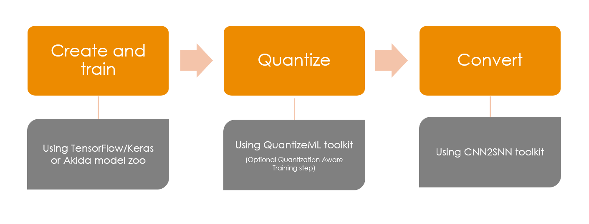
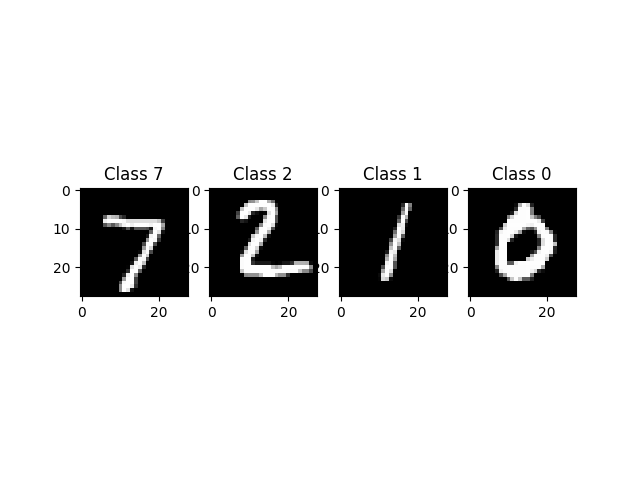
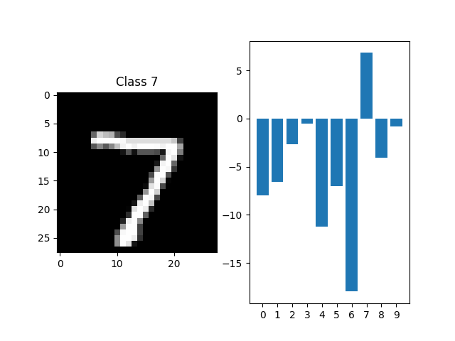

<!DOCTYPE html>
<html class="writer-html5" lang="en" data-content_root="../../">
<head>
  <meta charset="utf-8" /><meta name="viewport" content="width=device-width, initial-scale=1" />

  <meta name="viewport" content="width=device-width, initial-scale=1.0" />
  <title>Global Akida workflow &mdash; Akida Examples  documentation</title>
      <link rel="stylesheet" type="text/css" href="../../_static/pygments.css?v=b86133f3" />
      <link rel="stylesheet" type="text/css" href="../../_static/css/theme.css?v=e59714d7" />
      <link rel="stylesheet" type="text/css" href="../../_static/sg_gallery.css?v=d2d258e8" />
      <link rel="stylesheet" type="text/css" href="../../_static/sg_gallery-binder.css?v=f4aeca0c" />
      <link rel="stylesheet" type="text/css" href="../../_static/sg_gallery-dataframe.css?v=2082cf3c" />
      <link rel="stylesheet" type="text/css" href="../../_static/sg_gallery-rendered-html.css?v=1277b6f3" />
      <link rel="stylesheet" type="text/css" href="../../_static/sphinx-design.min.css?v=95c83b7e" />
      <link rel="stylesheet" type="text/css" href="../../_static/custom.css?v=c4c4e161" />

  
    <link rel="shortcut icon" href="../../_static/favicon.ico"/>
      <script src="../../_static/jquery.js?v=5d32c60e"></script>
      <script src="../../_static/_sphinx_javascript_frameworks_compat.js?v=2cd50e6c"></script>
      <script src="../../_static/documentation_options.js?v=5929fcd5"></script>
      <script src="../../_static/doctools.js?v=9bcbadda"></script>
      <script src="../../_static/sphinx_highlight.js?v=dc90522c"></script>
      <script src="../../_static/design-tabs.js?v=f930bc37"></script>
      <script src="../../_static/leadlander_tag.js?v=d65c0df8"></script>
    <script src="../../_static/js/theme.js"></script>
    <link rel="index" title="Index" href="../../genindex.html" />
    <link rel="search" title="Search" href="../../search.html" />
    <link rel="next" title="AkidaNet/ImageNet inference" href="plot_1_akidanet_imagenet.html" />
    <link rel="prev" title="Akida examples" href="../index.html" /> 
</head>

<body class="wy-body-for-nav"> 
  <div class="wy-grid-for-nav">
    <nav data-toggle="wy-nav-shift" class="wy-nav-side">
      <div class="wy-side-scroll">
        <div class="wy-side-nav-search"  style="background: #000000" >

          
          
          <a href="../../index.html">
            
              
          </a>
<div role="search">
  <form id="rtd-search-form" class="wy-form" action="../../search.html" method="get">
    <input type="text" name="q" placeholder="Search docs" aria-label="Search docs" />
    <input type="hidden" name="check_keywords" value="yes" />
    <input type="hidden" name="area" value="default" />
  </form>
</div>
        </div><div class="wy-menu wy-menu-vertical" data-spy="affix" role="navigation" aria-label="Navigation menu">
              <ul class="current">
<li class="toctree-l1"><a class="reference internal" href="../../index.html">Overview</a></li>
<li class="toctree-l1"><a class="reference internal" href="../../installation.html">Installation</a><ul>
<li class="toctree-l2"><a class="reference internal" href="../../installation.html#supported-configurations">Supported configurations</a></li>
<li class="toctree-l2"><a class="reference internal" href="../../installation.html#quick-installation">Quick installation</a></li>
<li class="toctree-l2"><a class="reference internal" href="../../installation.html#running-examples">Running examples</a></li>
</ul>
</li>
<li class="toctree-l1"><a class="reference internal" href="../../user_guide/user_guide.html">User guide</a><ul>
<li class="toctree-l2"><a class="reference internal" href="../../user_guide/akida.html">Akida user guide</a><ul>
<li class="toctree-l3"><a class="reference internal" href="../../user_guide/akida.html#overview">Overview</a></li>
<li class="toctree-l3"><a class="reference internal" href="../../user_guide/akida.html#programming-interface">Programming interface</a><ul>
<li class="toctree-l4"><a class="reference internal" href="../../user_guide/akida.html#the-akida-model">The Akida Model</a></li>
<li class="toctree-l4"><a class="reference internal" href="../../user_guide/akida.html#akida-layers">Akida layers</a></li>
</ul>
</li>
<li class="toctree-l3"><a class="reference internal" href="../../user_guide/akida.html#model-hardware-mapping">Model Hardware Mapping</a><ul>
<li class="toctree-l4"><a class="reference internal" href="../../user_guide/akida.html#devices">Devices</a></li>
<li class="toctree-l4"><a class="reference internal" href="../../user_guide/akida.html#model-mapping">Model mapping</a></li>
<li class="toctree-l4"><a class="reference internal" href="../../user_guide/akida.html#advanced-mapping-details-and-hardware-devices-usage">Advanced Mapping Details and Hardware Devices Usage</a></li>
<li class="toctree-l4"><a class="reference internal" href="../../user_guide/akida.html#performance-measurement">Performance measurement</a></li>
<li class="toctree-l4"><a class="reference internal" href="../../user_guide/akida.html#command-line-interface-for-model-evaluation">Command-line interface for model evaluation</a></li>
</ul>
</li>
<li class="toctree-l3"><a class="reference internal" href="../../user_guide/akida.html#using-akida-edge-learning">Using Akida Edge learning</a><ul>
<li class="toctree-l4"><a class="reference internal" href="../../user_guide/akida.html#learning-constraints">Learning constraints</a></li>
<li class="toctree-l4"><a class="reference internal" href="../../user_guide/akida.html#compiling-a-layer">Compiling a layer</a></li>
</ul>
</li>
</ul>
</li>
<li class="toctree-l2"><a class="reference internal" href="../../user_guide/quantizeml.html">QuantizeML toolkit</a><ul>
<li class="toctree-l3"><a class="reference internal" href="../../user_guide/quantizeml.html#overview">Overview</a></li>
<li class="toctree-l3"><a class="reference internal" href="../../user_guide/quantizeml.html#the-fixedpoint-representation">The FixedPoint representation</a></li>
<li class="toctree-l3"><a class="reference internal" href="../../user_guide/quantizeml.html#quantization-flow">Quantization flow</a><ul>
<li class="toctree-l4"><a class="reference internal" href="../../user_guide/quantizeml.html#compatibility-constraints">Compatibility constraints</a></li>
<li class="toctree-l4"><a class="reference internal" href="../../user_guide/quantizeml.html#model-loading">Model loading</a></li>
</ul>
</li>
<li class="toctree-l3"><a class="reference internal" href="../../user_guide/quantizeml.html#command-line-interface">Command line interface</a><ul>
<li class="toctree-l4"><a class="reference internal" href="../../user_guide/quantizeml.html#quantize-cli">quantize CLI</a></li>
<li class="toctree-l4"><a class="reference internal" href="../../user_guide/quantizeml.html#config-cli">config CLI</a></li>
<li class="toctree-l4"><a class="reference internal" href="../../user_guide/quantizeml.html#check-cli">check CLI</a></li>
<li class="toctree-l4"><a class="reference internal" href="../../user_guide/quantizeml.html#insert-rescaling-cli">insert_rescaling CLI</a></li>
</ul>
</li>
<li class="toctree-l3"><a class="reference internal" href="../../user_guide/quantizeml.html#supported-layer-types">Supported layer types</a><ul>
<li class="toctree-l4"><a class="reference internal" href="../../user_guide/quantizeml.html#tf-keras-support">TF-Keras support</a></li>
<li class="toctree-l4"><a class="reference internal" href="../../user_guide/quantizeml.html#onnx-support">ONNX support</a></li>
</ul>
</li>
<li class="toctree-l3"><a class="reference internal" href="../../user_guide/quantizeml.html#analysis-module">Analysis module</a><ul>
<li class="toctree-l4"><a class="reference internal" href="../../user_guide/quantizeml.html#kernel-distribution">Kernel distribution</a></li>
<li class="toctree-l4"><a class="reference internal" href="../../user_guide/quantizeml.html#quantization-error">Quantization error</a></li>
<li class="toctree-l4"><a class="reference internal" href="../../user_guide/quantizeml.html#metrics">Metrics</a></li>
<li class="toctree-l4"><a class="reference internal" href="../../user_guide/quantizeml.html#command-line">Command line</a></li>
</ul>
</li>
</ul>
</li>
<li class="toctree-l2"><a class="reference internal" href="../../user_guide/cnn2snn.html">CNN2SNN toolkit</a><ul>
<li class="toctree-l3"><a class="reference internal" href="../../user_guide/cnn2snn.html#overview">Overview</a></li>
<li class="toctree-l3"><a class="reference internal" href="../../user_guide/cnn2snn.html#conversion-flow">Conversion flow</a><ul>
<li class="toctree-l4"><a class="reference internal" href="../../user_guide/cnn2snn.html#conversion-compatibility">Conversion compatibility</a></li>
<li class="toctree-l4"><a class="reference internal" href="../../user_guide/cnn2snn.html#command-line-interface">Command-line interface</a></li>
</ul>
</li>
<li class="toctree-l3"><a class="reference internal" href="../../user_guide/cnn2snn.html#handling-akida-1-0-and-akida-2-0-specificities">Handling Akida 1.0 and Akida 2.0 specificities</a></li>
</ul>
</li>
<li class="toctree-l2"><a class="reference internal" href="../../user_guide/akida_models.html">Akida models zoo</a><ul>
<li class="toctree-l3"><a class="reference internal" href="../../user_guide/akida_models.html#overview">Overview</a></li>
<li class="toctree-l3"><a class="reference internal" href="../../user_guide/akida_models.html#command-line-interface-for-model-creation">Command-line interface for model creation</a></li>
<li class="toctree-l3"><a class="reference internal" href="../../user_guide/akida_models.html#command-line-interface-for-model-training">Command-line interface for model training</a><ul>
<li class="toctree-l4"><a class="reference internal" href="../../user_guide/akida_models.html#kws-training">KWS training</a></li>
<li class="toctree-l4"><a class="reference internal" href="../../user_guide/akida_models.html#akidanet-training">AkidaNet training</a></li>
</ul>
</li>
<li class="toctree-l3"><a class="reference internal" href="../../user_guide/akida_models.html#command-line-interface-for-model-evaluation">Command-line interface for model evaluation</a></li>
<li class="toctree-l3"><a class="reference internal" href="../../user_guide/akida_models.html#command-line-interface-to-display-summary">Command-line interface to display summary</a></li>
<li class="toctree-l3"><a class="reference internal" href="../../user_guide/akida_models.html#command-line-interface-to-display-sparsity">Command-line interface to display sparsity</a></li>
<li class="toctree-l3"><a class="reference internal" href="../../user_guide/akida_models.html#id1">Layer Blocks</a></li>
<li class="toctree-l3"><a class="reference internal" href="../../user_guide/akida_models.html#handling-akida-1-0-and-akida-2-0-specificities">Handling Akida 1.0 and Akida 2.0 specificities</a></li>
</ul>
</li>
<li class="toctree-l2"><a class="reference internal" href="../../user_guide/engine.html">Akida Engine</a><ul>
<li class="toctree-l3"><a class="reference internal" href="../../user_guide/engine.html#overview">Overview</a></li>
<li class="toctree-l3"><a class="reference internal" href="../../user_guide/engine.html#engine-directory-structure">Engine directory structure</a></li>
<li class="toctree-l3"><a class="reference internal" href="../../user_guide/engine.html#engine-api-overview">Engine API overview</a><ul>
<li class="toctree-l4"><a class="reference internal" href="../../user_guide/engine.html#hardwaredriver">HardwareDriver</a></li>
<li class="toctree-l4"><a class="reference internal" href="../../user_guide/engine.html#hardwaredevice">HardwareDevice</a></li>
<li class="toctree-l4"><a class="reference internal" href="../../user_guide/engine.html#dense">Dense</a></li>
<li class="toctree-l4"><a class="reference internal" href="../../user_guide/engine.html#shape">Shape</a></li>
<li class="toctree-l4"><a class="reference internal" href="../../user_guide/engine.html#hwversion">HwVersion</a></li>
<li class="toctree-l4"><a class="reference internal" href="../../user_guide/engine.html#sparse-and-input-conversion-functions">Sparse and Input conversion functions</a></li>
<li class="toctree-l4"><a class="reference internal" href="../../user_guide/engine.html#other-headers-in-the-api">Other headers in the API</a></li>
</ul>
</li>
</ul>
</li>
<li class="toctree-l2"><a class="reference internal" href="../../user_guide/user_guide.html#akida-hw-capabilities">Akida HW capabilities</a><ul>
<li class="toctree-l3"><a class="reference internal" href="../../user_guide/hardware/1.0.html">Akida 1.0 capabilities</a></li>
<li class="toctree-l3"><a class="reference internal" href="../../user_guide/hardware/2.0.html">Akida 2.0 capabilities</a></li>
</ul>
</li>
</ul>
</li>
<li class="toctree-l1"><a class="reference internal" href="../../api_reference/api_reference.html">API reference</a><ul>
<li class="toctree-l2"><a class="reference internal" href="../../api_reference/akida_apis.html">Akida runtime</a><ul>
<li class="toctree-l3"><a class="reference internal" href="../../api_reference/akida_apis.html#akida.__version__"><code class="docutils literal notranslate"><span class="pre">__version__</span></code></a></li>
<li class="toctree-l3"><a class="reference internal" href="../../api_reference/akida_apis.html#model">Model</a><ul>
<li class="toctree-l4"><a class="reference internal" href="../../api_reference/akida_apis.html#akida.Model"><code class="docutils literal notranslate"><span class="pre">Model</span></code></a></li>
</ul>
</li>
<li class="toctree-l3"><a class="reference internal" href="../../api_reference/akida_apis.html#akida-layers">Akida layers</a><ul>
<li class="toctree-l4"><a class="reference internal" href="../../api_reference/akida_apis.html#layer-api">Layer API</a></li>
<li class="toctree-l4"><a class="reference internal" href="../../api_reference/akida_apis.html#common-layer">Common layer</a></li>
<li class="toctree-l4"><a class="reference internal" href="../../api_reference/akida_apis.html#akida-v1-layers">Akida V1 layers</a></li>
<li class="toctree-l4"><a class="reference internal" href="../../api_reference/akida_apis.html#akida-v2-layers">Akida V2 layers</a></li>
</ul>
</li>
<li class="toctree-l3"><a class="reference internal" href="../../api_reference/akida_apis.html#layer-parameters">Layer parameters</a><ul>
<li class="toctree-l4"><a class="reference internal" href="../../api_reference/akida_apis.html#layertype">LayerType</a></li>
<li class="toctree-l4"><a class="reference internal" href="../../api_reference/akida_apis.html#activationtype">ActivationType</a></li>
<li class="toctree-l4"><a class="reference internal" href="../../api_reference/akida_apis.html#padding">Padding</a></li>
<li class="toctree-l4"><a class="reference internal" href="../../api_reference/akida_apis.html#pooltype">PoolType</a></li>
</ul>
</li>
<li class="toctree-l3"><a class="reference internal" href="../../api_reference/akida_apis.html#optimizers">Optimizers</a><ul>
<li class="toctree-l4"><a class="reference internal" href="../../api_reference/akida_apis.html#akida.core.Optimizer"><code class="docutils literal notranslate"><span class="pre">Optimizer</span></code></a></li>
<li class="toctree-l4"><a class="reference internal" href="../../api_reference/akida_apis.html#akida.AkidaUnsupervised"><code class="docutils literal notranslate"><span class="pre">AkidaUnsupervised</span></code></a></li>
</ul>
</li>
<li class="toctree-l3"><a class="reference internal" href="../../api_reference/akida_apis.html#sequence">Sequence</a><ul>
<li class="toctree-l4"><a class="reference internal" href="../../api_reference/akida_apis.html#id1">Sequence</a></li>
<li class="toctree-l4"><a class="reference internal" href="../../api_reference/akida_apis.html#backendtype">BackendType</a></li>
<li class="toctree-l4"><a class="reference internal" href="../../api_reference/akida_apis.html#pass">Pass</a></li>
</ul>
</li>
<li class="toctree-l3"><a class="reference internal" href="../../api_reference/akida_apis.html#device">Device</a><ul>
<li class="toctree-l4"><a class="reference internal" href="../../api_reference/akida_apis.html#id2">Device</a></li>
<li class="toctree-l4"><a class="reference internal" href="../../api_reference/akida_apis.html#hwversion">HwVersion</a></li>
</ul>
</li>
<li class="toctree-l3"><a class="reference internal" href="../../api_reference/akida_apis.html#hwdevice">HWDevice</a><ul>
<li class="toctree-l4"><a class="reference internal" href="../../api_reference/akida_apis.html#id3">HWDevice</a></li>
<li class="toctree-l4"><a class="reference internal" href="../../api_reference/akida_apis.html#socdriver">SocDriver</a></li>
<li class="toctree-l4"><a class="reference internal" href="../../api_reference/akida_apis.html#clockmode">ClockMode</a></li>
</ul>
</li>
<li class="toctree-l3"><a class="reference internal" href="../../api_reference/akida_apis.html#powermeter">PowerMeter</a><ul>
<li class="toctree-l4"><a class="reference internal" href="../../api_reference/akida_apis.html#akida.PowerMeter"><code class="docutils literal notranslate"><span class="pre">PowerMeter</span></code></a></li>
<li class="toctree-l4"><a class="reference internal" href="../../api_reference/akida_apis.html#akida.PowerEvent"><code class="docutils literal notranslate"><span class="pre">PowerEvent</span></code></a></li>
</ul>
</li>
<li class="toctree-l3"><a class="reference internal" href="../../api_reference/akida_apis.html#np">NP</a><ul>
<li class="toctree-l4"><a class="reference internal" href="../../api_reference/akida_apis.html#akida.NP.Mesh"><code class="docutils literal notranslate"><span class="pre">Mesh</span></code></a></li>
<li class="toctree-l4"><a class="reference internal" href="../../api_reference/akida_apis.html#akida.NP.Info"><code class="docutils literal notranslate"><span class="pre">Info</span></code></a></li>
<li class="toctree-l4"><a class="reference internal" href="../../api_reference/akida_apis.html#akida.NP.Ident"><code class="docutils literal notranslate"><span class="pre">Ident</span></code></a></li>
<li class="toctree-l4"><a class="reference internal" href="../../api_reference/akida_apis.html#akida.NP.NpSpace"><code class="docutils literal notranslate"><span class="pre">NpSpace</span></code></a></li>
<li class="toctree-l4"><a class="reference internal" href="../../api_reference/akida_apis.html#akida.NP.Type"><code class="docutils literal notranslate"><span class="pre">Type</span></code></a></li>
<li class="toctree-l4"><a class="reference internal" href="../../api_reference/akida_apis.html#akida.NP.MemoryInfo"><code class="docutils literal notranslate"><span class="pre">MemoryInfo</span></code></a></li>
<li class="toctree-l4"><a class="reference internal" href="../../api_reference/akida_apis.html#akida.NP.Component"><code class="docutils literal notranslate"><span class="pre">Component</span></code></a></li>
<li class="toctree-l4"><a class="reference internal" href="../../api_reference/akida_apis.html#akida.NP.SramSize"><code class="docutils literal notranslate"><span class="pre">SramSize</span></code></a></li>
</ul>
</li>
<li class="toctree-l3"><a class="reference internal" href="../../api_reference/akida_apis.html#mapping">Mapping</a><ul>
<li class="toctree-l4"><a class="reference internal" href="../../api_reference/akida_apis.html#akida.MapMode"><code class="docutils literal notranslate"><span class="pre">MapMode</span></code></a></li>
<li class="toctree-l4"><a class="reference internal" href="../../api_reference/akida_apis.html#akida.MapConstraints"><code class="docutils literal notranslate"><span class="pre">MapConstraints</span></code></a></li>
</ul>
</li>
</ul>
</li>
<li class="toctree-l2"><a class="reference internal" href="../../api_reference/cnn2snn_apis.html">CNN2SNN</a><ul>
<li class="toctree-l3"><a class="reference internal" href="../../api_reference/cnn2snn_apis.html#akida-version">Akida version</a><ul>
<li class="toctree-l4"><a class="reference internal" href="../../api_reference/cnn2snn_apis.html#cnn2snn.AkidaVersion"><code class="docutils literal notranslate"><span class="pre">AkidaVersion</span></code></a></li>
<li class="toctree-l4"><a class="reference internal" href="../../api_reference/cnn2snn_apis.html#cnn2snn.get_akida_version"><code class="docutils literal notranslate"><span class="pre">get_akida_version()</span></code></a></li>
<li class="toctree-l4"><a class="reference internal" href="../../api_reference/cnn2snn_apis.html#cnn2snn.set_akida_version"><code class="docutils literal notranslate"><span class="pre">set_akida_version()</span></code></a></li>
</ul>
</li>
<li class="toctree-l3"><a class="reference internal" href="../../api_reference/cnn2snn_apis.html#conversion">Conversion</a><ul>
<li class="toctree-l4"><a class="reference internal" href="../../api_reference/cnn2snn_apis.html#cnn2snn.convert"><code class="docutils literal notranslate"><span class="pre">convert()</span></code></a></li>
<li class="toctree-l4"><a class="reference internal" href="../../api_reference/cnn2snn_apis.html#cnn2snn.check_model_compatibility"><code class="docutils literal notranslate"><span class="pre">check_model_compatibility()</span></code></a></li>
</ul>
</li>
</ul>
</li>
<li class="toctree-l2"><a class="reference internal" href="../../api_reference/quantizeml_apis.html">QuantizeML</a><ul>
<li class="toctree-l3"><a class="reference internal" href="../../api_reference/quantizeml_apis.html#layers">Layers</a><ul>
<li class="toctree-l4"><a class="reference internal" href="../../api_reference/quantizeml_apis.html#reshaping">Reshaping</a></li>
<li class="toctree-l4"><a class="reference internal" href="../../api_reference/quantizeml_apis.html#activations">Activations</a></li>
<li class="toctree-l4"><a class="reference internal" href="../../api_reference/quantizeml_apis.html#convolution">Convolution</a></li>
<li class="toctree-l4"><a class="reference internal" href="../../api_reference/quantizeml_apis.html#depthwise-convolution">Depthwise convolution</a></li>
<li class="toctree-l4"><a class="reference internal" href="../../api_reference/quantizeml_apis.html#separable-convolution">Separable convolution</a></li>
<li class="toctree-l4"><a class="reference internal" href="../../api_reference/quantizeml_apis.html#temporal-convolution">Temporal convolution</a></li>
<li class="toctree-l4"><a class="reference internal" href="../../api_reference/quantizeml_apis.html#dense">Dense</a></li>
<li class="toctree-l4"><a class="reference internal" href="../../api_reference/quantizeml_apis.html#skip-connection">Skip connection</a></li>
<li class="toctree-l4"><a class="reference internal" href="../../api_reference/quantizeml_apis.html#pooling">Pooling</a></li>
<li class="toctree-l4"><a class="reference internal" href="../../api_reference/quantizeml_apis.html#rescaling">Rescaling</a></li>
<li class="toctree-l4"><a class="reference internal" href="../../api_reference/quantizeml_apis.html#dropout">Dropout</a></li>
<li class="toctree-l4"><a class="reference internal" href="../../api_reference/quantizeml_apis.html#quantizers">Quantizers</a></li>
<li class="toctree-l4"><a class="reference internal" href="../../api_reference/quantizeml_apis.html#calibration">Calibration</a></li>
<li class="toctree-l4"><a class="reference internal" href="../../api_reference/quantizeml_apis.html#recording">Recording</a></li>
</ul>
</li>
<li class="toctree-l3"><a class="reference internal" href="../../api_reference/quantizeml_apis.html#models">Models</a><ul>
<li class="toctree-l4"><a class="reference internal" href="../../api_reference/quantizeml_apis.html#quantization">Quantization</a></li>
<li class="toctree-l4"><a class="reference internal" href="../../api_reference/quantizeml_apis.html#quantization-parameters">Quantization parameters</a></li>
<li class="toctree-l4"><a class="reference internal" href="../../api_reference/quantizeml_apis.html#id1">Calibration</a></li>
<li class="toctree-l4"><a class="reference internal" href="../../api_reference/quantizeml_apis.html#utils">Utils</a></li>
<li class="toctree-l4"><a class="reference internal" href="../../api_reference/quantizeml_apis.html#reset-buffers">Reset buffers</a></li>
</ul>
</li>
<li class="toctree-l3"><a class="reference internal" href="../../api_reference/quantizeml_apis.html#tensors">Tensors</a><ul>
<li class="toctree-l4"><a class="reference internal" href="../../api_reference/quantizeml_apis.html#qtensor">QTensor</a></li>
<li class="toctree-l4"><a class="reference internal" href="../../api_reference/quantizeml_apis.html#fixedpoint">FixedPoint</a></li>
<li class="toctree-l4"><a class="reference internal" href="../../api_reference/quantizeml_apis.html#qfloat">QFloat</a></li>
</ul>
</li>
<li class="toctree-l3"><a class="reference internal" href="../../api_reference/quantizeml_apis.html#onnx-support">ONNX support</a><ul>
<li class="toctree-l4"><a class="reference internal" href="../../api_reference/quantizeml_apis.html#id2">Layers</a></li>
<li class="toctree-l4"><a class="reference internal" href="../../api_reference/quantizeml_apis.html#custom-patterns">Custom patterns</a></li>
</ul>
</li>
<li class="toctree-l3"><a class="reference internal" href="../../api_reference/quantizeml_apis.html#model-i-o">Model I/O</a><ul>
<li class="toctree-l4"><a class="reference internal" href="../../api_reference/quantizeml_apis.html#quantizeml.load_model"><code class="docutils literal notranslate"><span class="pre">load_model()</span></code></a></li>
<li class="toctree-l4"><a class="reference internal" href="../../api_reference/quantizeml_apis.html#quantizeml.save_model"><code class="docutils literal notranslate"><span class="pre">save_model()</span></code></a></li>
</ul>
</li>
<li class="toctree-l3"><a class="reference internal" href="../../api_reference/quantizeml_apis.html#analysis">Analysis</a><ul>
<li class="toctree-l4"><a class="reference internal" href="../../api_reference/quantizeml_apis.html#kernel-distribution">Kernel distribution</a></li>
<li class="toctree-l4"><a class="reference internal" href="../../api_reference/quantizeml_apis.html#quantization-error">Quantization error</a></li>
<li class="toctree-l4"><a class="reference internal" href="../../api_reference/quantizeml_apis.html#metrics">Metrics</a></li>
</ul>
</li>
</ul>
</li>
<li class="toctree-l2"><a class="reference internal" href="../../api_reference/akida_models_apis.html">Akida models</a><ul>
<li class="toctree-l3"><a class="reference internal" href="../../api_reference/akida_models_apis.html#layer-blocks">Layer blocks</a><ul>
<li class="toctree-l4"><a class="reference internal" href="../../api_reference/akida_models_apis.html#cnn-blocks">CNN blocks</a></li>
<li class="toctree-l4"><a class="reference internal" href="../../api_reference/akida_models_apis.html#transposed-blocks">Transposed blocks</a></li>
<li class="toctree-l4"><a class="reference internal" href="../../api_reference/akida_models_apis.html#detection-block">Detection block</a></li>
<li class="toctree-l4"><a class="reference internal" href="../../api_reference/akida_models_apis.html#spatiotemporal-blocks">Spatiotemporal blocks</a></li>
</ul>
</li>
<li class="toctree-l3"><a class="reference internal" href="../../api_reference/akida_models_apis.html#helpers">Helpers</a><ul>
<li class="toctree-l4"><a class="reference internal" href="../../api_reference/akida_models_apis.html#gamma-constraint">Gamma constraint</a></li>
<li class="toctree-l4"><a class="reference internal" href="../../api_reference/akida_models_apis.html#unfusing-separableconvolutional">Unfusing SeparableConvolutional</a></li>
<li class="toctree-l4"><a class="reference internal" href="../../api_reference/akida_models_apis.html#extract-samples">Extract samples</a></li>
</ul>
</li>
<li class="toctree-l3"><a class="reference internal" href="../../api_reference/akida_models_apis.html#knowledge-distillation">Knowledge distillation</a><ul>
<li class="toctree-l4"><a class="reference internal" href="../../api_reference/akida_models_apis.html#akida_models.distiller.Distiller"><code class="docutils literal notranslate"><span class="pre">Distiller</span></code></a></li>
</ul>
</li>
<li class="toctree-l3"><a class="reference internal" href="../../api_reference/akida_models_apis.html#sparsity">Sparsity</a><ul>
<li class="toctree-l4"><a class="reference internal" href="../../api_reference/akida_models_apis.html#akida_models.sparsity.compute_sparsity"><code class="docutils literal notranslate"><span class="pre">compute_sparsity()</span></code></a></li>
</ul>
</li>
<li class="toctree-l3"><a class="reference internal" href="../../api_reference/akida_models_apis.html#model-i-o">Model I/O</a><ul>
<li class="toctree-l4"><a class="reference internal" href="../../api_reference/akida_models_apis.html#akida_models.model_io.load_model"><code class="docutils literal notranslate"><span class="pre">load_model()</span></code></a></li>
<li class="toctree-l4"><a class="reference internal" href="../../api_reference/akida_models_apis.html#akida_models.model_io.load_weights"><code class="docutils literal notranslate"><span class="pre">load_weights()</span></code></a></li>
<li class="toctree-l4"><a class="reference internal" href="../../api_reference/akida_models_apis.html#akida_models.model_io.save_weights"><code class="docutils literal notranslate"><span class="pre">save_weights()</span></code></a></li>
<li class="toctree-l4"><a class="reference internal" href="../../api_reference/akida_models_apis.html#akida_models.model_io.get_model_path"><code class="docutils literal notranslate"><span class="pre">get_model_path()</span></code></a></li>
</ul>
</li>
<li class="toctree-l3"><a class="reference internal" href="../../api_reference/akida_models_apis.html#utils">Utils</a><ul>
<li class="toctree-l4"><a class="reference internal" href="../../api_reference/akida_models_apis.html#akida_models.utils.fetch_file"><code class="docutils literal notranslate"><span class="pre">fetch_file()</span></code></a></li>
<li class="toctree-l4"><a class="reference internal" href="../../api_reference/akida_models_apis.html#akida_models.utils.get_tensorboard_callback"><code class="docutils literal notranslate"><span class="pre">get_tensorboard_callback()</span></code></a></li>
<li class="toctree-l4"><a class="reference internal" href="../../api_reference/akida_models_apis.html#akida_models.utils.get_params_by_version"><code class="docutils literal notranslate"><span class="pre">get_params_by_version()</span></code></a></li>
</ul>
</li>
<li class="toctree-l3"><a class="reference internal" href="../../api_reference/akida_models_apis.html#model-zoo">Model zoo</a><ul>
<li class="toctree-l4"><a class="reference internal" href="../../api_reference/akida_models_apis.html#akidanet">AkidaNet</a></li>
<li class="toctree-l4"><a class="reference internal" href="../../api_reference/akida_models_apis.html#mobilenet">Mobilenet</a></li>
<li class="toctree-l4"><a class="reference internal" href="../../api_reference/akida_models_apis.html#ds-cnn">DS-CNN</a></li>
<li class="toctree-l4"><a class="reference internal" href="../../api_reference/akida_models_apis.html#vgg">VGG</a></li>
<li class="toctree-l4"><a class="reference internal" href="../../api_reference/akida_models_apis.html#yolo">YOLO</a></li>
<li class="toctree-l4"><a class="reference internal" href="../../api_reference/akida_models_apis.html#pointnet">PointNet++</a></li>
<li class="toctree-l4"><a class="reference internal" href="../../api_reference/akida_models_apis.html#gxnor">GXNOR</a></li>
<li class="toctree-l4"><a class="reference internal" href="../../api_reference/akida_models_apis.html#centernet">CenterNet</a></li>
<li class="toctree-l4"><a class="reference internal" href="../../api_reference/akida_models_apis.html#akidaunet">AkidaUNet</a></li>
<li class="toctree-l4"><a class="reference internal" href="../../api_reference/akida_models_apis.html#spatiotemporal-tenns">Spatiotemporal TENNs</a></li>
</ul>
</li>
</ul>
</li>
<li class="toctree-l2"><a class="reference internal" href="../../api_reference/tenns_modules_apis.html">TENNs modules</a><ul>
<li class="toctree-l3"><a class="reference internal" href="../../api_reference/tenns_modules_apis.html#spatiotemporal-blocks">Spatiotemporal blocks</a><ul>
<li class="toctree-l4"><a class="reference internal" href="../../api_reference/tenns_modules_apis.html#tenns_modules.SpatialBlock"><code class="docutils literal notranslate"><span class="pre">SpatialBlock</span></code></a></li>
<li class="toctree-l4"><a class="reference internal" href="../../api_reference/tenns_modules_apis.html#tenns_modules.TemporalBlock"><code class="docutils literal notranslate"><span class="pre">TemporalBlock</span></code></a></li>
<li class="toctree-l4"><a class="reference internal" href="../../api_reference/tenns_modules_apis.html#tenns_modules.SpatioTemporalBlock"><code class="docutils literal notranslate"><span class="pre">SpatioTemporalBlock</span></code></a></li>
</ul>
</li>
<li class="toctree-l3"><a class="reference internal" href="../../api_reference/tenns_modules_apis.html#export">Export</a><ul>
<li class="toctree-l4"><a class="reference internal" href="../../api_reference/tenns_modules_apis.html#tenns_modules.export_to_onnx"><code class="docutils literal notranslate"><span class="pre">export_to_onnx()</span></code></a></li>
</ul>
</li>
</ul>
</li>
</ul>
</li>
<li class="toctree-l1 current"><a class="reference internal" href="../index.html">Examples</a><ul class="current">
<li class="toctree-l2 current"><a class="reference internal" href="../index.html#general-examples">General examples</a><ul class="current">
<li class="toctree-l3 current"><a class="current reference internal" href="#">Global Akida workflow</a><ul>
<li class="toctree-l4"><a class="reference internal" href="#create-and-train">1. Create and train</a></li>
<li class="toctree-l4"><a class="reference internal" href="#quantize">2. Quantize</a></li>
<li class="toctree-l4"><a class="reference internal" href="#convert">3. Convert</a></li>
</ul>
</li>
<li class="toctree-l3"><a class="reference internal" href="plot_1_akidanet_imagenet.html">AkidaNet/ImageNet inference</a><ul>
<li class="toctree-l4"><a class="reference internal" href="plot_1_akidanet_imagenet.html#dataset-preparation">1. Dataset preparation</a></li>
<li class="toctree-l4"><a class="reference internal" href="plot_1_akidanet_imagenet.html#pretrained-quantized-model">2. Pretrained quantized model</a></li>
<li class="toctree-l4"><a class="reference internal" href="plot_1_akidanet_imagenet.html#conversion-to-akida">3. Conversion to Akida</a></li>
<li class="toctree-l4"><a class="reference internal" href="plot_1_akidanet_imagenet.html#hardware-mapping-and-performance">4. Hardware mapping and performance</a></li>
</ul>
</li>
<li class="toctree-l3"><a class="reference internal" href="plot_2_ds_cnn_kws.html">DS-CNN/KWS inference</a><ul>
<li class="toctree-l4"><a class="reference internal" href="plot_2_ds_cnn_kws.html#load-the-preprocessed-dataset">1. Load the preprocessed dataset</a></li>
<li class="toctree-l4"><a class="reference internal" href="plot_2_ds_cnn_kws.html#load-a-pre-trained-native-tf-keras-model">2. Load a pre-trained native TF-Keras model</a></li>
<li class="toctree-l4"><a class="reference internal" href="plot_2_ds_cnn_kws.html#load-a-pre-trained-quantized-tf-keras-model">3. Load a pre-trained quantized TF-Keras model</a></li>
<li class="toctree-l4"><a class="reference internal" href="plot_2_ds_cnn_kws.html#conversion-to-akida">4. Conversion to Akida</a></li>
<li class="toctree-l4"><a class="reference internal" href="plot_2_ds_cnn_kws.html#confusion-matrix">5. Confusion matrix</a></li>
</ul>
</li>
<li class="toctree-l3"><a class="reference internal" href="plot_3_regression.html">Age estimation (regression) example</a><ul>
<li class="toctree-l4"><a class="reference internal" href="plot_3_regression.html#load-the-utkface-dataset">1. Load the UTKFace Dataset</a></li>
<li class="toctree-l4"><a class="reference internal" href="plot_3_regression.html#load-a-pre-trained-native-tf-keras-model">2. Load a pre-trained native TF-Keras model</a></li>
<li class="toctree-l4"><a class="reference internal" href="plot_3_regression.html#load-a-pre-trained-quantized-tf-keras-model">3. Load a pre-trained quantized TF-Keras model</a></li>
<li class="toctree-l4"><a class="reference internal" href="plot_3_regression.html#conversion-to-akida">4. Conversion to Akida</a></li>
<li class="toctree-l4"><a class="reference internal" href="plot_3_regression.html#estimate-age-on-a-single-image">5. Estimate age on a single image</a></li>
</ul>
</li>
<li class="toctree-l3"><a class="reference internal" href="plot_4_transfer_learning.html">Transfer learning with AkidaNet for PlantVillage</a><ul>
<li class="toctree-l4"><a class="reference internal" href="plot_4_transfer_learning.html#transfer-learning-process">Transfer learning process</a></li>
<li class="toctree-l4"><a class="reference internal" href="plot_4_transfer_learning.html#dataset-preparation">1. Dataset preparation</a></li>
<li class="toctree-l4"><a class="reference internal" href="plot_4_transfer_learning.html#get-a-trained-akidanet-base-model">2. Get a trained AkidaNet base model</a></li>
<li class="toctree-l4"><a class="reference internal" href="plot_4_transfer_learning.html#add-a-classification-head-to-the-model">3. Add a classification head to the model</a></li>
<li class="toctree-l4"><a class="reference internal" href="plot_4_transfer_learning.html#train-for-a-few-epochs">4. Train for a few epochs</a></li>
<li class="toctree-l4"><a class="reference internal" href="plot_4_transfer_learning.html#quantize-the-model">5. Quantize the model</a></li>
<li class="toctree-l4"><a class="reference internal" href="plot_4_transfer_learning.html#compute-accuracy">6. Compute accuracy</a></li>
</ul>
</li>
<li class="toctree-l3"><a class="reference internal" href="plot_5_voc_yolo_detection.html">YOLO/PASCAL-VOC detection tutorial</a><ul>
<li class="toctree-l4"><a class="reference internal" href="plot_5_voc_yolo_detection.html#introduction">1. Introduction</a></li>
<li class="toctree-l4"><a class="reference internal" href="plot_5_voc_yolo_detection.html#preprocessing-tools">2. Preprocessing tools</a></li>
<li class="toctree-l4"><a class="reference internal" href="plot_5_voc_yolo_detection.html#model-architecture">3. Model architecture</a></li>
<li class="toctree-l4"><a class="reference internal" href="plot_5_voc_yolo_detection.html#training">4. Training</a></li>
<li class="toctree-l4"><a class="reference internal" href="plot_5_voc_yolo_detection.html#performance">5. Performance</a></li>
<li class="toctree-l4"><a class="reference internal" href="plot_5_voc_yolo_detection.html#conversion-to-akida">6. Conversion to Akida</a></li>
</ul>
</li>
<li class="toctree-l3"><a class="reference internal" href="plot_6_segmentation.html">Segmentation tutorial</a><ul>
<li class="toctree-l4"><a class="reference internal" href="plot_6_segmentation.html#load-the-dataset">1. Load the dataset</a></li>
<li class="toctree-l4"><a class="reference internal" href="plot_6_segmentation.html#load-a-pre-trained-native-tf-keras-model">2. Load a pre-trained native TF-Keras model</a></li>
<li class="toctree-l4"><a class="reference internal" href="plot_6_segmentation.html#load-a-pre-trained-quantized-keras-model">3. Load a pre-trained quantized Keras model</a></li>
<li class="toctree-l4"><a class="reference internal" href="plot_6_segmentation.html#conversion-to-akida">4. Conversion to Akida</a></li>
<li class="toctree-l4"><a class="reference internal" href="plot_6_segmentation.html#segment-a-single-image">5. Segment a single image</a></li>
</ul>
</li>
<li class="toctree-l3"><a class="reference internal" href="plot_7_global_pytorch_workflow.html">PyTorch to Akida workflow</a><ul>
<li class="toctree-l4"><a class="reference internal" href="plot_7_global_pytorch_workflow.html#create-and-train">1. Create and train</a></li>
<li class="toctree-l4"><a class="reference internal" href="plot_7_global_pytorch_workflow.html#export">2. Export</a></li>
<li class="toctree-l4"><a class="reference internal" href="plot_7_global_pytorch_workflow.html#quantize">3. Quantize</a></li>
<li class="toctree-l4"><a class="reference internal" href="plot_7_global_pytorch_workflow.html#convert">4. Convert</a></li>
</ul>
</li>
</ul>
</li>
<li class="toctree-l2"><a class="reference internal" href="../index.html#quantization">Quantization</a><ul>
<li class="toctree-l3"><a class="reference internal" href="../quantization/plot_0_advanced_quantizeml.html">Advanced QuantizeML tutorial</a><ul>
<li class="toctree-l4"><a class="reference internal" href="../quantization/plot_0_advanced_quantizeml.html#defining-a-quantization-scheme">1. Defining a quantization scheme</a></li>
<li class="toctree-l4"><a class="reference internal" href="../quantization/plot_0_advanced_quantizeml.html#calibration">2. Calibration</a></li>
</ul>
</li>
<li class="toctree-l3"><a class="reference internal" href="../quantization/plot_1_upgrading_to_2.0.html">Upgrading to Akida 2.0</a><ul>
<li class="toctree-l4"><a class="reference internal" href="../quantization/plot_1_upgrading_to_2.0.html#workflow-differences">1. Workflow differences</a></li>
<li class="toctree-l4"><a class="reference internal" href="../quantization/plot_1_upgrading_to_2.0.html#models-architecture-differences">2. Models architecture differences</a></li>
<li class="toctree-l4"><a class="reference internal" href="../quantization/plot_1_upgrading_to_2.0.html#using-akidaversion">3. Using <code class="docutils literal notranslate"><span class="pre">AkidaVersion</span></code></a></li>
</ul>
</li>
<li class="toctree-l3"><a class="reference internal" href="../quantization/plot_2_off_the_shelf_quantization.html">Off-the-shelf models quantization</a><ul>
<li class="toctree-l4"><a class="reference internal" href="../quantization/plot_2_off_the_shelf_quantization.html#workflow-overview">1. Workflow overview</a></li>
<li class="toctree-l4"><a class="reference internal" href="../quantization/plot_2_off_the_shelf_quantization.html#data-preparation">2. Data preparation</a></li>
<li class="toctree-l4"><a class="reference internal" href="../quantization/plot_2_off_the_shelf_quantization.html#download-and-export">3. Download and export</a></li>
<li class="toctree-l4"><a class="reference internal" href="../quantization/plot_2_off_the_shelf_quantization.html#quantize">4. Quantize</a></li>
<li class="toctree-l4"><a class="reference internal" href="../quantization/plot_2_off_the_shelf_quantization.html#convert-to-akida">5. Convert to Akida</a></li>
</ul>
</li>
<li class="toctree-l3"><a class="reference internal" href="../quantization/plot_3_custom_patterns.html">Advanced ONNX models quantization</a><ul>
<li class="toctree-l4"><a class="reference internal" href="../quantization/plot_3_custom_patterns.html#get-model-and-data">1. Get model and data</a></li>
<li class="toctree-l4"><a class="reference internal" href="../quantization/plot_3_custom_patterns.html#quantize">2. Quantize</a></li>
<li class="toctree-l4"><a class="reference internal" href="../quantization/plot_3_custom_patterns.html#conversion">3. Conversion</a></li>
</ul>
</li>
</ul>
</li>
<li class="toctree-l2"><a class="reference internal" href="../index.html#edge-examples">Edge examples</a><ul>
<li class="toctree-l3"><a class="reference internal" href="../edge/plot_0_edge_learning_vision.html">Akida vision edge learning</a><ul>
<li class="toctree-l4"><a class="reference internal" href="../edge/plot_0_edge_learning_vision.html#dataset-preparation">1. Dataset preparation</a></li>
<li class="toctree-l4"><a class="reference internal" href="../edge/plot_0_edge_learning_vision.html#prepare-akida-model-for-learning">2. Prepare Akida model for learning</a></li>
<li class="toctree-l4"><a class="reference internal" href="../edge/plot_0_edge_learning_vision.html#edge-learning-with-akida">3. Edge learning with Akida</a></li>
</ul>
</li>
<li class="toctree-l3"><a class="reference internal" href="../edge/plot_1_edge_learning_kws.html">Akida edge learning for keyword spotting</a><ul>
<li class="toctree-l4"><a class="reference internal" href="../edge/plot_1_edge_learning_kws.html#edge-learning-process">1. Edge learning process</a></li>
<li class="toctree-l4"><a class="reference internal" href="../edge/plot_1_edge_learning_kws.html#dataset-preparation">2. Dataset preparation</a></li>
<li class="toctree-l4"><a class="reference internal" href="../edge/plot_1_edge_learning_kws.html#prepare-akida-model-for-learning">3. Prepare Akida model for learning</a></li>
<li class="toctree-l4"><a class="reference internal" href="../edge/plot_1_edge_learning_kws.html#learn-with-akida-using-the-training-set">4. Learn with Akida using the training set</a></li>
<li class="toctree-l4"><a class="reference internal" href="../edge/plot_1_edge_learning_kws.html#edge-learning">5. Edge learning</a></li>
</ul>
</li>
<li class="toctree-l3"><a class="reference internal" href="../edge/plot_2_edge_learning_parameters.html">Tips to set Akida edge learning parameters</a><ul>
<li class="toctree-l4"><a class="reference internal" href="../edge/plot_2_edge_learning_parameters.html#akida-learning-parameters">1. Akida learning parameters</a></li>
<li class="toctree-l4"><a class="reference internal" href="../edge/plot_2_edge_learning_parameters.html#create-akida-model">2. Create Akida model</a></li>
<li class="toctree-l4"><a class="reference internal" href="../edge/plot_2_edge_learning_parameters.html#estimate-the-required-number-of-weights-of-the-trainable-layer">3. Estimate the required number of weights of the trainable layer</a></li>
<li class="toctree-l4"><a class="reference internal" href="../edge/plot_2_edge_learning_parameters.html#estimate-the-number-of-neurons-per-class">4. Estimate the number of neurons per class</a></li>
</ul>
</li>
</ul>
</li>
<li class="toctree-l2"><a class="reference internal" href="../index.html#spatiotemporal-examples">Spatiotemporal examples</a><ul>
<li class="toctree-l3"><a class="reference internal" href="../spatiotemporal/plot_0_introduction_to_spatiotemporal_models.html">Gesture recognition with spatiotemporal models</a><ul>
<li class="toctree-l4"><a class="reference internal" href="../spatiotemporal/plot_0_introduction_to_spatiotemporal_models.html#introduction-why-spatiotemporal-models">1. Introduction: why spatiotemporal models?</a></li>
<li class="toctree-l4"><a class="reference internal" href="../spatiotemporal/plot_0_introduction_to_spatiotemporal_models.html#spatiotemporal-blocks-the-core-concept">2. Spatiotemporal blocks: the core concept</a></li>
<li class="toctree-l4"><a class="reference internal" href="../spatiotemporal/plot_0_introduction_to_spatiotemporal_models.html#building-the-model-from-blocks-to-network">3. Building the model: from blocks to network</a></li>
<li class="toctree-l4"><a class="reference internal" href="../spatiotemporal/plot_0_introduction_to_spatiotemporal_models.html#gesture-classification-in-videos">4. Gesture classification in videos</a></li>
<li class="toctree-l4"><a class="reference internal" href="../spatiotemporal/plot_0_introduction_to_spatiotemporal_models.html#training-and-evaluating-the-model">5. Training and evaluating the model</a></li>
<li class="toctree-l4"><a class="reference internal" href="../spatiotemporal/plot_0_introduction_to_spatiotemporal_models.html#streaming-inference-making-real-time-predictions">6. Streaming inference: making real-time predictions</a></li>
<li class="toctree-l4"><a class="reference internal" href="../spatiotemporal/plot_0_introduction_to_spatiotemporal_models.html#visualizing-the-predictions-of-the-model-in-real-time">7. Visualizing the predictions of the model in real time</a></li>
<li class="toctree-l4"><a class="reference internal" href="../spatiotemporal/plot_0_introduction_to_spatiotemporal_models.html#quantizing-the-model-and-convertion-to-akida">8. Quantizing the model and convertion to akida</a></li>
<li class="toctree-l4"><a class="reference internal" href="../spatiotemporal/plot_0_introduction_to_spatiotemporal_models.html#final-thoughts-generalizing-the-approach">9. Final thoughts: generalizing the approach</a></li>
</ul>
</li>
<li class="toctree-l3"><a class="reference internal" href="../spatiotemporal/plot_1_eye_tracking_cvpr.html">Efficient online eye tracking with a lightweight spatiotemporal network and event cameras</a><ul>
<li class="toctree-l4"><a class="reference internal" href="../spatiotemporal/plot_1_eye_tracking_cvpr.html#introduction">1. Introduction</a></li>
<li class="toctree-l4"><a class="reference internal" href="../spatiotemporal/plot_1_eye_tracking_cvpr.html#network-architecture">2. Network architecture</a></li>
<li class="toctree-l4"><a class="reference internal" href="../spatiotemporal/plot_1_eye_tracking_cvpr.html#dataset-and-preprocessing">3. Dataset and preprocessing</a></li>
<li class="toctree-l4"><a class="reference internal" href="../spatiotemporal/plot_1_eye_tracking_cvpr.html#model-training-evaluation">4. Model training &amp; evaluation</a></li>
<li class="toctree-l4"><a class="reference internal" href="../spatiotemporal/plot_1_eye_tracking_cvpr.html#official-competition-results">5. Official competition results</a></li>
<li class="toctree-l4"><a class="reference internal" href="../spatiotemporal/plot_1_eye_tracking_cvpr.html#ablation-studies-and-efficiency-optimization">6. Ablation studies and efficiency optimization</a></li>
<li class="toctree-l4"><a class="reference internal" href="../spatiotemporal/plot_1_eye_tracking_cvpr.html#fifo-buffering-for-streaming-inference">7. FIFO buffering for streaming inference</a></li>
<li class="toctree-l4"><a class="reference internal" href="../spatiotemporal/plot_1_eye_tracking_cvpr.html#quantization-and-conversion-to-akida">8. Quantization and conversion to Akida</a></li>
</ul>
</li>
</ul>
</li>
</ul>
</li>
<li class="toctree-l1"><a class="reference internal" href="../../model_zoo_performance.html">Model zoo performance</a><ul>
<li class="toctree-l2"><a class="reference internal" href="../../model_zoo_performance.html#akida-1-0-models">Akida 1.0 models</a><ul>
<li class="toctree-l3"><a class="reference internal" href="../../model_zoo_performance.html#image-icon-ref-image-domain"> Image domain</a><ul>
<li class="toctree-l4"><a class="reference internal" href="../../model_zoo_performance.html#classification">Classification</a></li>
<li class="toctree-l4"><a class="reference internal" href="../../model_zoo_performance.html#object-detection">Object detection</a></li>
<li class="toctree-l4"><a class="reference internal" href="../../model_zoo_performance.html#regression">Regression</a></li>
<li class="toctree-l4"><a class="reference internal" href="../../model_zoo_performance.html#face-recognition">Face recognition</a></li>
</ul>
</li>
<li class="toctree-l3"><a class="reference internal" href="../../model_zoo_performance.html#audio-icon-ref-audio-domain"> Audio domain</a><ul>
<li class="toctree-l4"><a class="reference internal" href="../../model_zoo_performance.html#keyword-spotting">Keyword spotting</a></li>
</ul>
</li>
<li class="toctree-l3"><a class="reference internal" href="../../model_zoo_performance.html#pointcloud-icon-ref-point-cloud"> Point cloud</a><ul>
<li class="toctree-l4"><a class="reference internal" href="../../model_zoo_performance.html#id1">Classification</a></li>
</ul>
</li>
</ul>
</li>
<li class="toctree-l2"><a class="reference internal" href="../../model_zoo_performance.html#akida-2-0-models">Akida 2.0 models</a><ul>
<li class="toctree-l3"><a class="reference internal" href="../../model_zoo_performance.html#id2"> Image domain</a><ul>
<li class="toctree-l4"><a class="reference internal" href="../../model_zoo_performance.html#id3">Classification</a></li>
<li class="toctree-l4"><a class="reference internal" href="../../model_zoo_performance.html#id4">Object detection</a></li>
<li class="toctree-l4"><a class="reference internal" href="../../model_zoo_performance.html#id5">Regression</a></li>
<li class="toctree-l4"><a class="reference internal" href="../../model_zoo_performance.html#id6">Face recognition</a></li>
<li class="toctree-l4"><a class="reference internal" href="../../model_zoo_performance.html#segmentation">Segmentation</a></li>
</ul>
</li>
<li class="toctree-l3"><a class="reference internal" href="../../model_zoo_performance.html#id8"> Audio domain</a><ul>
<li class="toctree-l4"><a class="reference internal" href="../../model_zoo_performance.html#id9">Keyword spotting</a></li>
</ul>
</li>
<li class="toctree-l3"><a class="reference internal" href="../../model_zoo_performance.html#id10"> Point cloud</a><ul>
<li class="toctree-l4"><a class="reference internal" href="../../model_zoo_performance.html#id11">Classification</a></li>
</ul>
</li>
<li class="toctree-l3"><a class="reference internal" href="../../model_zoo_performance.html#tenns-icon-ref-tenns"> TENNs</a><ul>
<li class="toctree-l4"><a class="reference internal" href="../../model_zoo_performance.html#gesture-recognition">Gesture recognition</a></li>
<li class="toctree-l4"><a class="reference internal" href="../../model_zoo_performance.html#eye-tracking">Eye tracking</a></li>
</ul>
</li>
</ul>
</li>
</ul>
</li>
<li class="toctree-l1"><a class="reference internal" href="../../changelog.html">Changelog</a></li>
<li class="toctree-l1"><a class="reference external" href="https://support.brainchip.com/portal/home">Support</a></li>
<li class="toctree-l1"><a class="reference internal" href="../../license.html">License</a></li>
</ul>

        </div>
      </div>
    </nav>

    <section data-toggle="wy-nav-shift" class="wy-nav-content-wrap"><nav class="wy-nav-top" aria-label="Mobile navigation menu"  style="background: #000000" >
          <i data-toggle="wy-nav-top" class="fa fa-bars"></i>
          <a href="../../index.html">Akida Examples</a>
      </nav>

      <div class="wy-nav-content">
        <div class="rst-content">
          <div role="navigation" aria-label="Page navigation">
  <ul class="wy-breadcrumbs">
      <li><a href="../../index.html" class="icon icon-home" aria-label="Home"></a></li>
          <li class="breadcrumb-item"><a href="../index.html">Akida examples</a></li>
      <li class="breadcrumb-item active">Global Akida workflow</li>
      <li class="wy-breadcrumbs-aside">
      </li>
  </ul>
  <hr/>
</div>
          <div role="main" class="document" itemscope="itemscope" itemtype="http://schema.org/Article">
           <div itemprop="articleBody">
             
  <div class="sphx-glr-download-link-note admonition note">
<p class="admonition-title">Note</p>
<p><a class="reference internal" href="#sphx-glr-download-examples-general-plot-0-global-workflow-py"><span class="std std-ref">Go to the end</span></a>
to download the full example code.</p>
</div>
<section class="sphx-glr-example-title" id="global-akida-workflow">
<span id="sphx-glr-examples-general-plot-0-global-workflow-py"></span><h1>Global Akida workflow<a class="headerlink" href="#global-akida-workflow" title="Link to this heading"></a></h1>
<p>Using the MNIST dataset, this example shows the definition and training of a TF-Keras
floating point model, its quantization to 8-bit with the help of calibration,
its quantization to 4-bit using QAT and its conversion to Akida.
Notice that the performance of the original TF-Keras floating point model is maintained
throughout the Akida flow.
Please refer to the <a class="reference external" href="../../user_guide/akida.html">Akida user guide</a> for further information.</p>
<div class="admonition note">
<p class="admonition-title">Note</p>
<p>Please refer to the TensorFlow  <a class="reference external" href="https://www.tensorflow.org/api_docs/python/tf/keras/models">tf_keras.models</a>
module for model creation/import details and the <a class="reference external" href="https://www.tensorflow.org/guide">TensorFlow Guide</a> for TensorFlow usage.</p>
<p>The MNIST example below is light enough so that a <a class="reference external" href="https://www.tensorflow.org/install/gpu">GPU</a> is not needed for training.</p>
</div>
<figure class="align-center" id="id2">
<a class="reference external image-reference" href="../../_images/overall_flow.png">
</a>
<figcaption>
<p><span class="caption-text">Global Akida workflow</span><a class="headerlink" href="#id2" title="Link to this image"></a></p>
</figcaption>
</figure>
<section id="create-and-train">
<h2>1. Create and train<a class="headerlink" href="#create-and-train" title="Link to this heading"></a></h2>
<section id="load-and-reshape-mnist-dataset">
<h3>1.1. Load and reshape MNIST dataset<a class="headerlink" href="#load-and-reshape-mnist-dataset" title="Link to this heading"></a></h3>
<div class="highlight-Python notranslate"><div class="highlight"><pre><span></span><span class="kn">import</span><span class="w"> </span><span class="nn">numpy</span><span class="w"> </span><span class="k">as</span><span class="w"> </span><span class="nn">np</span>

<span class="kn">import</span><span class="w"> </span><span class="nn">matplotlib.cm</span><span class="w"> </span><span class="k">as</span><span class="w"> </span><span class="nn">cm</span>
<span class="kn">import</span><span class="w"> </span><span class="nn">matplotlib.pyplot</span><span class="w"> </span><span class="k">as</span><span class="w"> </span><span class="nn">plt</span>

<span class="kn">from</span><span class="w"> </span><span class="nn">tf_keras.datasets</span><span class="w"> </span><span class="kn">import</span> <span class="n">mnist</span>

<span class="c1"># Load MNIST dataset</span>
<span class="p">(</span><span class="n">x_train</span><span class="p">,</span> <span class="n">y_train</span><span class="p">),</span> <span class="p">(</span><span class="n">x_test</span><span class="p">,</span> <span class="n">y_test</span><span class="p">)</span> <span class="o">=</span> <span class="n">mnist</span><span class="o">.</span><span class="n">load_data</span><span class="p">()</span>

<span class="c1"># Add a channels dimension to the image sets as Akida expects 4-D inputs (corresponding to</span>
<span class="c1"># (num_samples, width, height, channels). Note: MNIST is a grayscale dataset and is unusual</span>
<span class="c1"># in this respect - most image data already includes a channel dimension, and this step will</span>
<span class="c1"># not be necessary.</span>
<span class="n">x_train</span> <span class="o">=</span> <span class="n">np</span><span class="o">.</span><span class="n">expand_dims</span><span class="p">(</span><span class="n">x_train</span><span class="p">,</span> <span class="o">-</span><span class="mi">1</span><span class="p">)</span>
<span class="n">x_test</span> <span class="o">=</span> <span class="n">np</span><span class="o">.</span><span class="n">expand_dims</span><span class="p">(</span><span class="n">x_test</span><span class="p">,</span> <span class="o">-</span><span class="mi">1</span><span class="p">)</span>

<span class="c1"># Display a few images from the test set</span>
<span class="n">f</span><span class="p">,</span> <span class="n">axarr</span> <span class="o">=</span> <span class="n">plt</span><span class="o">.</span><span class="n">subplots</span><span class="p">(</span><span class="mi">1</span><span class="p">,</span> <span class="mi">4</span><span class="p">)</span>
<span class="k">for</span> <span class="n">i</span> <span class="ow">in</span> <span class="nb">range</span><span class="p">(</span><span class="mi">0</span><span class="p">,</span> <span class="mi">4</span><span class="p">):</span>
    <span class="n">axarr</span><span class="p">[</span><span class="n">i</span><span class="p">]</span><span class="o">.</span><span class="n">imshow</span><span class="p">(</span><span class="n">x_test</span><span class="p">[</span><span class="n">i</span><span class="p">]</span><span class="o">.</span><span class="n">reshape</span><span class="p">((</span><span class="mi">28</span><span class="p">,</span> <span class="mi">28</span><span class="p">)),</span> <span class="n">cmap</span><span class="o">=</span><span class="n">cm</span><span class="o">.</span><span class="n">Greys_r</span><span class="p">)</span>
    <span class="n">axarr</span><span class="p">[</span><span class="n">i</span><span class="p">]</span><span class="o">.</span><span class="n">set_title</span><span class="p">(</span><span class="s1">&#39;Class </span><span class="si">%d</span><span class="s1">&#39;</span> <span class="o">%</span> <span class="n">y_test</span><span class="p">[</span><span class="n">i</span><span class="p">])</span>
<span class="n">plt</span><span class="o">.</span><span class="n">show</span><span class="p">()</span>
</pre></div>
</div>
<div class="sphx-glr-script-out highlight-none notranslate"><div class="highlight"><pre><span></span>Downloading data from https://storage.googleapis.com/tensorflow/tf-keras-datasets/mnist.npz

    8192/11490434 [..............................] - ETA: 0s
   16384/11490434 [..............................] - ETA: 44s
   49152/11490434 [..............................] - ETA: 36s
   81920/11490434 [..............................] - ETA: 33s
  147456/11490434 [..............................] - ETA: 23s
  212992/11490434 [..............................] - ETA: 19s
  335872/11490434 [..............................] - ETA: 13s
  475136/11490434 [&gt;.............................] - ETA: 10s
  753664/11490434 [&gt;.............................] - ETA: 7s 
 1130496/11490434 [=&gt;............................] - ETA: 5s
 1769472/11490434 [===&gt;..........................] - ETA: 3s
 2678784/11490434 [=====&gt;........................] - ETA: 2s
 2875392/11490434 [======&gt;.......................] - ETA: 2s
 3596288/11490434 [========&gt;.....................] - ETA: 1s
 4390912/11490434 [==========&gt;...................] - ETA: 1s
 5185536/11490434 [============&gt;.................] - ETA: 1s
 5775360/11490434 [==============&gt;...............] - ETA: 0s
 6340608/11490434 [===============&gt;..............] - ETA: 0s
 6938624/11490434 [=================&gt;............] - ETA: 0s
 7577600/11490434 [==================&gt;...........] - ETA: 0s
 8249344/11490434 [====================&gt;.........] - ETA: 0s
 8970240/11490434 [======================&gt;.......] - ETA: 0s
 9461760/11490434 [=======================&gt;......] - ETA: 0s
10051584/11490434 [=========================&gt;....] - ETA: 0s
10788864/11490434 [===========================&gt;..] - ETA: 0s
11264000/11490434 [============================&gt;.] - ETA: 0s
11490434/11490434 [==============================] - 1s 0us/step
</pre></div>
</div>
</section>
<section id="model-definition">
<h3>1.2. Model definition<a class="headerlink" href="#model-definition" title="Link to this heading"></a></h3>
<p>Note that at this stage, there is nothing specific to the Akida IP.
The model constructed below, as inspired by <a class="reference external" href="https://www.tensorflow.org/model_optimization/guide/quantization/training_example#train_a_model_for_mnist_without_quantization_aware_training">this example</a>,
is a completely standard <a class="reference external" href="https://www.tensorflow.org/api_docs/python/tf/keras">TF-Keras</a> CNN model.</p>
<div class="highlight-Python notranslate"><div class="highlight"><pre><span></span><span class="kn">import</span><span class="w"> </span><span class="nn">tf_keras</span><span class="w"> </span><span class="k">as</span><span class="w"> </span><span class="nn">keras</span>

<span class="n">model_keras</span> <span class="o">=</span> <span class="n">keras</span><span class="o">.</span><span class="n">models</span><span class="o">.</span><span class="n">Sequential</span><span class="p">([</span>
    <span class="n">keras</span><span class="o">.</span><span class="n">layers</span><span class="o">.</span><span class="n">Rescaling</span><span class="p">(</span><span class="mf">1.</span> <span class="o">/</span> <span class="mi">255</span><span class="p">,</span> <span class="n">input_shape</span><span class="o">=</span><span class="p">(</span><span class="mi">28</span><span class="p">,</span> <span class="mi">28</span><span class="p">,</span> <span class="mi">1</span><span class="p">)),</span>
    <span class="n">keras</span><span class="o">.</span><span class="n">layers</span><span class="o">.</span><span class="n">Conv2D</span><span class="p">(</span><span class="n">filters</span><span class="o">=</span><span class="mi">32</span><span class="p">,</span> <span class="n">kernel_size</span><span class="o">=</span><span class="mi">3</span><span class="p">,</span> <span class="n">strides</span><span class="o">=</span><span class="mi">2</span><span class="p">),</span>
    <span class="n">keras</span><span class="o">.</span><span class="n">layers</span><span class="o">.</span><span class="n">BatchNormalization</span><span class="p">(),</span>
    <span class="n">keras</span><span class="o">.</span><span class="n">layers</span><span class="o">.</span><span class="n">ReLU</span><span class="p">(),</span>
    <span class="c1"># Separable layer</span>
    <span class="n">keras</span><span class="o">.</span><span class="n">layers</span><span class="o">.</span><span class="n">DepthwiseConv2D</span><span class="p">(</span><span class="n">kernel_size</span><span class="o">=</span><span class="mi">3</span><span class="p">,</span> <span class="n">padding</span><span class="o">=</span><span class="s1">&#39;same&#39;</span><span class="p">,</span> <span class="n">strides</span><span class="o">=</span><span class="mi">2</span><span class="p">),</span>
    <span class="n">keras</span><span class="o">.</span><span class="n">layers</span><span class="o">.</span><span class="n">Conv2D</span><span class="p">(</span><span class="n">filters</span><span class="o">=</span><span class="mi">64</span><span class="p">,</span> <span class="n">kernel_size</span><span class="o">=</span><span class="mi">1</span><span class="p">,</span> <span class="n">padding</span><span class="o">=</span><span class="s1">&#39;same&#39;</span><span class="p">),</span>
    <span class="n">keras</span><span class="o">.</span><span class="n">layers</span><span class="o">.</span><span class="n">BatchNormalization</span><span class="p">(),</span>
    <span class="n">keras</span><span class="o">.</span><span class="n">layers</span><span class="o">.</span><span class="n">ReLU</span><span class="p">(),</span>
    <span class="n">keras</span><span class="o">.</span><span class="n">layers</span><span class="o">.</span><span class="n">Flatten</span><span class="p">(),</span>
    <span class="n">keras</span><span class="o">.</span><span class="n">layers</span><span class="o">.</span><span class="n">Dense</span><span class="p">(</span><span class="mi">10</span><span class="p">)</span>
<span class="p">],</span> <span class="s1">&#39;mnistnet&#39;</span><span class="p">)</span>

<span class="n">model_keras</span><span class="o">.</span><span class="n">summary</span><span class="p">()</span>
</pre></div>
</div>
<div class="sphx-glr-script-out highlight-none notranslate"><div class="highlight"><pre><span></span>Model: &quot;mnistnet&quot;
_________________________________________________________________
 Layer (type)                Output Shape              Param #
=================================================================
 rescaling (Rescaling)       (None, 28, 28, 1)         0

 conv2d (Conv2D)             (None, 13, 13, 32)        320

 batch_normalization (Batch  (None, 13, 13, 32)        128
 Normalization)

 re_lu (ReLU)                (None, 13, 13, 32)        0

 depthwise_conv2d (Depthwis  (None, 7, 7, 32)          320
 eConv2D)

 conv2d_1 (Conv2D)           (None, 7, 7, 64)          2112

 batch_normalization_1 (Bat  (None, 7, 7, 64)          256
 chNormalization)

 re_lu_1 (ReLU)              (None, 7, 7, 64)          0

 flatten (Flatten)           (None, 3136)              0

 dense (Dense)               (None, 10)                31370

=================================================================
Total params: 34506 (134.79 KB)
Trainable params: 34314 (134.04 KB)
Non-trainable params: 192 (768.00 Byte)
_________________________________________________________________
</pre></div>
</div>
</section>
<section id="model-training">
<h3>1.3. Model training<a class="headerlink" href="#model-training" title="Link to this heading"></a></h3>
<p>Given the model created above, train the model and check its accuracy. The model should achieve
a test accuracy over 98% after 10 epochs.</p>
<div class="highlight-Python notranslate"><div class="highlight"><pre><span></span><span class="kn">from</span><span class="w"> </span><span class="nn">tf_keras.optimizers</span><span class="w"> </span><span class="kn">import</span> <span class="n">Adam</span>

<span class="n">model_keras</span><span class="o">.</span><span class="n">compile</span><span class="p">(</span>
    <span class="n">loss</span><span class="o">=</span><span class="n">keras</span><span class="o">.</span><span class="n">losses</span><span class="o">.</span><span class="n">SparseCategoricalCrossentropy</span><span class="p">(</span><span class="n">from_logits</span><span class="o">=</span><span class="kc">True</span><span class="p">),</span>
    <span class="n">optimizer</span><span class="o">=</span><span class="n">Adam</span><span class="p">(</span><span class="n">learning_rate</span><span class="o">=</span><span class="mf">1e-3</span><span class="p">),</span>
    <span class="n">metrics</span><span class="o">=</span><span class="p">[</span><span class="s1">&#39;accuracy&#39;</span><span class="p">])</span>

<span class="n">_</span> <span class="o">=</span> <span class="n">model_keras</span><span class="o">.</span><span class="n">fit</span><span class="p">(</span><span class="n">x_train</span><span class="p">,</span> <span class="n">y_train</span><span class="p">,</span> <span class="n">epochs</span><span class="o">=</span><span class="mi">10</span><span class="p">,</span> <span class="n">validation_split</span><span class="o">=</span><span class="mf">0.1</span><span class="p">)</span>
</pre></div>
</div>
<div class="sphx-glr-script-out highlight-none notranslate"><div class="highlight"><pre><span></span>Epoch 1/10

   1/1688 [..............................] - ETA: 1:07:52 - loss: 2.2954 - accuracy: 0.1250
  23/1688 [..............................] - ETA: 3s - loss: 1.3414 - accuracy: 0.5557     
  44/1688 [..............................] - ETA: 3s - loss: 1.0104 - accuracy: 0.6761
  68/1688 [&gt;.............................] - ETA: 3s - loss: 0.8332 - accuracy: 0.7339
  90/1688 [&gt;.............................] - ETA: 3s - loss: 0.7304 - accuracy: 0.7691
 113/1688 [=&gt;............................] - ETA: 3s - loss: 0.6585 - accuracy: 0.7926
 135/1688 [=&gt;............................] - ETA: 3s - loss: 0.6049 - accuracy: 0.8102
 157/1688 [=&gt;............................] - ETA: 3s - loss: 0.5636 - accuracy: 0.8234
 178/1688 [==&gt;...........................] - ETA: 3s - loss: 0.5294 - accuracy: 0.8353
 199/1688 [==&gt;...........................] - ETA: 3s - loss: 0.4976 - accuracy: 0.8450
 221/1688 [==&gt;...........................] - ETA: 3s - loss: 0.4717 - accuracy: 0.8532
 243/1688 [===&gt;..........................] - ETA: 3s - loss: 0.4534 - accuracy: 0.8592
 265/1688 [===&gt;..........................] - ETA: 3s - loss: 0.4345 - accuracy: 0.8657
 287/1688 [====&gt;.........................] - ETA: 3s - loss: 0.4176 - accuracy: 0.8706
 310/1688 [====&gt;.........................] - ETA: 3s - loss: 0.4030 - accuracy: 0.8753
 332/1688 [====&gt;.........................] - ETA: 3s - loss: 0.3928 - accuracy: 0.8789
 354/1688 [=====&gt;........................] - ETA: 3s - loss: 0.3807 - accuracy: 0.8826
 377/1688 [=====&gt;........................] - ETA: 3s - loss: 0.3689 - accuracy: 0.8860
 399/1688 [======&gt;.......................] - ETA: 2s - loss: 0.3573 - accuracy: 0.8897
 421/1688 [======&gt;.......................] - ETA: 2s - loss: 0.3462 - accuracy: 0.8932
 444/1688 [======&gt;.......................] - ETA: 2s - loss: 0.3374 - accuracy: 0.8961
 466/1688 [=======&gt;......................] - ETA: 2s - loss: 0.3287 - accuracy: 0.8987
 489/1688 [=======&gt;......................] - ETA: 2s - loss: 0.3211 - accuracy: 0.9013
 511/1688 [========&gt;.....................] - ETA: 2s - loss: 0.3130 - accuracy: 0.9040
 533/1688 [========&gt;.....................] - ETA: 2s - loss: 0.3052 - accuracy: 0.9065
 556/1688 [========&gt;.....................] - ETA: 2s - loss: 0.2985 - accuracy: 0.9084
 578/1688 [=========&gt;....................] - ETA: 2s - loss: 0.2915 - accuracy: 0.9103
 602/1688 [=========&gt;....................] - ETA: 2s - loss: 0.2860 - accuracy: 0.9124
 625/1688 [==========&gt;...................] - ETA: 2s - loss: 0.2804 - accuracy: 0.9141
 648/1688 [==========&gt;...................] - ETA: 2s - loss: 0.2739 - accuracy: 0.9161
 671/1688 [==========&gt;...................] - ETA: 2s - loss: 0.2690 - accuracy: 0.9178
 694/1688 [===========&gt;..................] - ETA: 2s - loss: 0.2630 - accuracy: 0.9195
 717/1688 [===========&gt;..................] - ETA: 2s - loss: 0.2588 - accuracy: 0.9209
 740/1688 [============&gt;.................] - ETA: 2s - loss: 0.2542 - accuracy: 0.9223
 762/1688 [============&gt;.................] - ETA: 2s - loss: 0.2505 - accuracy: 0.9234
 784/1688 [============&gt;.................] - ETA: 2s - loss: 0.2472 - accuracy: 0.9243
 807/1688 [=============&gt;................] - ETA: 2s - loss: 0.2427 - accuracy: 0.9257
 829/1688 [=============&gt;................] - ETA: 1s - loss: 0.2394 - accuracy: 0.9267
 851/1688 [==============&gt;...............] - ETA: 1s - loss: 0.2363 - accuracy: 0.9273
 873/1688 [==============&gt;...............] - ETA: 1s - loss: 0.2338 - accuracy: 0.9282
 896/1688 [==============&gt;...............] - ETA: 1s - loss: 0.2304 - accuracy: 0.9293
 919/1688 [===============&gt;..............] - ETA: 1s - loss: 0.2274 - accuracy: 0.9301
 941/1688 [===============&gt;..............] - ETA: 1s - loss: 0.2245 - accuracy: 0.9310
 963/1688 [================&gt;.............] - ETA: 1s - loss: 0.2220 - accuracy: 0.9319
 986/1688 [================&gt;.............] - ETA: 1s - loss: 0.2196 - accuracy: 0.9326
1008/1688 [================&gt;.............] - ETA: 1s - loss: 0.2174 - accuracy: 0.9333
1030/1688 [=================&gt;............] - ETA: 1s - loss: 0.2150 - accuracy: 0.9341
1052/1688 [=================&gt;............] - ETA: 1s - loss: 0.2132 - accuracy: 0.9346
1075/1688 [==================&gt;...........] - ETA: 1s - loss: 0.2104 - accuracy: 0.9354
1097/1688 [==================&gt;...........] - ETA: 1s - loss: 0.2085 - accuracy: 0.9361
1119/1688 [==================&gt;...........] - ETA: 1s - loss: 0.2067 - accuracy: 0.9367
1141/1688 [===================&gt;..........] - ETA: 1s - loss: 0.2043 - accuracy: 0.9374
1164/1688 [===================&gt;..........] - ETA: 1s - loss: 0.2019 - accuracy: 0.9382
1187/1688 [====================&gt;.........] - ETA: 1s - loss: 0.1996 - accuracy: 0.9388
1210/1688 [====================&gt;.........] - ETA: 1s - loss: 0.1975 - accuracy: 0.9396
1232/1688 [====================&gt;.........] - ETA: 1s - loss: 0.1962 - accuracy: 0.9401
1254/1688 [=====================&gt;........] - ETA: 0s - loss: 0.1949 - accuracy: 0.9406
1276/1688 [=====================&gt;........] - ETA: 0s - loss: 0.1930 - accuracy: 0.9412
1297/1688 [======================&gt;.......] - ETA: 0s - loss: 0.1914 - accuracy: 0.9416
1318/1688 [======================&gt;.......] - ETA: 0s - loss: 0.1904 - accuracy: 0.9419
1339/1688 [======================&gt;.......] - ETA: 0s - loss: 0.1893 - accuracy: 0.9423
1362/1688 [=======================&gt;......] - ETA: 0s - loss: 0.1879 - accuracy: 0.9428
1384/1688 [=======================&gt;......] - ETA: 0s - loss: 0.1868 - accuracy: 0.9432
1406/1688 [=======================&gt;......] - ETA: 0s - loss: 0.1860 - accuracy: 0.9436
1428/1688 [========================&gt;.....] - ETA: 0s - loss: 0.1845 - accuracy: 0.9440
1451/1688 [========================&gt;.....] - ETA: 0s - loss: 0.1827 - accuracy: 0.9445
1473/1688 [=========================&gt;....] - ETA: 0s - loss: 0.1811 - accuracy: 0.9450
1496/1688 [=========================&gt;....] - ETA: 0s - loss: 0.1794 - accuracy: 0.9456
1518/1688 [=========================&gt;....] - ETA: 0s - loss: 0.1781 - accuracy: 0.9460
1540/1688 [==========================&gt;...] - ETA: 0s - loss: 0.1769 - accuracy: 0.9463
1562/1688 [==========================&gt;...] - ETA: 0s - loss: 0.1755 - accuracy: 0.9466
1584/1688 [===========================&gt;..] - ETA: 0s - loss: 0.1749 - accuracy: 0.9468
1606/1688 [===========================&gt;..] - ETA: 0s - loss: 0.1734 - accuracy: 0.9472
1629/1688 [===========================&gt;..] - ETA: 0s - loss: 0.1724 - accuracy: 0.9475
1652/1688 [============================&gt;.] - ETA: 0s - loss: 0.1716 - accuracy: 0.9478
1674/1688 [============================&gt;.] - ETA: 0s - loss: 0.1714 - accuracy: 0.9479
1688/1688 [==============================] - ETA: 0s - loss: 0.1708 - accuracy: 0.9480
1688/1688 [==============================] - 7s 3ms/step - loss: 0.1708 - accuracy: 0.9480 - val_loss: 0.0976 - val_accuracy: 0.9725
Epoch 2/10

   1/1688 [..............................] - ETA: 4s - loss: 0.0297 - accuracy: 1.0000
  24/1688 [..............................] - ETA: 3s - loss: 0.0630 - accuracy: 0.9831
  46/1688 [..............................] - ETA: 3s - loss: 0.0669 - accuracy: 0.9817
  69/1688 [&gt;.............................] - ETA: 3s - loss: 0.0655 - accuracy: 0.9814
  92/1688 [&gt;.............................] - ETA: 3s - loss: 0.0668 - accuracy: 0.9817
 115/1688 [=&gt;............................] - ETA: 3s - loss: 0.0643 - accuracy: 0.9818
 137/1688 [=&gt;............................] - ETA: 3s - loss: 0.0648 - accuracy: 0.9813
 159/1688 [=&gt;............................] - ETA: 3s - loss: 0.0633 - accuracy: 0.9821
 181/1688 [==&gt;...........................] - ETA: 3s - loss: 0.0611 - accuracy: 0.9822
 203/1688 [==&gt;...........................] - ETA: 3s - loss: 0.0600 - accuracy: 0.9818
 226/1688 [===&gt;..........................] - ETA: 3s - loss: 0.0629 - accuracy: 0.9806
 248/1688 [===&gt;..........................] - ETA: 3s - loss: 0.0653 - accuracy: 0.9800
 271/1688 [===&gt;..........................] - ETA: 3s - loss: 0.0654 - accuracy: 0.9795
 294/1688 [====&gt;.........................] - ETA: 3s - loss: 0.0700 - accuracy: 0.9785
 317/1688 [====&gt;.........................] - ETA: 3s - loss: 0.0711 - accuracy: 0.9775
 339/1688 [=====&gt;........................] - ETA: 3s - loss: 0.0719 - accuracy: 0.9770
 362/1688 [=====&gt;........................] - ETA: 2s - loss: 0.0723 - accuracy: 0.9770
 384/1688 [=====&gt;........................] - ETA: 2s - loss: 0.0719 - accuracy: 0.9773
 407/1688 [======&gt;.......................] - ETA: 2s - loss: 0.0704 - accuracy: 0.9777
 430/1688 [======&gt;.......................] - ETA: 2s - loss: 0.0702 - accuracy: 0.9775
 453/1688 [=======&gt;......................] - ETA: 2s - loss: 0.0695 - accuracy: 0.9777
 474/1688 [=======&gt;......................] - ETA: 2s - loss: 0.0694 - accuracy: 0.9779
 496/1688 [=======&gt;......................] - ETA: 2s - loss: 0.0693 - accuracy: 0.9777
 518/1688 [========&gt;.....................] - ETA: 2s - loss: 0.0684 - accuracy: 0.9779
 541/1688 [========&gt;.....................] - ETA: 2s - loss: 0.0682 - accuracy: 0.9778
 563/1688 [=========&gt;....................] - ETA: 2s - loss: 0.0682 - accuracy: 0.9777
 586/1688 [=========&gt;....................] - ETA: 2s - loss: 0.0688 - accuracy: 0.9779
 608/1688 [=========&gt;....................] - ETA: 2s - loss: 0.0685 - accuracy: 0.9780
 631/1688 [==========&gt;...................] - ETA: 2s - loss: 0.0685 - accuracy: 0.9780
 653/1688 [==========&gt;...................] - ETA: 2s - loss: 0.0698 - accuracy: 0.9776
 675/1688 [==========&gt;...................] - ETA: 2s - loss: 0.0696 - accuracy: 0.9777
 697/1688 [===========&gt;..................] - ETA: 2s - loss: 0.0693 - accuracy: 0.9779
 721/1688 [===========&gt;..................] - ETA: 2s - loss: 0.0685 - accuracy: 0.9784
 744/1688 [============&gt;.................] - ETA: 2s - loss: 0.0679 - accuracy: 0.9785
 767/1688 [============&gt;.................] - ETA: 2s - loss: 0.0686 - accuracy: 0.9784
 789/1688 [=============&gt;................] - ETA: 2s - loss: 0.0693 - accuracy: 0.9781
 812/1688 [=============&gt;................] - ETA: 1s - loss: 0.0694 - accuracy: 0.9782
 835/1688 [=============&gt;................] - ETA: 1s - loss: 0.0693 - accuracy: 0.9783
 858/1688 [==============&gt;...............] - ETA: 1s - loss: 0.0695 - accuracy: 0.9781
 880/1688 [==============&gt;...............] - ETA: 1s - loss: 0.0701 - accuracy: 0.9781
 903/1688 [===============&gt;..............] - ETA: 1s - loss: 0.0696 - accuracy: 0.9782
 926/1688 [===============&gt;..............] - ETA: 1s - loss: 0.0700 - accuracy: 0.9781
 949/1688 [===============&gt;..............] - ETA: 1s - loss: 0.0696 - accuracy: 0.9782
 971/1688 [================&gt;.............] - ETA: 1s - loss: 0.0693 - accuracy: 0.9783
 993/1688 [================&gt;.............] - ETA: 1s - loss: 0.0697 - accuracy: 0.9783
1015/1688 [=================&gt;............] - ETA: 1s - loss: 0.0697 - accuracy: 0.9782
1038/1688 [=================&gt;............] - ETA: 1s - loss: 0.0696 - accuracy: 0.9783
1060/1688 [=================&gt;............] - ETA: 1s - loss: 0.0693 - accuracy: 0.9785
1082/1688 [==================&gt;...........] - ETA: 1s - loss: 0.0695 - accuracy: 0.9786
1104/1688 [==================&gt;...........] - ETA: 1s - loss: 0.0696 - accuracy: 0.9786
1127/1688 [===================&gt;..........] - ETA: 1s - loss: 0.0696 - accuracy: 0.9786
1149/1688 [===================&gt;..........] - ETA: 1s - loss: 0.0694 - accuracy: 0.9788
1171/1688 [===================&gt;..........] - ETA: 1s - loss: 0.0698 - accuracy: 0.9788
1194/1688 [====================&gt;.........] - ETA: 1s - loss: 0.0703 - accuracy: 0.9787
1216/1688 [====================&gt;.........] - ETA: 1s - loss: 0.0702 - accuracy: 0.9785
1238/1688 [=====================&gt;........] - ETA: 1s - loss: 0.0713 - accuracy: 0.9784
1260/1688 [=====================&gt;........] - ETA: 0s - loss: 0.0719 - accuracy: 0.9782
1283/1688 [=====================&gt;........] - ETA: 0s - loss: 0.0719 - accuracy: 0.9782
1306/1688 [======================&gt;.......] - ETA: 0s - loss: 0.0716 - accuracy: 0.9784
1329/1688 [======================&gt;.......] - ETA: 0s - loss: 0.0712 - accuracy: 0.9784
1352/1688 [=======================&gt;......] - ETA: 0s - loss: 0.0712 - accuracy: 0.9785
1375/1688 [=======================&gt;......] - ETA: 0s - loss: 0.0707 - accuracy: 0.9786
1398/1688 [=======================&gt;......] - ETA: 0s - loss: 0.0705 - accuracy: 0.9787
1421/1688 [========================&gt;.....] - ETA: 0s - loss: 0.0707 - accuracy: 0.9787
1444/1688 [========================&gt;.....] - ETA: 0s - loss: 0.0705 - accuracy: 0.9787
1467/1688 [=========================&gt;....] - ETA: 0s - loss: 0.0708 - accuracy: 0.9785
1489/1688 [=========================&gt;....] - ETA: 0s - loss: 0.0706 - accuracy: 0.9787
1512/1688 [=========================&gt;....] - ETA: 0s - loss: 0.0705 - accuracy: 0.9787
1535/1688 [==========================&gt;...] - ETA: 0s - loss: 0.0707 - accuracy: 0.9786
1558/1688 [==========================&gt;...] - ETA: 0s - loss: 0.0705 - accuracy: 0.9786
1582/1688 [===========================&gt;..] - ETA: 0s - loss: 0.0703 - accuracy: 0.9786
1605/1688 [===========================&gt;..] - ETA: 0s - loss: 0.0702 - accuracy: 0.9786
1628/1688 [===========================&gt;..] - ETA: 0s - loss: 0.0702 - accuracy: 0.9786
1650/1688 [============================&gt;.] - ETA: 0s - loss: 0.0700 - accuracy: 0.9786
1672/1688 [============================&gt;.] - ETA: 0s - loss: 0.0700 - accuracy: 0.9786
1688/1688 [==============================] - 4s 2ms/step - loss: 0.0699 - accuracy: 0.9786 - val_loss: 0.0743 - val_accuracy: 0.9782
Epoch 3/10

   1/1688 [..............................] - ETA: 4s - loss: 0.0567 - accuracy: 0.9688
  23/1688 [..............................] - ETA: 3s - loss: 0.0429 - accuracy: 0.9837
  46/1688 [..............................] - ETA: 3s - loss: 0.0555 - accuracy: 0.9830
  68/1688 [&gt;.............................] - ETA: 3s - loss: 0.0544 - accuracy: 0.9839
  91/1688 [&gt;.............................] - ETA: 3s - loss: 0.0534 - accuracy: 0.9845
 113/1688 [=&gt;............................] - ETA: 3s - loss: 0.0493 - accuracy: 0.9862
 135/1688 [=&gt;............................] - ETA: 3s - loss: 0.0504 - accuracy: 0.9859
 158/1688 [=&gt;............................] - ETA: 3s - loss: 0.0553 - accuracy: 0.9844
 180/1688 [==&gt;...........................] - ETA: 3s - loss: 0.0564 - accuracy: 0.9840
 203/1688 [==&gt;...........................] - ETA: 3s - loss: 0.0566 - accuracy: 0.9837
 226/1688 [===&gt;..........................] - ETA: 3s - loss: 0.0557 - accuracy: 0.9840
 249/1688 [===&gt;..........................] - ETA: 3s - loss: 0.0561 - accuracy: 0.9834
 271/1688 [===&gt;..........................] - ETA: 3s - loss: 0.0565 - accuracy: 0.9835
 294/1688 [====&gt;.........................] - ETA: 3s - loss: 0.0556 - accuracy: 0.9836
 317/1688 [====&gt;.........................] - ETA: 3s - loss: 0.0539 - accuracy: 0.9840
 340/1688 [=====&gt;........................] - ETA: 3s - loss: 0.0529 - accuracy: 0.9842
 363/1688 [=====&gt;........................] - ETA: 2s - loss: 0.0517 - accuracy: 0.9846
 386/1688 [=====&gt;........................] - ETA: 2s - loss: 0.0516 - accuracy: 0.9848
 408/1688 [======&gt;.......................] - ETA: 2s - loss: 0.0509 - accuracy: 0.9849
 430/1688 [======&gt;.......................] - ETA: 2s - loss: 0.0510 - accuracy: 0.9850
 452/1688 [=======&gt;......................] - ETA: 2s - loss: 0.0505 - accuracy: 0.9849
 475/1688 [=======&gt;......................] - ETA: 2s - loss: 0.0499 - accuracy: 0.9849
 497/1688 [=======&gt;......................] - ETA: 2s - loss: 0.0500 - accuracy: 0.9848
 520/1688 [========&gt;.....................] - ETA: 2s - loss: 0.0504 - accuracy: 0.9847
 542/1688 [========&gt;.....................] - ETA: 2s - loss: 0.0502 - accuracy: 0.9847
 564/1688 [=========&gt;....................] - ETA: 2s - loss: 0.0498 - accuracy: 0.9849
 586/1688 [=========&gt;....................] - ETA: 2s - loss: 0.0494 - accuracy: 0.9852
 609/1688 [=========&gt;....................] - ETA: 2s - loss: 0.0488 - accuracy: 0.9854
 631/1688 [==========&gt;...................] - ETA: 2s - loss: 0.0488 - accuracy: 0.9852
 654/1688 [==========&gt;...................] - ETA: 2s - loss: 0.0484 - accuracy: 0.9852
 676/1688 [===========&gt;..................] - ETA: 2s - loss: 0.0498 - accuracy: 0.9847
 698/1688 [===========&gt;..................] - ETA: 2s - loss: 0.0503 - accuracy: 0.9845
 720/1688 [===========&gt;..................] - ETA: 2s - loss: 0.0497 - accuracy: 0.9847
 743/1688 [============&gt;.................] - ETA: 2s - loss: 0.0499 - accuracy: 0.9847
 767/1688 [============&gt;.................] - ETA: 2s - loss: 0.0498 - accuracy: 0.9846
 789/1688 [=============&gt;................] - ETA: 2s - loss: 0.0499 - accuracy: 0.9848
 811/1688 [=============&gt;................] - ETA: 1s - loss: 0.0497 - accuracy: 0.9848
 833/1688 [=============&gt;................] - ETA: 1s - loss: 0.0502 - accuracy: 0.9847
 855/1688 [==============&gt;...............] - ETA: 1s - loss: 0.0499 - accuracy: 0.9849
 878/1688 [==============&gt;...............] - ETA: 1s - loss: 0.0498 - accuracy: 0.9849
 900/1688 [==============&gt;...............] - ETA: 1s - loss: 0.0498 - accuracy: 0.9848
 922/1688 [===============&gt;..............] - ETA: 1s - loss: 0.0501 - accuracy: 0.9847
 945/1688 [===============&gt;..............] - ETA: 1s - loss: 0.0500 - accuracy: 0.9848
 968/1688 [================&gt;.............] - ETA: 1s - loss: 0.0500 - accuracy: 0.9848
 991/1688 [================&gt;.............] - ETA: 1s - loss: 0.0500 - accuracy: 0.9848
1014/1688 [=================&gt;............] - ETA: 1s - loss: 0.0500 - accuracy: 0.9846
1037/1688 [=================&gt;............] - ETA: 1s - loss: 0.0502 - accuracy: 0.9845
1060/1688 [=================&gt;............] - ETA: 1s - loss: 0.0500 - accuracy: 0.9845
1083/1688 [==================&gt;...........] - ETA: 1s - loss: 0.0501 - accuracy: 0.9846
1105/1688 [==================&gt;...........] - ETA: 1s - loss: 0.0498 - accuracy: 0.9848
1127/1688 [===================&gt;..........] - ETA: 1s - loss: 0.0500 - accuracy: 0.9846
1150/1688 [===================&gt;..........] - ETA: 1s - loss: 0.0499 - accuracy: 0.9846
1173/1688 [===================&gt;..........] - ETA: 1s - loss: 0.0499 - accuracy: 0.9847
1196/1688 [====================&gt;.........] - ETA: 1s - loss: 0.0497 - accuracy: 0.9847
1217/1688 [====================&gt;.........] - ETA: 1s - loss: 0.0503 - accuracy: 0.9847
1239/1688 [=====================&gt;........] - ETA: 1s - loss: 0.0500 - accuracy: 0.9847
1261/1688 [=====================&gt;........] - ETA: 0s - loss: 0.0501 - accuracy: 0.9847
1283/1688 [=====================&gt;........] - ETA: 0s - loss: 0.0497 - accuracy: 0.9848
1305/1688 [======================&gt;.......] - ETA: 0s - loss: 0.0493 - accuracy: 0.9850
1328/1688 [======================&gt;.......] - ETA: 0s - loss: 0.0496 - accuracy: 0.9849
1351/1688 [=======================&gt;......] - ETA: 0s - loss: 0.0493 - accuracy: 0.9850
1374/1688 [=======================&gt;......] - ETA: 0s - loss: 0.0493 - accuracy: 0.9850
1397/1688 [=======================&gt;......] - ETA: 0s - loss: 0.0493 - accuracy: 0.9850
1420/1688 [========================&gt;.....] - ETA: 0s - loss: 0.0492 - accuracy: 0.9850
1443/1688 [========================&gt;.....] - ETA: 0s - loss: 0.0493 - accuracy: 0.9850
1466/1688 [=========================&gt;....] - ETA: 0s - loss: 0.0495 - accuracy: 0.9849
1489/1688 [=========================&gt;....] - ETA: 0s - loss: 0.0500 - accuracy: 0.9847
1512/1688 [=========================&gt;....] - ETA: 0s - loss: 0.0504 - accuracy: 0.9846
1535/1688 [==========================&gt;...] - ETA: 0s - loss: 0.0505 - accuracy: 0.9845
1557/1688 [==========================&gt;...] - ETA: 0s - loss: 0.0507 - accuracy: 0.9845
1579/1688 [===========================&gt;..] - ETA: 0s - loss: 0.0503 - accuracy: 0.9847
1601/1688 [===========================&gt;..] - ETA: 0s - loss: 0.0504 - accuracy: 0.9846
1623/1688 [===========================&gt;..] - ETA: 0s - loss: 0.0505 - accuracy: 0.9847
1646/1688 [============================&gt;.] - ETA: 0s - loss: 0.0507 - accuracy: 0.9846
1669/1688 [============================&gt;.] - ETA: 0s - loss: 0.0506 - accuracy: 0.9846
1688/1688 [==============================] - 4s 2ms/step - loss: 0.0506 - accuracy: 0.9847 - val_loss: 0.0709 - val_accuracy: 0.9800
Epoch 4/10

   1/1688 [..............................] - ETA: 4s - loss: 0.0499 - accuracy: 0.9688
  24/1688 [..............................] - ETA: 3s - loss: 0.0298 - accuracy: 0.9896
  46/1688 [..............................] - ETA: 3s - loss: 0.0407 - accuracy: 0.9885
  69/1688 [&gt;.............................] - ETA: 3s - loss: 0.0366 - accuracy: 0.9896
  92/1688 [&gt;.............................] - ETA: 3s - loss: 0.0361 - accuracy: 0.9901
 114/1688 [=&gt;............................] - ETA: 3s - loss: 0.0329 - accuracy: 0.9904
 137/1688 [=&gt;............................] - ETA: 3s - loss: 0.0351 - accuracy: 0.9904
 159/1688 [=&gt;............................] - ETA: 3s - loss: 0.0352 - accuracy: 0.9908
 181/1688 [==&gt;...........................] - ETA: 3s - loss: 0.0340 - accuracy: 0.9905
 204/1688 [==&gt;...........................] - ETA: 3s - loss: 0.0348 - accuracy: 0.9897
 226/1688 [===&gt;..........................] - ETA: 3s - loss: 0.0362 - accuracy: 0.9891
 249/1688 [===&gt;..........................] - ETA: 3s - loss: 0.0368 - accuracy: 0.9885
 272/1688 [===&gt;..........................] - ETA: 3s - loss: 0.0370 - accuracy: 0.9885
 294/1688 [====&gt;.........................] - ETA: 3s - loss: 0.0371 - accuracy: 0.9886
 315/1688 [====&gt;.........................] - ETA: 3s - loss: 0.0365 - accuracy: 0.9886
 337/1688 [====&gt;.........................] - ETA: 3s - loss: 0.0370 - accuracy: 0.9887
 360/1688 [=====&gt;........................] - ETA: 3s - loss: 0.0367 - accuracy: 0.9889
 383/1688 [=====&gt;........................] - ETA: 2s - loss: 0.0355 - accuracy: 0.9893
 405/1688 [======&gt;.......................] - ETA: 2s - loss: 0.0355 - accuracy: 0.9892
 428/1688 [======&gt;.......................] - ETA: 2s - loss: 0.0349 - accuracy: 0.9893
 451/1688 [=======&gt;......................] - ETA: 2s - loss: 0.0352 - accuracy: 0.9890
 473/1688 [=======&gt;......................] - ETA: 2s - loss: 0.0356 - accuracy: 0.9886
 496/1688 [=======&gt;......................] - ETA: 2s - loss: 0.0360 - accuracy: 0.9885
 518/1688 [========&gt;.....................] - ETA: 2s - loss: 0.0366 - accuracy: 0.9881
 540/1688 [========&gt;.....................] - ETA: 2s - loss: 0.0363 - accuracy: 0.9881
 562/1688 [========&gt;.....................] - ETA: 2s - loss: 0.0367 - accuracy: 0.9880
 584/1688 [=========&gt;....................] - ETA: 2s - loss: 0.0363 - accuracy: 0.9881
 607/1688 [=========&gt;....................] - ETA: 2s - loss: 0.0357 - accuracy: 0.9883
 630/1688 [==========&gt;...................] - ETA: 2s - loss: 0.0357 - accuracy: 0.9882
 653/1688 [==========&gt;...................] - ETA: 2s - loss: 0.0361 - accuracy: 0.9881
 675/1688 [==========&gt;...................] - ETA: 2s - loss: 0.0366 - accuracy: 0.9880
 698/1688 [===========&gt;..................] - ETA: 2s - loss: 0.0374 - accuracy: 0.9878
 720/1688 [===========&gt;..................] - ETA: 2s - loss: 0.0379 - accuracy: 0.9877
 742/1688 [============&gt;.................] - ETA: 2s - loss: 0.0384 - accuracy: 0.9874
 764/1688 [============&gt;.................] - ETA: 2s - loss: 0.0384 - accuracy: 0.9874
 787/1688 [============&gt;.................] - ETA: 2s - loss: 0.0384 - accuracy: 0.9875
 809/1688 [=============&gt;................] - ETA: 2s - loss: 0.0391 - accuracy: 0.9874
 831/1688 [=============&gt;................] - ETA: 1s - loss: 0.0394 - accuracy: 0.9872
 853/1688 [==============&gt;...............] - ETA: 1s - loss: 0.0397 - accuracy: 0.9872
 876/1688 [==============&gt;...............] - ETA: 1s - loss: 0.0395 - accuracy: 0.9873
 899/1688 [==============&gt;...............] - ETA: 1s - loss: 0.0391 - accuracy: 0.9874
 921/1688 [===============&gt;..............] - ETA: 1s - loss: 0.0396 - accuracy: 0.9872
 944/1688 [===============&gt;..............] - ETA: 1s - loss: 0.0392 - accuracy: 0.9874
 967/1688 [================&gt;.............] - ETA: 1s - loss: 0.0395 - accuracy: 0.9874
 989/1688 [================&gt;.............] - ETA: 1s - loss: 0.0395 - accuracy: 0.9875
1012/1688 [================&gt;.............] - ETA: 1s - loss: 0.0393 - accuracy: 0.9876
1035/1688 [=================&gt;............] - ETA: 1s - loss: 0.0393 - accuracy: 0.9877
1058/1688 [=================&gt;............] - ETA: 1s - loss: 0.0392 - accuracy: 0.9877
1080/1688 [==================&gt;...........] - ETA: 1s - loss: 0.0391 - accuracy: 0.9876
1102/1688 [==================&gt;...........] - ETA: 1s - loss: 0.0391 - accuracy: 0.9876
1124/1688 [==================&gt;...........] - ETA: 1s - loss: 0.0390 - accuracy: 0.9877
1146/1688 [===================&gt;..........] - ETA: 1s - loss: 0.0395 - accuracy: 0.9875
1168/1688 [===================&gt;..........] - ETA: 1s - loss: 0.0399 - accuracy: 0.9874
1190/1688 [====================&gt;.........] - ETA: 1s - loss: 0.0402 - accuracy: 0.9874
1212/1688 [====================&gt;.........] - ETA: 1s - loss: 0.0403 - accuracy: 0.9873
1234/1688 [====================&gt;.........] - ETA: 1s - loss: 0.0408 - accuracy: 0.9871
1256/1688 [=====================&gt;........] - ETA: 0s - loss: 0.0406 - accuracy: 0.9872
1278/1688 [=====================&gt;........] - ETA: 0s - loss: 0.0406 - accuracy: 0.9872
1300/1688 [======================&gt;.......] - ETA: 0s - loss: 0.0407 - accuracy: 0.9872
1323/1688 [======================&gt;.......] - ETA: 0s - loss: 0.0405 - accuracy: 0.9872
1346/1688 [======================&gt;.......] - ETA: 0s - loss: 0.0405 - accuracy: 0.9871
1369/1688 [=======================&gt;......] - ETA: 0s - loss: 0.0404 - accuracy: 0.9872
1392/1688 [=======================&gt;......] - ETA: 0s - loss: 0.0402 - accuracy: 0.9872
1414/1688 [========================&gt;.....] - ETA: 0s - loss: 0.0403 - accuracy: 0.9873
1436/1688 [========================&gt;.....] - ETA: 0s - loss: 0.0407 - accuracy: 0.9872
1460/1688 [========================&gt;.....] - ETA: 0s - loss: 0.0407 - accuracy: 0.9871
1482/1688 [=========================&gt;....] - ETA: 0s - loss: 0.0406 - accuracy: 0.9872
1505/1688 [=========================&gt;....] - ETA: 0s - loss: 0.0412 - accuracy: 0.9870
1528/1688 [==========================&gt;...] - ETA: 0s - loss: 0.0416 - accuracy: 0.9870
1550/1688 [==========================&gt;...] - ETA: 0s - loss: 0.0417 - accuracy: 0.9870
1573/1688 [==========================&gt;...] - ETA: 0s - loss: 0.0419 - accuracy: 0.9869
1595/1688 [===========================&gt;..] - ETA: 0s - loss: 0.0420 - accuracy: 0.9869
1618/1688 [===========================&gt;..] - ETA: 0s - loss: 0.0423 - accuracy: 0.9868
1641/1688 [============================&gt;.] - ETA: 0s - loss: 0.0422 - accuracy: 0.9869
1664/1688 [============================&gt;.] - ETA: 0s - loss: 0.0423 - accuracy: 0.9869
1686/1688 [============================&gt;.] - ETA: 0s - loss: 0.0419 - accuracy: 0.9870
1688/1688 [==============================] - 4s 2ms/step - loss: 0.0419 - accuracy: 0.9870 - val_loss: 0.0541 - val_accuracy: 0.9857
Epoch 5/10

   1/1688 [..............................] - ETA: 4s - loss: 0.0055 - accuracy: 1.0000
  24/1688 [..............................] - ETA: 3s - loss: 0.0406 - accuracy: 0.9883
  47/1688 [..............................] - ETA: 3s - loss: 0.0323 - accuracy: 0.9894
  70/1688 [&gt;.............................] - ETA: 3s - loss: 0.0291 - accuracy: 0.9897
  92/1688 [&gt;.............................] - ETA: 3s - loss: 0.0284 - accuracy: 0.9901
 114/1688 [=&gt;............................] - ETA: 3s - loss: 0.0299 - accuracy: 0.9899
 136/1688 [=&gt;............................] - ETA: 3s - loss: 0.0294 - accuracy: 0.9899
 158/1688 [=&gt;............................] - ETA: 3s - loss: 0.0287 - accuracy: 0.9903
 180/1688 [==&gt;...........................] - ETA: 3s - loss: 0.0280 - accuracy: 0.9906
 204/1688 [==&gt;...........................] - ETA: 3s - loss: 0.0277 - accuracy: 0.9910
 227/1688 [===&gt;..........................] - ETA: 3s - loss: 0.0276 - accuracy: 0.9911
 250/1688 [===&gt;..........................] - ETA: 3s - loss: 0.0265 - accuracy: 0.9912
 273/1688 [===&gt;..........................] - ETA: 3s - loss: 0.0263 - accuracy: 0.9911
 295/1688 [====&gt;.........................] - ETA: 3s - loss: 0.0271 - accuracy: 0.9910
 317/1688 [====&gt;.........................] - ETA: 3s - loss: 0.0268 - accuracy: 0.9912
 340/1688 [=====&gt;........................] - ETA: 3s - loss: 0.0275 - accuracy: 0.9911
 363/1688 [=====&gt;........................] - ETA: 3s - loss: 0.0271 - accuracy: 0.9912
 386/1688 [=====&gt;........................] - ETA: 2s - loss: 0.0272 - accuracy: 0.9912
 408/1688 [======&gt;.......................] - ETA: 2s - loss: 0.0276 - accuracy: 0.9909
 431/1688 [======&gt;.......................] - ETA: 2s - loss: 0.0282 - accuracy: 0.9904
 453/1688 [=======&gt;......................] - ETA: 2s - loss: 0.0297 - accuracy: 0.9900
 476/1688 [=======&gt;......................] - ETA: 2s - loss: 0.0298 - accuracy: 0.9901
 499/1688 [=======&gt;......................] - ETA: 2s - loss: 0.0290 - accuracy: 0.9904
 522/1688 [========&gt;.....................] - ETA: 2s - loss: 0.0295 - accuracy: 0.9901
 545/1688 [========&gt;.....................] - ETA: 2s - loss: 0.0295 - accuracy: 0.9901
 567/1688 [=========&gt;....................] - ETA: 2s - loss: 0.0297 - accuracy: 0.9902
 589/1688 [=========&gt;....................] - ETA: 2s - loss: 0.0302 - accuracy: 0.9901
 611/1688 [=========&gt;....................] - ETA: 2s - loss: 0.0309 - accuracy: 0.9899
 634/1688 [==========&gt;...................] - ETA: 2s - loss: 0.0307 - accuracy: 0.9899
 657/1688 [==========&gt;...................] - ETA: 2s - loss: 0.0308 - accuracy: 0.9900
 680/1688 [===========&gt;..................] - ETA: 2s - loss: 0.0307 - accuracy: 0.9899
 702/1688 [===========&gt;..................] - ETA: 2s - loss: 0.0311 - accuracy: 0.9899
 725/1688 [===========&gt;..................] - ETA: 2s - loss: 0.0312 - accuracy: 0.9898
 747/1688 [============&gt;.................] - ETA: 2s - loss: 0.0313 - accuracy: 0.9898
 769/1688 [============&gt;.................] - ETA: 2s - loss: 0.0316 - accuracy: 0.9898
 792/1688 [=============&gt;................] - ETA: 2s - loss: 0.0314 - accuracy: 0.9899
 814/1688 [=============&gt;................] - ETA: 1s - loss: 0.0314 - accuracy: 0.9898
 836/1688 [=============&gt;................] - ETA: 1s - loss: 0.0318 - accuracy: 0.9898
 858/1688 [==============&gt;...............] - ETA: 1s - loss: 0.0316 - accuracy: 0.9898
 880/1688 [==============&gt;...............] - ETA: 1s - loss: 0.0320 - accuracy: 0.9898
 902/1688 [===============&gt;..............] - ETA: 1s - loss: 0.0323 - accuracy: 0.9896
 924/1688 [===============&gt;..............] - ETA: 1s - loss: 0.0323 - accuracy: 0.9896
 947/1688 [===============&gt;..............] - ETA: 1s - loss: 0.0324 - accuracy: 0.9897
 970/1688 [================&gt;.............] - ETA: 1s - loss: 0.0323 - accuracy: 0.9898
 992/1688 [================&gt;.............] - ETA: 1s - loss: 0.0318 - accuracy: 0.9900
1015/1688 [=================&gt;............] - ETA: 1s - loss: 0.0318 - accuracy: 0.9900
1037/1688 [=================&gt;............] - ETA: 1s - loss: 0.0318 - accuracy: 0.9900
1060/1688 [=================&gt;............] - ETA: 1s - loss: 0.0316 - accuracy: 0.9901
1083/1688 [==================&gt;...........] - ETA: 1s - loss: 0.0313 - accuracy: 0.9902
1106/1688 [==================&gt;...........] - ETA: 1s - loss: 0.0308 - accuracy: 0.9903
1128/1688 [===================&gt;..........] - ETA: 1s - loss: 0.0305 - accuracy: 0.9904
1150/1688 [===================&gt;..........] - ETA: 1s - loss: 0.0306 - accuracy: 0.9904
1172/1688 [===================&gt;..........] - ETA: 1s - loss: 0.0304 - accuracy: 0.9904
1196/1688 [====================&gt;.........] - ETA: 1s - loss: 0.0309 - accuracy: 0.9903
1219/1688 [====================&gt;.........] - ETA: 1s - loss: 0.0310 - accuracy: 0.9903
1241/1688 [=====================&gt;........] - ETA: 1s - loss: 0.0313 - accuracy: 0.9902
1264/1688 [=====================&gt;........] - ETA: 0s - loss: 0.0311 - accuracy: 0.9902
1286/1688 [=====================&gt;........] - ETA: 0s - loss: 0.0310 - accuracy: 0.9902
1309/1688 [======================&gt;.......] - ETA: 0s - loss: 0.0312 - accuracy: 0.9901
1332/1688 [======================&gt;.......] - ETA: 0s - loss: 0.0311 - accuracy: 0.9900
1355/1688 [=======================&gt;......] - ETA: 0s - loss: 0.0313 - accuracy: 0.9900
1376/1688 [=======================&gt;......] - ETA: 0s - loss: 0.0315 - accuracy: 0.9899
1398/1688 [=======================&gt;......] - ETA: 0s - loss: 0.0315 - accuracy: 0.9899
1422/1688 [========================&gt;.....] - ETA: 0s - loss: 0.0320 - accuracy: 0.9898
1444/1688 [========================&gt;.....] - ETA: 0s - loss: 0.0320 - accuracy: 0.9898
1467/1688 [=========================&gt;....] - ETA: 0s - loss: 0.0323 - accuracy: 0.9897
1489/1688 [=========================&gt;....] - ETA: 0s - loss: 0.0325 - accuracy: 0.9897
1511/1688 [=========================&gt;....] - ETA: 0s - loss: 0.0325 - accuracy: 0.9897
1534/1688 [==========================&gt;...] - ETA: 0s - loss: 0.0326 - accuracy: 0.9897
1557/1688 [==========================&gt;...] - ETA: 0s - loss: 0.0328 - accuracy: 0.9896
1579/1688 [===========================&gt;..] - ETA: 0s - loss: 0.0328 - accuracy: 0.9896
1602/1688 [===========================&gt;..] - ETA: 0s - loss: 0.0327 - accuracy: 0.9896
1625/1688 [===========================&gt;..] - ETA: 0s - loss: 0.0329 - accuracy: 0.9896
1648/1688 [============================&gt;.] - ETA: 0s - loss: 0.0331 - accuracy: 0.9896
1671/1688 [============================&gt;.] - ETA: 0s - loss: 0.0333 - accuracy: 0.9895
1688/1688 [==============================] - 4s 2ms/step - loss: 0.0333 - accuracy: 0.9894 - val_loss: 0.0753 - val_accuracy: 0.9803
Epoch 6/10

   1/1688 [..............................] - ETA: 3s - loss: 0.0156 - accuracy: 1.0000
  23/1688 [..............................] - ETA: 3s - loss: 0.0157 - accuracy: 0.9946
  45/1688 [..............................] - ETA: 3s - loss: 0.0154 - accuracy: 0.9951
  67/1688 [&gt;.............................] - ETA: 3s - loss: 0.0136 - accuracy: 0.9953
  90/1688 [&gt;.............................] - ETA: 3s - loss: 0.0156 - accuracy: 0.9944
 113/1688 [=&gt;............................] - ETA: 3s - loss: 0.0211 - accuracy: 0.9914
 135/1688 [=&gt;............................] - ETA: 3s - loss: 0.0213 - accuracy: 0.9919
 158/1688 [=&gt;............................] - ETA: 3s - loss: 0.0207 - accuracy: 0.9919
 180/1688 [==&gt;...........................] - ETA: 3s - loss: 0.0220 - accuracy: 0.9913
 203/1688 [==&gt;...........................] - ETA: 3s - loss: 0.0211 - accuracy: 0.9917
 225/1688 [==&gt;...........................] - ETA: 3s - loss: 0.0207 - accuracy: 0.9917
 247/1688 [===&gt;..........................] - ETA: 3s - loss: 0.0204 - accuracy: 0.9920
 269/1688 [===&gt;..........................] - ETA: 3s - loss: 0.0207 - accuracy: 0.9923
 292/1688 [====&gt;.........................] - ETA: 3s - loss: 0.0215 - accuracy: 0.9921
 314/1688 [====&gt;.........................] - ETA: 3s - loss: 0.0207 - accuracy: 0.9925
 337/1688 [====&gt;.........................] - ETA: 3s - loss: 0.0207 - accuracy: 0.9926
 361/1688 [=====&gt;........................] - ETA: 3s - loss: 0.0217 - accuracy: 0.9926
 383/1688 [=====&gt;........................] - ETA: 2s - loss: 0.0221 - accuracy: 0.9926
 406/1688 [======&gt;.......................] - ETA: 2s - loss: 0.0223 - accuracy: 0.9926
 428/1688 [======&gt;.......................] - ETA: 2s - loss: 0.0230 - accuracy: 0.9926
 451/1688 [=======&gt;......................] - ETA: 2s - loss: 0.0228 - accuracy: 0.9927
 473/1688 [=======&gt;......................] - ETA: 2s - loss: 0.0227 - accuracy: 0.9928
 495/1688 [=======&gt;......................] - ETA: 2s - loss: 0.0235 - accuracy: 0.9927
 518/1688 [========&gt;.....................] - ETA: 2s - loss: 0.0229 - accuracy: 0.9929
 541/1688 [========&gt;.....................] - ETA: 2s - loss: 0.0230 - accuracy: 0.9930
 563/1688 [=========&gt;....................] - ETA: 2s - loss: 0.0229 - accuracy: 0.9929
 586/1688 [=========&gt;....................] - ETA: 2s - loss: 0.0230 - accuracy: 0.9928
 608/1688 [=========&gt;....................] - ETA: 2s - loss: 0.0234 - accuracy: 0.9927
 630/1688 [==========&gt;...................] - ETA: 2s - loss: 0.0233 - accuracy: 0.9927
 653/1688 [==========&gt;...................] - ETA: 2s - loss: 0.0232 - accuracy: 0.9927
 676/1688 [===========&gt;..................] - ETA: 2s - loss: 0.0233 - accuracy: 0.9927
 698/1688 [===========&gt;..................] - ETA: 2s - loss: 0.0238 - accuracy: 0.9925
 720/1688 [===========&gt;..................] - ETA: 2s - loss: 0.0243 - accuracy: 0.9924
 742/1688 [============&gt;.................] - ETA: 2s - loss: 0.0245 - accuracy: 0.9924
 765/1688 [============&gt;.................] - ETA: 2s - loss: 0.0243 - accuracy: 0.9924
 787/1688 [============&gt;.................] - ETA: 2s - loss: 0.0243 - accuracy: 0.9925
 810/1688 [=============&gt;................] - ETA: 2s - loss: 0.0245 - accuracy: 0.9924
 833/1688 [=============&gt;................] - ETA: 1s - loss: 0.0244 - accuracy: 0.9925
 856/1688 [==============&gt;...............] - ETA: 1s - loss: 0.0245 - accuracy: 0.9924
 878/1688 [==============&gt;...............] - ETA: 1s - loss: 0.0248 - accuracy: 0.9922
 900/1688 [==============&gt;...............] - ETA: 1s - loss: 0.0250 - accuracy: 0.9922
 922/1688 [===============&gt;..............] - ETA: 1s - loss: 0.0250 - accuracy: 0.9921
 945/1688 [===============&gt;..............] - ETA: 1s - loss: 0.0250 - accuracy: 0.9921
 968/1688 [================&gt;.............] - ETA: 1s - loss: 0.0249 - accuracy: 0.9922
 991/1688 [================&gt;.............] - ETA: 1s - loss: 0.0252 - accuracy: 0.9921
1013/1688 [=================&gt;............] - ETA: 1s - loss: 0.0254 - accuracy: 0.9920
1036/1688 [=================&gt;............] - ETA: 1s - loss: 0.0256 - accuracy: 0.9919
1059/1688 [=================&gt;............] - ETA: 1s - loss: 0.0256 - accuracy: 0.9919
1082/1688 [==================&gt;...........] - ETA: 1s - loss: 0.0257 - accuracy: 0.9918
1104/1688 [==================&gt;...........] - ETA: 1s - loss: 0.0257 - accuracy: 0.9918
1127/1688 [===================&gt;..........] - ETA: 1s - loss: 0.0260 - accuracy: 0.9918
1149/1688 [===================&gt;..........] - ETA: 1s - loss: 0.0263 - accuracy: 0.9917
1172/1688 [===================&gt;..........] - ETA: 1s - loss: 0.0268 - accuracy: 0.9917
1194/1688 [====================&gt;.........] - ETA: 1s - loss: 0.0267 - accuracy: 0.9917
1217/1688 [====================&gt;.........] - ETA: 1s - loss: 0.0268 - accuracy: 0.9916
1240/1688 [=====================&gt;........] - ETA: 1s - loss: 0.0271 - accuracy: 0.9916
1263/1688 [=====================&gt;........] - ETA: 0s - loss: 0.0270 - accuracy: 0.9915
1286/1688 [=====================&gt;........] - ETA: 0s - loss: 0.0271 - accuracy: 0.9915
1308/1688 [======================&gt;.......] - ETA: 0s - loss: 0.0269 - accuracy: 0.9916
1330/1688 [======================&gt;.......] - ETA: 0s - loss: 0.0269 - accuracy: 0.9916
1352/1688 [=======================&gt;......] - ETA: 0s - loss: 0.0268 - accuracy: 0.9916
1374/1688 [=======================&gt;......] - ETA: 0s - loss: 0.0269 - accuracy: 0.9916
1397/1688 [=======================&gt;......] - ETA: 0s - loss: 0.0274 - accuracy: 0.9916
1420/1688 [========================&gt;.....] - ETA: 0s - loss: 0.0276 - accuracy: 0.9915
1443/1688 [========================&gt;.....] - ETA: 0s - loss: 0.0280 - accuracy: 0.9914
1465/1688 [=========================&gt;....] - ETA: 0s - loss: 0.0280 - accuracy: 0.9914
1488/1688 [=========================&gt;....] - ETA: 0s - loss: 0.0279 - accuracy: 0.9915
1511/1688 [=========================&gt;....] - ETA: 0s - loss: 0.0285 - accuracy: 0.9914
1534/1688 [==========================&gt;...] - ETA: 0s - loss: 0.0286 - accuracy: 0.9914
1556/1688 [==========================&gt;...] - ETA: 0s - loss: 0.0286 - accuracy: 0.9913
1579/1688 [===========================&gt;..] - ETA: 0s - loss: 0.0287 - accuracy: 0.9913
1602/1688 [===========================&gt;..] - ETA: 0s - loss: 0.0285 - accuracy: 0.9914
1624/1688 [===========================&gt;..] - ETA: 0s - loss: 0.0286 - accuracy: 0.9913
1646/1688 [============================&gt;.] - ETA: 0s - loss: 0.0285 - accuracy: 0.9913
1668/1688 [============================&gt;.] - ETA: 0s - loss: 0.0284 - accuracy: 0.9914
1688/1688 [==============================] - 4s 2ms/step - loss: 0.0285 - accuracy: 0.9913 - val_loss: 0.0564 - val_accuracy: 0.9868
Epoch 7/10

   1/1688 [..............................] - ETA: 4s - loss: 0.0017 - accuracy: 1.0000
  24/1688 [..............................] - ETA: 3s - loss: 0.0180 - accuracy: 0.9935
  46/1688 [..............................] - ETA: 3s - loss: 0.0200 - accuracy: 0.9925
  69/1688 [&gt;.............................] - ETA: 3s - loss: 0.0235 - accuracy: 0.9918
  92/1688 [&gt;.............................] - ETA: 3s - loss: 0.0260 - accuracy: 0.9901
 115/1688 [=&gt;............................] - ETA: 3s - loss: 0.0247 - accuracy: 0.9905
 138/1688 [=&gt;............................] - ETA: 3s - loss: 0.0235 - accuracy: 0.9912
 161/1688 [=&gt;............................] - ETA: 3s - loss: 0.0225 - accuracy: 0.9918
 183/1688 [==&gt;...........................] - ETA: 3s - loss: 0.0209 - accuracy: 0.9927
 205/1688 [==&gt;...........................] - ETA: 3s - loss: 0.0208 - accuracy: 0.9930
 227/1688 [===&gt;..........................] - ETA: 3s - loss: 0.0210 - accuracy: 0.9930
 249/1688 [===&gt;..........................] - ETA: 3s - loss: 0.0213 - accuracy: 0.9931
 271/1688 [===&gt;..........................] - ETA: 3s - loss: 0.0204 - accuracy: 0.9933
 293/1688 [====&gt;.........................] - ETA: 3s - loss: 0.0203 - accuracy: 0.9933
 316/1688 [====&gt;.........................] - ETA: 3s - loss: 0.0203 - accuracy: 0.9934
 339/1688 [=====&gt;........................] - ETA: 3s - loss: 0.0203 - accuracy: 0.9935
 361/1688 [=====&gt;........................] - ETA: 3s - loss: 0.0202 - accuracy: 0.9935
 383/1688 [=====&gt;........................] - ETA: 2s - loss: 0.0199 - accuracy: 0.9936
 406/1688 [======&gt;.......................] - ETA: 2s - loss: 0.0202 - accuracy: 0.9935
 429/1688 [======&gt;.......................] - ETA: 2s - loss: 0.0203 - accuracy: 0.9934
 452/1688 [=======&gt;......................] - ETA: 2s - loss: 0.0214 - accuracy: 0.9931
 474/1688 [=======&gt;......................] - ETA: 2s - loss: 0.0211 - accuracy: 0.9932
 497/1688 [=======&gt;......................] - ETA: 2s - loss: 0.0211 - accuracy: 0.9932
 519/1688 [========&gt;.....................] - ETA: 2s - loss: 0.0207 - accuracy: 0.9934
 542/1688 [========&gt;.....................] - ETA: 2s - loss: 0.0204 - accuracy: 0.9935
 564/1688 [=========&gt;....................] - ETA: 2s - loss: 0.0202 - accuracy: 0.9936
 586/1688 [=========&gt;....................] - ETA: 2s - loss: 0.0204 - accuracy: 0.9935
 608/1688 [=========&gt;....................] - ETA: 2s - loss: 0.0203 - accuracy: 0.9936
 631/1688 [==========&gt;...................] - ETA: 2s - loss: 0.0204 - accuracy: 0.9935
 654/1688 [==========&gt;...................] - ETA: 2s - loss: 0.0207 - accuracy: 0.9934
 676/1688 [===========&gt;..................] - ETA: 2s - loss: 0.0208 - accuracy: 0.9932
 698/1688 [===========&gt;..................] - ETA: 2s - loss: 0.0210 - accuracy: 0.9932
 721/1688 [===========&gt;..................] - ETA: 2s - loss: 0.0207 - accuracy: 0.9933
 743/1688 [============&gt;.................] - ETA: 2s - loss: 0.0206 - accuracy: 0.9933
 766/1688 [============&gt;.................] - ETA: 2s - loss: 0.0205 - accuracy: 0.9932
 788/1688 [=============&gt;................] - ETA: 2s - loss: 0.0207 - accuracy: 0.9933
 810/1688 [=============&gt;................] - ETA: 2s - loss: 0.0208 - accuracy: 0.9932
 832/1688 [=============&gt;................] - ETA: 1s - loss: 0.0207 - accuracy: 0.9931
 855/1688 [==============&gt;...............] - ETA: 1s - loss: 0.0206 - accuracy: 0.9931
 877/1688 [==============&gt;...............] - ETA: 1s - loss: 0.0206 - accuracy: 0.9931
 899/1688 [==============&gt;...............] - ETA: 1s - loss: 0.0206 - accuracy: 0.9930
 921/1688 [===============&gt;..............] - ETA: 1s - loss: 0.0205 - accuracy: 0.9930
 943/1688 [===============&gt;..............] - ETA: 1s - loss: 0.0206 - accuracy: 0.9930
 966/1688 [================&gt;.............] - ETA: 1s - loss: 0.0206 - accuracy: 0.9930
 988/1688 [================&gt;.............] - ETA: 1s - loss: 0.0206 - accuracy: 0.9930
1010/1688 [================&gt;.............] - ETA: 1s - loss: 0.0205 - accuracy: 0.9931
1032/1688 [=================&gt;............] - ETA: 1s - loss: 0.0203 - accuracy: 0.9932
1054/1688 [=================&gt;............] - ETA: 1s - loss: 0.0202 - accuracy: 0.9932
1077/1688 [==================&gt;...........] - ETA: 1s - loss: 0.0201 - accuracy: 0.9933
1100/1688 [==================&gt;...........] - ETA: 1s - loss: 0.0201 - accuracy: 0.9932
1122/1688 [==================&gt;...........] - ETA: 1s - loss: 0.0200 - accuracy: 0.9933
1145/1688 [===================&gt;..........] - ETA: 1s - loss: 0.0201 - accuracy: 0.9933
1168/1688 [===================&gt;..........] - ETA: 1s - loss: 0.0202 - accuracy: 0.9933
1191/1688 [====================&gt;.........] - ETA: 1s - loss: 0.0201 - accuracy: 0.9933
1214/1688 [====================&gt;.........] - ETA: 1s - loss: 0.0200 - accuracy: 0.9933
1237/1688 [====================&gt;.........] - ETA: 1s - loss: 0.0199 - accuracy: 0.9933
1260/1688 [=====================&gt;........] - ETA: 0s - loss: 0.0199 - accuracy: 0.9933
1282/1688 [=====================&gt;........] - ETA: 0s - loss: 0.0199 - accuracy: 0.9933
1304/1688 [======================&gt;.......] - ETA: 0s - loss: 0.0199 - accuracy: 0.9934
1326/1688 [======================&gt;.......] - ETA: 0s - loss: 0.0199 - accuracy: 0.9934
1349/1688 [======================&gt;.......] - ETA: 0s - loss: 0.0199 - accuracy: 0.9934
1371/1688 [=======================&gt;......] - ETA: 0s - loss: 0.0200 - accuracy: 0.9934
1393/1688 [=======================&gt;......] - ETA: 0s - loss: 0.0199 - accuracy: 0.9934
1416/1688 [========================&gt;.....] - ETA: 0s - loss: 0.0199 - accuracy: 0.9934
1439/1688 [========================&gt;.....] - ETA: 0s - loss: 0.0202 - accuracy: 0.9933
1462/1688 [========================&gt;.....] - ETA: 0s - loss: 0.0205 - accuracy: 0.9932
1485/1688 [=========================&gt;....] - ETA: 0s - loss: 0.0207 - accuracy: 0.9931
1508/1688 [=========================&gt;....] - ETA: 0s - loss: 0.0212 - accuracy: 0.9930
1531/1688 [==========================&gt;...] - ETA: 0s - loss: 0.0216 - accuracy: 0.9929
1554/1688 [==========================&gt;...] - ETA: 0s - loss: 0.0221 - accuracy: 0.9928
1577/1688 [===========================&gt;..] - ETA: 0s - loss: 0.0224 - accuracy: 0.9927
1599/1688 [===========================&gt;..] - ETA: 0s - loss: 0.0222 - accuracy: 0.9927
1621/1688 [===========================&gt;..] - ETA: 0s - loss: 0.0224 - accuracy: 0.9928
1643/1688 [============================&gt;.] - ETA: 0s - loss: 0.0226 - accuracy: 0.9926
1666/1688 [============================&gt;.] - ETA: 0s - loss: 0.0225 - accuracy: 0.9927
1688/1688 [==============================] - ETA: 0s - loss: 0.0226 - accuracy: 0.9927
1688/1688 [==============================] - 4s 2ms/step - loss: 0.0226 - accuracy: 0.9927 - val_loss: 0.0712 - val_accuracy: 0.9823
Epoch 8/10

   1/1688 [..............................] - ETA: 4s - loss: 7.6510e-04 - accuracy: 1.0000
  24/1688 [..............................] - ETA: 3s - loss: 0.0166 - accuracy: 0.9922    
  47/1688 [..............................] - ETA: 3s - loss: 0.0172 - accuracy: 0.9934
  69/1688 [&gt;.............................] - ETA: 3s - loss: 0.0172 - accuracy: 0.9946
  92/1688 [&gt;.............................] - ETA: 3s - loss: 0.0195 - accuracy: 0.9939
 115/1688 [=&gt;............................] - ETA: 3s - loss: 0.0189 - accuracy: 0.9937
 138/1688 [=&gt;............................] - ETA: 3s - loss: 0.0187 - accuracy: 0.9939
 160/1688 [=&gt;............................] - ETA: 3s - loss: 0.0173 - accuracy: 0.9947
 182/1688 [==&gt;...........................] - ETA: 3s - loss: 0.0171 - accuracy: 0.9948
 205/1688 [==&gt;...........................] - ETA: 3s - loss: 0.0160 - accuracy: 0.9954
 227/1688 [===&gt;..........................] - ETA: 3s - loss: 0.0154 - accuracy: 0.9957
 250/1688 [===&gt;..........................] - ETA: 3s - loss: 0.0156 - accuracy: 0.9958
 272/1688 [===&gt;..........................] - ETA: 3s - loss: 0.0164 - accuracy: 0.9955
 294/1688 [====&gt;.........................] - ETA: 3s - loss: 0.0161 - accuracy: 0.9955
 316/1688 [====&gt;.........................] - ETA: 3s - loss: 0.0175 - accuracy: 0.9953
 339/1688 [=====&gt;........................] - ETA: 3s - loss: 0.0180 - accuracy: 0.9948
 361/1688 [=====&gt;........................] - ETA: 3s - loss: 0.0176 - accuracy: 0.9949
 383/1688 [=====&gt;........................] - ETA: 2s - loss: 0.0182 - accuracy: 0.9947
 406/1688 [======&gt;.......................] - ETA: 2s - loss: 0.0176 - accuracy: 0.9948
 428/1688 [======&gt;.......................] - ETA: 2s - loss: 0.0174 - accuracy: 0.9948
 451/1688 [=======&gt;......................] - ETA: 2s - loss: 0.0174 - accuracy: 0.9946
 473/1688 [=======&gt;......................] - ETA: 2s - loss: 0.0177 - accuracy: 0.9945
 496/1688 [=======&gt;......................] - ETA: 2s - loss: 0.0173 - accuracy: 0.9945
 519/1688 [========&gt;.....................] - ETA: 2s - loss: 0.0171 - accuracy: 0.9945
 541/1688 [========&gt;.....................] - ETA: 2s - loss: 0.0173 - accuracy: 0.9945
 564/1688 [=========&gt;....................] - ETA: 2s - loss: 0.0172 - accuracy: 0.9944
 587/1688 [=========&gt;....................] - ETA: 2s - loss: 0.0171 - accuracy: 0.9945
 609/1688 [=========&gt;....................] - ETA: 2s - loss: 0.0176 - accuracy: 0.9945
 633/1688 [==========&gt;...................] - ETA: 2s - loss: 0.0174 - accuracy: 0.9945
 656/1688 [==========&gt;...................] - ETA: 2s - loss: 0.0173 - accuracy: 0.9946
 679/1688 [===========&gt;..................] - ETA: 2s - loss: 0.0174 - accuracy: 0.9947
 701/1688 [===========&gt;..................] - ETA: 2s - loss: 0.0174 - accuracy: 0.9947
 723/1688 [===========&gt;..................] - ETA: 2s - loss: 0.0171 - accuracy: 0.9948
 745/1688 [============&gt;.................] - ETA: 2s - loss: 0.0169 - accuracy: 0.9948
 767/1688 [============&gt;.................] - ETA: 2s - loss: 0.0168 - accuracy: 0.9949
 790/1688 [=============&gt;................] - ETA: 2s - loss: 0.0166 - accuracy: 0.9949
 813/1688 [=============&gt;................] - ETA: 1s - loss: 0.0167 - accuracy: 0.9948
 836/1688 [=============&gt;................] - ETA: 1s - loss: 0.0165 - accuracy: 0.9949
 858/1688 [==============&gt;...............] - ETA: 1s - loss: 0.0167 - accuracy: 0.9948
 881/1688 [==============&gt;...............] - ETA: 1s - loss: 0.0167 - accuracy: 0.9949
 903/1688 [===============&gt;..............] - ETA: 1s - loss: 0.0167 - accuracy: 0.9948
 926/1688 [===============&gt;..............] - ETA: 1s - loss: 0.0166 - accuracy: 0.9948
 947/1688 [===============&gt;..............] - ETA: 1s - loss: 0.0167 - accuracy: 0.9948
 970/1688 [================&gt;.............] - ETA: 1s - loss: 0.0170 - accuracy: 0.9948
 994/1688 [================&gt;.............] - ETA: 1s - loss: 0.0171 - accuracy: 0.9947
1016/1688 [=================&gt;............] - ETA: 1s - loss: 0.0173 - accuracy: 0.9946
1038/1688 [=================&gt;............] - ETA: 1s - loss: 0.0173 - accuracy: 0.9946
1060/1688 [=================&gt;............] - ETA: 1s - loss: 0.0173 - accuracy: 0.9946
1082/1688 [==================&gt;...........] - ETA: 1s - loss: 0.0177 - accuracy: 0.9945
1105/1688 [==================&gt;...........] - ETA: 1s - loss: 0.0179 - accuracy: 0.9944
1127/1688 [===================&gt;..........] - ETA: 1s - loss: 0.0181 - accuracy: 0.9944
1151/1688 [===================&gt;..........] - ETA: 1s - loss: 0.0181 - accuracy: 0.9943
1174/1688 [===================&gt;..........] - ETA: 1s - loss: 0.0185 - accuracy: 0.9942
1197/1688 [====================&gt;.........] - ETA: 1s - loss: 0.0186 - accuracy: 0.9942
1219/1688 [====================&gt;.........] - ETA: 1s - loss: 0.0188 - accuracy: 0.9942
1241/1688 [=====================&gt;........] - ETA: 1s - loss: 0.0190 - accuracy: 0.9942
1264/1688 [=====================&gt;........] - ETA: 0s - loss: 0.0189 - accuracy: 0.9942
1286/1688 [=====================&gt;........] - ETA: 0s - loss: 0.0188 - accuracy: 0.9942
1308/1688 [======================&gt;.......] - ETA: 0s - loss: 0.0192 - accuracy: 0.9941
1331/1688 [======================&gt;.......] - ETA: 0s - loss: 0.0192 - accuracy: 0.9941
1353/1688 [=======================&gt;......] - ETA: 0s - loss: 0.0194 - accuracy: 0.9939
1376/1688 [=======================&gt;......] - ETA: 0s - loss: 0.0196 - accuracy: 0.9938
1399/1688 [=======================&gt;......] - ETA: 0s - loss: 0.0198 - accuracy: 0.9937
1422/1688 [========================&gt;.....] - ETA: 0s - loss: 0.0200 - accuracy: 0.9936
1444/1688 [========================&gt;.....] - ETA: 0s - loss: 0.0200 - accuracy: 0.9936
1466/1688 [=========================&gt;....] - ETA: 0s - loss: 0.0201 - accuracy: 0.9935
1489/1688 [=========================&gt;....] - ETA: 0s - loss: 0.0200 - accuracy: 0.9936
1511/1688 [=========================&gt;....] - ETA: 0s - loss: 0.0198 - accuracy: 0.9937
1533/1688 [==========================&gt;...] - ETA: 0s - loss: 0.0200 - accuracy: 0.9936
1556/1688 [==========================&gt;...] - ETA: 0s - loss: 0.0202 - accuracy: 0.9936
1578/1688 [===========================&gt;..] - ETA: 0s - loss: 0.0201 - accuracy: 0.9936
1600/1688 [===========================&gt;..] - ETA: 0s - loss: 0.0202 - accuracy: 0.9936
1623/1688 [===========================&gt;..] - ETA: 0s - loss: 0.0202 - accuracy: 0.9936
1647/1688 [============================&gt;.] - ETA: 0s - loss: 0.0202 - accuracy: 0.9936
1670/1688 [============================&gt;.] - ETA: 0s - loss: 0.0203 - accuracy: 0.9935
1688/1688 [==============================] - 4s 2ms/step - loss: 0.0203 - accuracy: 0.9934 - val_loss: 0.0597 - val_accuracy: 0.9862
Epoch 9/10

   1/1688 [..............................] - ETA: 4s - loss: 9.1576e-04 - accuracy: 1.0000
  23/1688 [..............................] - ETA: 3s - loss: 0.0089 - accuracy: 0.9959    
  45/1688 [..............................] - ETA: 3s - loss: 0.0141 - accuracy: 0.9944
  68/1688 [&gt;.............................] - ETA: 3s - loss: 0.0120 - accuracy: 0.9959
  90/1688 [&gt;.............................] - ETA: 3s - loss: 0.0133 - accuracy: 0.9951
 112/1688 [&gt;.............................] - ETA: 3s - loss: 0.0141 - accuracy: 0.9950
 135/1688 [=&gt;............................] - ETA: 3s - loss: 0.0130 - accuracy: 0.9954
 158/1688 [=&gt;............................] - ETA: 3s - loss: 0.0133 - accuracy: 0.9953
 181/1688 [==&gt;...........................] - ETA: 3s - loss: 0.0137 - accuracy: 0.9950
 203/1688 [==&gt;...........................] - ETA: 3s - loss: 0.0139 - accuracy: 0.9949
 225/1688 [==&gt;...........................] - ETA: 3s - loss: 0.0136 - accuracy: 0.9951
 247/1688 [===&gt;..........................] - ETA: 3s - loss: 0.0129 - accuracy: 0.9956
 270/1688 [===&gt;..........................] - ETA: 3s - loss: 0.0135 - accuracy: 0.9954
 292/1688 [====&gt;.........................] - ETA: 3s - loss: 0.0134 - accuracy: 0.9954
 314/1688 [====&gt;.........................] - ETA: 3s - loss: 0.0133 - accuracy: 0.9954
 336/1688 [====&gt;.........................] - ETA: 3s - loss: 0.0131 - accuracy: 0.9955
 359/1688 [=====&gt;........................] - ETA: 3s - loss: 0.0139 - accuracy: 0.9949
 382/1688 [=====&gt;........................] - ETA: 2s - loss: 0.0139 - accuracy: 0.9948
 405/1688 [======&gt;.......................] - ETA: 2s - loss: 0.0141 - accuracy: 0.9948
 427/1688 [======&gt;.......................] - ETA: 2s - loss: 0.0144 - accuracy: 0.9947
 450/1688 [======&gt;.......................] - ETA: 2s - loss: 0.0146 - accuracy: 0.9948
 473/1688 [=======&gt;......................] - ETA: 2s - loss: 0.0148 - accuracy: 0.9946
 496/1688 [=======&gt;......................] - ETA: 2s - loss: 0.0152 - accuracy: 0.9944
 519/1688 [========&gt;.....................] - ETA: 2s - loss: 0.0154 - accuracy: 0.9942
 542/1688 [========&gt;.....................] - ETA: 2s - loss: 0.0155 - accuracy: 0.9943
 564/1688 [=========&gt;....................] - ETA: 2s - loss: 0.0155 - accuracy: 0.9943
 586/1688 [=========&gt;....................] - ETA: 2s - loss: 0.0153 - accuracy: 0.9943
 609/1688 [=========&gt;....................] - ETA: 2s - loss: 0.0149 - accuracy: 0.9946
 632/1688 [==========&gt;...................] - ETA: 2s - loss: 0.0153 - accuracy: 0.9944
 655/1688 [==========&gt;...................] - ETA: 2s - loss: 0.0156 - accuracy: 0.9944
 677/1688 [===========&gt;..................] - ETA: 2s - loss: 0.0154 - accuracy: 0.9945
 700/1688 [===========&gt;..................] - ETA: 2s - loss: 0.0153 - accuracy: 0.9946
 722/1688 [===========&gt;..................] - ETA: 2s - loss: 0.0152 - accuracy: 0.9946
 744/1688 [============&gt;.................] - ETA: 2s - loss: 0.0152 - accuracy: 0.9946
 766/1688 [============&gt;.................] - ETA: 2s - loss: 0.0153 - accuracy: 0.9946
 789/1688 [=============&gt;................] - ETA: 2s - loss: 0.0151 - accuracy: 0.9947
 812/1688 [=============&gt;................] - ETA: 1s - loss: 0.0153 - accuracy: 0.9946
 835/1688 [=============&gt;................] - ETA: 1s - loss: 0.0153 - accuracy: 0.9945
 858/1688 [==============&gt;...............] - ETA: 1s - loss: 0.0152 - accuracy: 0.9946
 881/1688 [==============&gt;...............] - ETA: 1s - loss: 0.0150 - accuracy: 0.9947
 903/1688 [===============&gt;..............] - ETA: 1s - loss: 0.0148 - accuracy: 0.9948
 926/1688 [===============&gt;..............] - ETA: 1s - loss: 0.0148 - accuracy: 0.9948
 949/1688 [===============&gt;..............] - ETA: 1s - loss: 0.0148 - accuracy: 0.9947
 973/1688 [================&gt;.............] - ETA: 1s - loss: 0.0150 - accuracy: 0.9947
 995/1688 [================&gt;.............] - ETA: 1s - loss: 0.0148 - accuracy: 0.9948
1017/1688 [=================&gt;............] - ETA: 1s - loss: 0.0149 - accuracy: 0.9947
1040/1688 [=================&gt;............] - ETA: 1s - loss: 0.0152 - accuracy: 0.9946
1062/1688 [=================&gt;............] - ETA: 1s - loss: 0.0152 - accuracy: 0.9946
1085/1688 [==================&gt;...........] - ETA: 1s - loss: 0.0154 - accuracy: 0.9945
1107/1688 [==================&gt;...........] - ETA: 1s - loss: 0.0157 - accuracy: 0.9945
1130/1688 [===================&gt;..........] - ETA: 1s - loss: 0.0157 - accuracy: 0.9946
1152/1688 [===================&gt;..........] - ETA: 1s - loss: 0.0158 - accuracy: 0.9945
1174/1688 [===================&gt;..........] - ETA: 1s - loss: 0.0158 - accuracy: 0.9944
1196/1688 [====================&gt;.........] - ETA: 1s - loss: 0.0160 - accuracy: 0.9944
1218/1688 [====================&gt;.........] - ETA: 1s - loss: 0.0161 - accuracy: 0.9943
1240/1688 [=====================&gt;........] - ETA: 1s - loss: 0.0165 - accuracy: 0.9942
1262/1688 [=====================&gt;........] - ETA: 0s - loss: 0.0167 - accuracy: 0.9942
1285/1688 [=====================&gt;........] - ETA: 0s - loss: 0.0167 - accuracy: 0.9942
1308/1688 [======================&gt;.......] - ETA: 0s - loss: 0.0167 - accuracy: 0.9942
1331/1688 [======================&gt;.......] - ETA: 0s - loss: 0.0167 - accuracy: 0.9942
1353/1688 [=======================&gt;......] - ETA: 0s - loss: 0.0166 - accuracy: 0.9943
1376/1688 [=======================&gt;......] - ETA: 0s - loss: 0.0165 - accuracy: 0.9943
1398/1688 [=======================&gt;......] - ETA: 0s - loss: 0.0167 - accuracy: 0.9941
1421/1688 [========================&gt;.....] - ETA: 0s - loss: 0.0167 - accuracy: 0.9941
1444/1688 [========================&gt;.....] - ETA: 0s - loss: 0.0166 - accuracy: 0.9941
1466/1688 [=========================&gt;....] - ETA: 0s - loss: 0.0165 - accuracy: 0.9942
1489/1688 [=========================&gt;....] - ETA: 0s - loss: 0.0164 - accuracy: 0.9942
1513/1688 [=========================&gt;....] - ETA: 0s - loss: 0.0164 - accuracy: 0.9942
1535/1688 [==========================&gt;...] - ETA: 0s - loss: 0.0165 - accuracy: 0.9942
1557/1688 [==========================&gt;...] - ETA: 0s - loss: 0.0166 - accuracy: 0.9942
1579/1688 [===========================&gt;..] - ETA: 0s - loss: 0.0167 - accuracy: 0.9941
1600/1688 [===========================&gt;..] - ETA: 0s - loss: 0.0169 - accuracy: 0.9941
1624/1688 [===========================&gt;..] - ETA: 0s - loss: 0.0173 - accuracy: 0.9940
1647/1688 [============================&gt;.] - ETA: 0s - loss: 0.0173 - accuracy: 0.9940
1670/1688 [============================&gt;.] - ETA: 0s - loss: 0.0172 - accuracy: 0.9940
1688/1688 [==============================] - 4s 2ms/step - loss: 0.0171 - accuracy: 0.9940 - val_loss: 0.0679 - val_accuracy: 0.9850
Epoch 10/10

   1/1688 [..............................] - ETA: 4s - loss: 5.0003e-04 - accuracy: 1.0000
  24/1688 [..............................] - ETA: 3s - loss: 0.0069 - accuracy: 0.9987    
  47/1688 [..............................] - ETA: 3s - loss: 0.0074 - accuracy: 0.9987
  70/1688 [&gt;.............................] - ETA: 3s - loss: 0.0133 - accuracy: 0.9969
  92/1688 [&gt;.............................] - ETA: 3s - loss: 0.0124 - accuracy: 0.9969
 115/1688 [=&gt;............................] - ETA: 3s - loss: 0.0146 - accuracy: 0.9967
 138/1688 [=&gt;............................] - ETA: 3s - loss: 0.0149 - accuracy: 0.9962
 160/1688 [=&gt;............................] - ETA: 3s - loss: 0.0139 - accuracy: 0.9963
 183/1688 [==&gt;...........................] - ETA: 3s - loss: 0.0138 - accuracy: 0.9961
 207/1688 [==&gt;...........................] - ETA: 3s - loss: 0.0132 - accuracy: 0.9961
 229/1688 [===&gt;..........................] - ETA: 3s - loss: 0.0126 - accuracy: 0.9962
 251/1688 [===&gt;..........................] - ETA: 3s - loss: 0.0123 - accuracy: 0.9961
 273/1688 [===&gt;..........................] - ETA: 3s - loss: 0.0118 - accuracy: 0.9963
 295/1688 [====&gt;.........................] - ETA: 3s - loss: 0.0111 - accuracy: 0.9966
 318/1688 [====&gt;.........................] - ETA: 3s - loss: 0.0110 - accuracy: 0.9967
 340/1688 [=====&gt;........................] - ETA: 3s - loss: 0.0109 - accuracy: 0.9965
 363/1688 [=====&gt;........................] - ETA: 2s - loss: 0.0112 - accuracy: 0.9965
 385/1688 [=====&gt;........................] - ETA: 2s - loss: 0.0113 - accuracy: 0.9964
 408/1688 [======&gt;.......................] - ETA: 2s - loss: 0.0123 - accuracy: 0.9962
 430/1688 [======&gt;.......................] - ETA: 2s - loss: 0.0119 - accuracy: 0.9964
 452/1688 [=======&gt;......................] - ETA: 2s - loss: 0.0115 - accuracy: 0.9966
 475/1688 [=======&gt;......................] - ETA: 2s - loss: 0.0116 - accuracy: 0.9966
 496/1688 [=======&gt;......................] - ETA: 2s - loss: 0.0117 - accuracy: 0.9963
 520/1688 [========&gt;.....................] - ETA: 2s - loss: 0.0121 - accuracy: 0.9962
 543/1688 [========&gt;.....................] - ETA: 2s - loss: 0.0120 - accuracy: 0.9963
 566/1688 [=========&gt;....................] - ETA: 2s - loss: 0.0123 - accuracy: 0.9963
 589/1688 [=========&gt;....................] - ETA: 2s - loss: 0.0125 - accuracy: 0.9962
 611/1688 [=========&gt;....................] - ETA: 2s - loss: 0.0126 - accuracy: 0.9961
 634/1688 [==========&gt;...................] - ETA: 2s - loss: 0.0128 - accuracy: 0.9960
 657/1688 [==========&gt;...................] - ETA: 2s - loss: 0.0128 - accuracy: 0.9961
 679/1688 [===========&gt;..................] - ETA: 2s - loss: 0.0127 - accuracy: 0.9960
 701/1688 [===========&gt;..................] - ETA: 2s - loss: 0.0125 - accuracy: 0.9960
 724/1688 [===========&gt;..................] - ETA: 2s - loss: 0.0127 - accuracy: 0.9960
 747/1688 [============&gt;.................] - ETA: 2s - loss: 0.0126 - accuracy: 0.9961
 770/1688 [============&gt;.................] - ETA: 2s - loss: 0.0125 - accuracy: 0.9960
 792/1688 [=============&gt;................] - ETA: 2s - loss: 0.0123 - accuracy: 0.9961
 815/1688 [=============&gt;................] - ETA: 1s - loss: 0.0121 - accuracy: 0.9962
 837/1688 [=============&gt;................] - ETA: 1s - loss: 0.0119 - accuracy: 0.9962
 860/1688 [==============&gt;...............] - ETA: 1s - loss: 0.0119 - accuracy: 0.9963
 883/1688 [==============&gt;...............] - ETA: 1s - loss: 0.0119 - accuracy: 0.9962
 906/1688 [===============&gt;..............] - ETA: 1s - loss: 0.0122 - accuracy: 0.9961
 928/1688 [===============&gt;..............] - ETA: 1s - loss: 0.0124 - accuracy: 0.9960
 951/1688 [===============&gt;..............] - ETA: 1s - loss: 0.0123 - accuracy: 0.9960
 973/1688 [================&gt;.............] - ETA: 1s - loss: 0.0124 - accuracy: 0.9959
 996/1688 [================&gt;.............] - ETA: 1s - loss: 0.0126 - accuracy: 0.9958
1018/1688 [=================&gt;............] - ETA: 1s - loss: 0.0127 - accuracy: 0.9957
1041/1688 [=================&gt;............] - ETA: 1s - loss: 0.0129 - accuracy: 0.9956
1063/1688 [=================&gt;............] - ETA: 1s - loss: 0.0133 - accuracy: 0.9955
1085/1688 [==================&gt;...........] - ETA: 1s - loss: 0.0133 - accuracy: 0.9955
1108/1688 [==================&gt;...........] - ETA: 1s - loss: 0.0134 - accuracy: 0.9955
1130/1688 [===================&gt;..........] - ETA: 1s - loss: 0.0134 - accuracy: 0.9955
1153/1688 [===================&gt;..........] - ETA: 1s - loss: 0.0137 - accuracy: 0.9955
1176/1688 [===================&gt;..........] - ETA: 1s - loss: 0.0136 - accuracy: 0.9955
1199/1688 [====================&gt;.........] - ETA: 1s - loss: 0.0135 - accuracy: 0.9955
1221/1688 [====================&gt;.........] - ETA: 1s - loss: 0.0138 - accuracy: 0.9954
1244/1688 [=====================&gt;........] - ETA: 1s - loss: 0.0139 - accuracy: 0.9953
1267/1688 [=====================&gt;........] - ETA: 0s - loss: 0.0140 - accuracy: 0.9953
1290/1688 [=====================&gt;........] - ETA: 0s - loss: 0.0142 - accuracy: 0.9953
1313/1688 [======================&gt;.......] - ETA: 0s - loss: 0.0142 - accuracy: 0.9952
1336/1688 [======================&gt;.......] - ETA: 0s - loss: 0.0143 - accuracy: 0.9952
1358/1688 [=======================&gt;......] - ETA: 0s - loss: 0.0146 - accuracy: 0.9951
1381/1688 [=======================&gt;......] - ETA: 0s - loss: 0.0146 - accuracy: 0.9952
1404/1688 [=======================&gt;......] - ETA: 0s - loss: 0.0147 - accuracy: 0.9951
1426/1688 [========================&gt;.....] - ETA: 0s - loss: 0.0148 - accuracy: 0.9951
1449/1688 [========================&gt;.....] - ETA: 0s - loss: 0.0148 - accuracy: 0.9951
1471/1688 [=========================&gt;....] - ETA: 0s - loss: 0.0147 - accuracy: 0.9951
1493/1688 [=========================&gt;....] - ETA: 0s - loss: 0.0146 - accuracy: 0.9952
1515/1688 [=========================&gt;....] - ETA: 0s - loss: 0.0145 - accuracy: 0.9952
1538/1688 [==========================&gt;...] - ETA: 0s - loss: 0.0146 - accuracy: 0.9952
1561/1688 [==========================&gt;...] - ETA: 0s - loss: 0.0148 - accuracy: 0.9951
1583/1688 [===========================&gt;..] - ETA: 0s - loss: 0.0147 - accuracy: 0.9951
1606/1688 [===========================&gt;..] - ETA: 0s - loss: 0.0149 - accuracy: 0.9950
1629/1688 [===========================&gt;..] - ETA: 0s - loss: 0.0150 - accuracy: 0.9950
1652/1688 [============================&gt;.] - ETA: 0s - loss: 0.0151 - accuracy: 0.9950
1674/1688 [============================&gt;.] - ETA: 0s - loss: 0.0151 - accuracy: 0.9950
1688/1688 [==============================] - 4s 2ms/step - loss: 0.0151 - accuracy: 0.9950 - val_loss: 0.0600 - val_accuracy: 0.9860
</pre></div>
</div>
<div class="highlight-Python notranslate"><div class="highlight"><pre><span></span><span class="n">score</span> <span class="o">=</span> <span class="n">model_keras</span><span class="o">.</span><span class="n">evaluate</span><span class="p">(</span><span class="n">x_test</span><span class="p">,</span> <span class="n">y_test</span><span class="p">,</span> <span class="n">verbose</span><span class="o">=</span><span class="mi">0</span><span class="p">)</span>
<span class="nb">print</span><span class="p">(</span><span class="s1">&#39;Test accuracy:&#39;</span><span class="p">,</span> <span class="n">score</span><span class="p">[</span><span class="mi">1</span><span class="p">])</span>
</pre></div>
</div>
<div class="sphx-glr-script-out highlight-none notranslate"><div class="highlight"><pre><span></span>Test accuracy: 0.9857000112533569
</pre></div>
</div>
</section>
</section>
<section id="quantize">
<h2>2. Quantize<a class="headerlink" href="#quantize" title="Link to this heading"></a></h2>
<section id="bit-quantization">
<h3>2.1. 8-bit quantization<a class="headerlink" href="#bit-quantization" title="Link to this heading"></a></h3>
<p>An Akida accelerator processes 8 or 4-bits integer activations and weights. Therefore,
the floating point TF-Keras model must be quantized in preparation to run on an Akida accelerator.</p>
<p>The QuantizeML <a class="reference external" href="../../api_reference/quantizeml_apis.html#quantizeml.models.quantize">quantize</a>
function can be used to quantize a TF-Keras model for Akida. For this step in this example, an
“8/8/8” quantization scheme will be applied to the floating point TF-Keras model to produce 8-bit
weights in the first layer, 8-bit weights in all other layers, and 8-bit activations.</p>
<p>The quantization process results in a TF-Keras model with custom <a class="reference external" href="../../api_reference/quantizeml_apis.html#layers">QuantizeML quantized layers</a> substituted for the original TF-Keras layers.
All TF-Keras API functions can be applied on this new model: <code class="docutils literal notranslate"><span class="pre">summary()</span></code>, <code class="docutils literal notranslate"><span class="pre">compile()</span></code>,
<code class="docutils literal notranslate"><span class="pre">fit()</span></code>. etc.</p>
<div class="admonition note">
<p class="admonition-title">Note</p>
<p>The <code class="docutils literal notranslate"><span class="pre">quantize</span></code> function applies <a class="reference external" href="../../api_reference/quantizeml_apis.html#transforms">several transformations</a> to
the original model. For example, it folds the batch normalization layers into the
corresponding neural layers. The new weights are computed according to this folding
operation.</p>
</div>
<div class="highlight-Python notranslate"><div class="highlight"><pre><span></span><span class="kn">from</span><span class="w"> </span><span class="nn">quantizeml.models</span><span class="w"> </span><span class="kn">import</span> <span class="n">quantize</span><span class="p">,</span> <span class="n">QuantizationParams</span>

<span class="n">qparams</span> <span class="o">=</span> <span class="n">QuantizationParams</span><span class="p">(</span><span class="n">input_weight_bits</span><span class="o">=</span><span class="mi">8</span><span class="p">,</span> <span class="n">weight_bits</span><span class="o">=</span><span class="mi">8</span><span class="p">,</span> <span class="n">activation_bits</span><span class="o">=</span><span class="mi">8</span><span class="p">)</span>
<span class="n">model_quantized</span> <span class="o">=</span> <span class="n">quantize</span><span class="p">(</span><span class="n">model_keras</span><span class="p">,</span> <span class="n">qparams</span><span class="o">=</span><span class="n">qparams</span><span class="p">)</span>
</pre></div>
</div>
<div class="sphx-glr-script-out highlight-none notranslate"><div class="highlight"><pre><span></span>/usr/local/lib/python3.11/dist-packages/quantizeml/models/quantize.py:489: UserWarning: Quantizing per-axis with random calibration samples is not accurate. Set QuantizationParams.per_tensor_activations=True when calibrating with random samples.
  warnings.warn(&quot;Quantizing per-axis with random calibration samples is not accurate. &quot;

   1/1024 [..............................] - ETA: 2:26
  51/1024 [&gt;.............................] - ETA: 0s  
 103/1024 [==&gt;...........................] - ETA: 0s
 154/1024 [===&gt;..........................] - ETA: 0s
 206/1024 [=====&gt;........................] - ETA: 0s
 259/1024 [======&gt;.......................] - ETA: 0s
 311/1024 [========&gt;.....................] - ETA: 0s
 362/1024 [=========&gt;....................] - ETA: 0s
 413/1024 [===========&gt;..................] - ETA: 0s
 465/1024 [============&gt;.................] - ETA: 0s
 517/1024 [==============&gt;...............] - ETA: 0s
 569/1024 [===============&gt;..............] - ETA: 0s
 621/1024 [=================&gt;............] - ETA: 0s
 673/1024 [==================&gt;...........] - ETA: 0s
 725/1024 [====================&gt;.........] - ETA: 0s
 777/1024 [=====================&gt;........] - ETA: 0s
 829/1024 [=======================&gt;......] - ETA: 0s
 881/1024 [========================&gt;.....] - ETA: 0s
 933/1024 [==========================&gt;...] - ETA: 0s
 984/1024 [===========================&gt;..] - ETA: 0s
1024/1024 [==============================] - 1s 978us/step
</pre></div>
</div>
<div class="highlight-Python notranslate"><div class="highlight"><pre><span></span><span class="n">model_quantized</span><span class="o">.</span><span class="n">summary</span><span class="p">()</span>
</pre></div>
</div>
<div class="sphx-glr-script-out highlight-none notranslate"><div class="highlight"><pre><span></span>Model: &quot;mnistnet&quot;
_________________________________________________________________
 Layer (type)                Output Shape              Param #
=================================================================
 rescaling_input (InputLaye  [(None, 28, 28, 1)]       0
 r)

 rescaling (QuantizedRescal  (None, 28, 28, 1)         0
 ing)

 conv2d (QuantizedConv2D)    (None, 13, 13, 32)        320

 re_lu (QuantizedReLU)       (None, 13, 13, 32)        64

 depthwise_conv2d (Quantize  (None, 7, 7, 32)          384
 dDepthwiseConv2D)

 conv2d_1 (QuantizedConv2D)  (None, 7, 7, 64)          2112

 re_lu_1 (QuantizedReLU)     (None, 7, 7, 64)          128

 flatten (QuantizedFlatten)  (None, 3136)              0

 dense (QuantizedDense)      (None, 10)                31370

 dequantizer (Dequantizer)   (None, 10)                0

=================================================================
Total params: 34378 (134.29 KB)
Trainable params: 34122 (133.29 KB)
Non-trainable params: 256 (1.00 KB)
_________________________________________________________________
</pre></div>
</div>
<div class="admonition note">
<p class="admonition-title">Note</p>
<p>Note that the number of parameters for the floating and quantized models differs,
a consequence of the BatchNormalization folding and the additional parameters
added for quantization. For further details, please refer to their respective summary.</p>
</div>
<p>Check the quantized model accuracy.</p>
<div class="highlight-Python notranslate"><div class="highlight"><pre><span></span><span class="k">def</span><span class="w"> </span><span class="nf">compile_evaluate</span><span class="p">(</span><span class="n">model</span><span class="p">):</span>
<span class="w">    </span><span class="sd">&quot;&quot;&quot; Compiles and evaluates the model, then return accuracy score. &quot;&quot;&quot;</span>
    <span class="n">model</span><span class="o">.</span><span class="n">compile</span><span class="p">(</span><span class="n">metrics</span><span class="o">=</span><span class="p">[</span><span class="s1">&#39;accuracy&#39;</span><span class="p">])</span>
    <span class="k">return</span> <span class="n">model</span><span class="o">.</span><span class="n">evaluate</span><span class="p">(</span><span class="n">x_test</span><span class="p">,</span> <span class="n">y_test</span><span class="p">,</span> <span class="n">verbose</span><span class="o">=</span><span class="mi">0</span><span class="p">)[</span><span class="mi">1</span><span class="p">]</span>


<span class="nb">print</span><span class="p">(</span><span class="s1">&#39;Test accuracy after 8-bit quantization:&#39;</span><span class="p">,</span> <span class="n">compile_evaluate</span><span class="p">(</span><span class="n">model_quantized</span><span class="p">))</span>
</pre></div>
</div>
<div class="sphx-glr-script-out highlight-none notranslate"><div class="highlight"><pre><span></span>Test accuracy after 8-bit quantization: 0.9785000085830688
</pre></div>
</div>
</section>
<section id="effect-of-calibration">
<h3>2.2. Effect of calibration<a class="headerlink" href="#effect-of-calibration" title="Link to this heading"></a></h3>
<p>The previous call to <code class="docutils literal notranslate"><span class="pre">quantize</span></code> was made with random samples for calibration
(default parameters). While the observed drop in accuracy is minimal, that is
around 1%, it can be worse on more complex models. Therefore, it is advised to
use a set of real samples from the training set for calibration during a call
to <code class="docutils literal notranslate"><span class="pre">quantize</span></code>.
Note that this remains a calibration step rather than a training step in that
no output labels are required. Furthermore, any relevant data could be used for
calibration. The recommended settings for calibration that are widely used to
obtain the <a class="reference external" href="../../model_zoo_performance.html#akida-2-0-models">zoo performance</a> are:</p>
<ul class="simple">
<li><p>1024 samples</p></li>
<li><p>a batch size of 100</p></li>
<li><p>2 epochs</p></li>
</ul>
<div class="highlight-Python notranslate"><div class="highlight"><pre><span></span><span class="n">model_quantized</span> <span class="o">=</span> <span class="n">quantize</span><span class="p">(</span><span class="n">model_keras</span><span class="p">,</span> <span class="n">qparams</span><span class="o">=</span><span class="n">qparams</span><span class="p">,</span>
                           <span class="n">samples</span><span class="o">=</span><span class="n">x_train</span><span class="p">,</span> <span class="n">num_samples</span><span class="o">=</span><span class="mi">1024</span><span class="p">,</span> <span class="n">batch_size</span><span class="o">=</span><span class="mi">100</span><span class="p">,</span> <span class="n">epochs</span><span class="o">=</span><span class="mi">2</span><span class="p">)</span>
</pre></div>
</div>
<div class="sphx-glr-script-out highlight-none notranslate"><div class="highlight"><pre><span></span> 1/11 [=&gt;............................] - ETA: 1s
11/11 [==============================] - 0s 1ms/step

 1/11 [=&gt;............................] - ETA: 0s
11/11 [==============================] - 0s 1ms/step
</pre></div>
</div>
<p>Check the accuracy for the quantized and calibrated model.</p>
<div class="highlight-Python notranslate"><div class="highlight"><pre><span></span><span class="nb">print</span><span class="p">(</span><span class="s1">&#39;Test accuracy after calibration:&#39;</span><span class="p">,</span> <span class="n">compile_evaluate</span><span class="p">(</span><span class="n">model_quantized</span><span class="p">))</span>
</pre></div>
</div>
<div class="sphx-glr-script-out highlight-none notranslate"><div class="highlight"><pre><span></span>Test accuracy after calibration: 0.9776999950408936
</pre></div>
</div>
<p>Calibrating with real samples on this model recovers the initial float accuracy.</p>
</section>
<section id="id1">
<h3>2.3. 4-bit quantization<a class="headerlink" href="#id1" title="Link to this heading"></a></h3>
<p>The accuracy of the 8/8/8 quantized model is equal to that of the Keras floating point
model. In some cases, a smaller memory size for the model is required. This can be
accomplished through quantization of the model to smaller bitwidths.</p>
<p>The model will now be quantized to 8/4/4, that is 8-bit weights in the first layer with
4-bit weights and activations in all other layers. Such a quantization scheme will usually
introduce a performance drop.</p>
<div class="highlight-Python notranslate"><div class="highlight"><pre><span></span><span class="n">qparams</span> <span class="o">=</span> <span class="n">QuantizationParams</span><span class="p">(</span><span class="n">input_weight_bits</span><span class="o">=</span><span class="mi">8</span><span class="p">,</span> <span class="n">weight_bits</span><span class="o">=</span><span class="mi">4</span><span class="p">,</span> <span class="n">activation_bits</span><span class="o">=</span><span class="mi">4</span><span class="p">)</span>
<span class="n">model_quantized</span> <span class="o">=</span> <span class="n">quantize</span><span class="p">(</span><span class="n">model_keras</span><span class="p">,</span> <span class="n">qparams</span><span class="o">=</span><span class="n">qparams</span><span class="p">,</span>
                           <span class="n">samples</span><span class="o">=</span><span class="n">x_train</span><span class="p">,</span> <span class="n">num_samples</span><span class="o">=</span><span class="mi">1024</span><span class="p">,</span> <span class="n">batch_size</span><span class="o">=</span><span class="mi">100</span><span class="p">,</span> <span class="n">epochs</span><span class="o">=</span><span class="mi">2</span><span class="p">)</span>
</pre></div>
</div>
<div class="sphx-glr-script-out highlight-none notranslate"><div class="highlight"><pre><span></span> 1/11 [=&gt;............................] - ETA: 1s
11/11 [==============================] - 0s 1ms/step

 1/11 [=&gt;............................] - ETA: 0s
11/11 [==============================] - 0s 1ms/step
</pre></div>
</div>
<p>Check the 4-bit quantized accuracy.</p>
<div class="highlight-Python notranslate"><div class="highlight"><pre><span></span><span class="nb">print</span><span class="p">(</span><span class="s1">&#39;Test accuracy after 4-bit quantization:&#39;</span><span class="p">,</span> <span class="n">compile_evaluate</span><span class="p">(</span><span class="n">model_quantized</span><span class="p">))</span>
</pre></div>
</div>
<div class="sphx-glr-script-out highlight-none notranslate"><div class="highlight"><pre><span></span>Test accuracy after 4-bit quantization: 0.9733999967575073
</pre></div>
</div>
</section>
<section id="model-fine-tuning-quantization-aware-training">
<h3>2.4. Model fine tuning (Quantization Aware Training)<a class="headerlink" href="#model-fine-tuning-quantization-aware-training" title="Link to this heading"></a></h3>
<p>When a model suffers from an accuracy drop after quantization, fine tuning or Quantization
Aware Training (QAT) may recover some or all of the original performance.</p>
<p>Note that since this is a fine tuning step, both the number of epochs and learning rate are
expected to be lower than during the initial float training.</p>
<div class="highlight-Python notranslate"><div class="highlight"><pre><span></span><span class="n">model_quantized</span><span class="o">.</span><span class="n">compile</span><span class="p">(</span>
    <span class="n">loss</span><span class="o">=</span><span class="n">keras</span><span class="o">.</span><span class="n">losses</span><span class="o">.</span><span class="n">SparseCategoricalCrossentropy</span><span class="p">(</span><span class="n">from_logits</span><span class="o">=</span><span class="kc">True</span><span class="p">),</span>
    <span class="n">optimizer</span><span class="o">=</span><span class="n">Adam</span><span class="p">(</span><span class="n">learning_rate</span><span class="o">=</span><span class="mf">1e-4</span><span class="p">),</span>
    <span class="n">metrics</span><span class="o">=</span><span class="p">[</span><span class="s1">&#39;accuracy&#39;</span><span class="p">])</span>

<span class="n">model_quantized</span><span class="o">.</span><span class="n">fit</span><span class="p">(</span><span class="n">x_train</span><span class="p">,</span> <span class="n">y_train</span><span class="p">,</span> <span class="n">epochs</span><span class="o">=</span><span class="mi">5</span><span class="p">,</span> <span class="n">validation_split</span><span class="o">=</span><span class="mf">0.1</span><span class="p">)</span>
</pre></div>
</div>
<div class="sphx-glr-script-out highlight-none notranslate"><div class="highlight"><pre><span></span>Epoch 1/5

   1/1688 [..............................] - ETA: 1:48:50 - loss: 0.0059 - accuracy: 1.0000
  10/1688 [..............................] - ETA: 9s - loss: 0.0349 - accuracy: 0.9906     
  19/1688 [..............................] - ETA: 9s - loss: 0.0508 - accuracy: 0.9836
  28/1688 [..............................] - ETA: 9s - loss: 0.0448 - accuracy: 0.9844
  37/1688 [..............................] - ETA: 9s - loss: 0.0403 - accuracy: 0.9865
  46/1688 [..............................] - ETA: 9s - loss: 0.0389 - accuracy: 0.9878
  54/1688 [..............................] - ETA: 9s - loss: 0.0349 - accuracy: 0.9896
  63/1688 [&gt;.............................] - ETA: 9s - loss: 0.0415 - accuracy: 0.9876
  72/1688 [&gt;.............................] - ETA: 9s - loss: 0.0386 - accuracy: 0.9878
  81/1688 [&gt;.............................] - ETA: 9s - loss: 0.0367 - accuracy: 0.9884
  90/1688 [&gt;.............................] - ETA: 9s - loss: 0.0351 - accuracy: 0.9889
  99/1688 [&gt;.............................] - ETA: 9s - loss: 0.0358 - accuracy: 0.9886
 108/1688 [&gt;.............................] - ETA: 9s - loss: 0.0381 - accuracy: 0.9878
 117/1688 [=&gt;............................] - ETA: 9s - loss: 0.0369 - accuracy: 0.9882
 126/1688 [=&gt;............................] - ETA: 9s - loss: 0.0364 - accuracy: 0.9883
 135/1688 [=&gt;............................] - ETA: 9s - loss: 0.0360 - accuracy: 0.9884
 144/1688 [=&gt;............................] - ETA: 9s - loss: 0.0352 - accuracy: 0.9885
 153/1688 [=&gt;............................] - ETA: 9s - loss: 0.0345 - accuracy: 0.9890
 162/1688 [=&gt;............................] - ETA: 9s - loss: 0.0333 - accuracy: 0.9894
 171/1688 [==&gt;...........................] - ETA: 9s - loss: 0.0329 - accuracy: 0.9898
 180/1688 [==&gt;...........................] - ETA: 9s - loss: 0.0325 - accuracy: 0.9899
 189/1688 [==&gt;...........................] - ETA: 8s - loss: 0.0325 - accuracy: 0.9899
 198/1688 [==&gt;...........................] - ETA: 8s - loss: 0.0319 - accuracy: 0.9901
 207/1688 [==&gt;...........................] - ETA: 8s - loss: 0.0314 - accuracy: 0.9902
 216/1688 [==&gt;...........................] - ETA: 8s - loss: 0.0310 - accuracy: 0.9903
 225/1688 [==&gt;...........................] - ETA: 8s - loss: 0.0309 - accuracy: 0.9903
 234/1688 [===&gt;..........................] - ETA: 8s - loss: 0.0313 - accuracy: 0.9903
 243/1688 [===&gt;..........................] - ETA: 8s - loss: 0.0308 - accuracy: 0.9904
 252/1688 [===&gt;..........................] - ETA: 8s - loss: 0.0302 - accuracy: 0.9906
 261/1688 [===&gt;..........................] - ETA: 8s - loss: 0.0311 - accuracy: 0.9902
 270/1688 [===&gt;..........................] - ETA: 8s - loss: 0.0312 - accuracy: 0.9900
 279/1688 [===&gt;..........................] - ETA: 8s - loss: 0.0305 - accuracy: 0.9903
 288/1688 [====&gt;.........................] - ETA: 8s - loss: 0.0300 - accuracy: 0.9905
 297/1688 [====&gt;.........................] - ETA: 8s - loss: 0.0299 - accuracy: 0.9905
 306/1688 [====&gt;.........................] - ETA: 8s - loss: 0.0293 - accuracy: 0.9907
 315/1688 [====&gt;.........................] - ETA: 8s - loss: 0.0292 - accuracy: 0.9908
 324/1688 [====&gt;.........................] - ETA: 8s - loss: 0.0293 - accuracy: 0.9905
 333/1688 [====&gt;.........................] - ETA: 8s - loss: 0.0290 - accuracy: 0.9907
 342/1688 [=====&gt;........................] - ETA: 8s - loss: 0.0286 - accuracy: 0.9909
 351/1688 [=====&gt;........................] - ETA: 8s - loss: 0.0283 - accuracy: 0.9910
 360/1688 [=====&gt;........................] - ETA: 7s - loss: 0.0283 - accuracy: 0.9911
 369/1688 [=====&gt;........................] - ETA: 7s - loss: 0.0284 - accuracy: 0.9911
 378/1688 [=====&gt;........................] - ETA: 7s - loss: 0.0280 - accuracy: 0.9912
 387/1688 [=====&gt;........................] - ETA: 7s - loss: 0.0287 - accuracy: 0.9908
 396/1688 [======&gt;.......................] - ETA: 7s - loss: 0.0286 - accuracy: 0.9909
 405/1688 [======&gt;.......................] - ETA: 7s - loss: 0.0286 - accuracy: 0.9910
 414/1688 [======&gt;.......................] - ETA: 7s - loss: 0.0283 - accuracy: 0.9912
 423/1688 [======&gt;.......................] - ETA: 7s - loss: 0.0278 - accuracy: 0.9914
 432/1688 [======&gt;.......................] - ETA: 7s - loss: 0.0277 - accuracy: 0.9914
 441/1688 [======&gt;.......................] - ETA: 7s - loss: 0.0274 - accuracy: 0.9916
 450/1688 [======&gt;.......................] - ETA: 7s - loss: 0.0276 - accuracy: 0.9915
 459/1688 [=======&gt;......................] - ETA: 7s - loss: 0.0275 - accuracy: 0.9915
 468/1688 [=======&gt;......................] - ETA: 7s - loss: 0.0278 - accuracy: 0.9914
 477/1688 [=======&gt;......................] - ETA: 7s - loss: 0.0277 - accuracy: 0.9915
 485/1688 [=======&gt;......................] - ETA: 7s - loss: 0.0275 - accuracy: 0.9916
 494/1688 [=======&gt;......................] - ETA: 7s - loss: 0.0272 - accuracy: 0.9916
 503/1688 [=======&gt;......................] - ETA: 7s - loss: 0.0270 - accuracy: 0.9916
 512/1688 [========&gt;.....................] - ETA: 7s - loss: 0.0271 - accuracy: 0.9916
 521/1688 [========&gt;.....................] - ETA: 6s - loss: 0.0271 - accuracy: 0.9916
 530/1688 [========&gt;.....................] - ETA: 6s - loss: 0.0270 - accuracy: 0.9916
 539/1688 [========&gt;.....................] - ETA: 6s - loss: 0.0271 - accuracy: 0.9915
 548/1688 [========&gt;.....................] - ETA: 6s - loss: 0.0269 - accuracy: 0.9916
 557/1688 [========&gt;.....................] - ETA: 6s - loss: 0.0267 - accuracy: 0.9916
 566/1688 [=========&gt;....................] - ETA: 6s - loss: 0.0269 - accuracy: 0.9916
 575/1688 [=========&gt;....................] - ETA: 6s - loss: 0.0269 - accuracy: 0.9915
 584/1688 [=========&gt;....................] - ETA: 6s - loss: 0.0266 - accuracy: 0.9916
 592/1688 [=========&gt;....................] - ETA: 6s - loss: 0.0264 - accuracy: 0.9917
 601/1688 [=========&gt;....................] - ETA: 6s - loss: 0.0261 - accuracy: 0.9918
 610/1688 [=========&gt;....................] - ETA: 6s - loss: 0.0262 - accuracy: 0.9918
 619/1688 [==========&gt;...................] - ETA: 6s - loss: 0.0265 - accuracy: 0.9916
 628/1688 [==========&gt;...................] - ETA: 6s - loss: 0.0262 - accuracy: 0.9917
 637/1688 [==========&gt;...................] - ETA: 6s - loss: 0.0261 - accuracy: 0.9918
 646/1688 [==========&gt;...................] - ETA: 6s - loss: 0.0262 - accuracy: 0.9917
 655/1688 [==========&gt;...................] - ETA: 6s - loss: 0.0260 - accuracy: 0.9917
 664/1688 [==========&gt;...................] - ETA: 6s - loss: 0.0261 - accuracy: 0.9916
 673/1688 [==========&gt;...................] - ETA: 6s - loss: 0.0260 - accuracy: 0.9916
 682/1688 [===========&gt;..................] - ETA: 6s - loss: 0.0259 - accuracy: 0.9916
 691/1688 [===========&gt;..................] - ETA: 5s - loss: 0.0261 - accuracy: 0.9915
 700/1688 [===========&gt;..................] - ETA: 5s - loss: 0.0259 - accuracy: 0.9915
 708/1688 [===========&gt;..................] - ETA: 5s - loss: 0.0263 - accuracy: 0.9913
 717/1688 [===========&gt;..................] - ETA: 5s - loss: 0.0263 - accuracy: 0.9913
 726/1688 [===========&gt;..................] - ETA: 5s - loss: 0.0263 - accuracy: 0.9913
 735/1688 [============&gt;.................] - ETA: 5s - loss: 0.0261 - accuracy: 0.9913
 743/1688 [============&gt;.................] - ETA: 5s - loss: 0.0260 - accuracy: 0.9914
 752/1688 [============&gt;.................] - ETA: 5s - loss: 0.0259 - accuracy: 0.9914
 760/1688 [============&gt;.................] - ETA: 5s - loss: 0.0258 - accuracy: 0.9914
 769/1688 [============&gt;.................] - ETA: 5s - loss: 0.0256 - accuracy: 0.9915
 778/1688 [============&gt;.................] - ETA: 5s - loss: 0.0255 - accuracy: 0.9916
 787/1688 [============&gt;.................] - ETA: 5s - loss: 0.0255 - accuracy: 0.9916
 796/1688 [=============&gt;................] - ETA: 5s - loss: 0.0254 - accuracy: 0.9916
 805/1688 [=============&gt;................] - ETA: 5s - loss: 0.0252 - accuracy: 0.9917
 814/1688 [=============&gt;................] - ETA: 5s - loss: 0.0250 - accuracy: 0.9918
 823/1688 [=============&gt;................] - ETA: 5s - loss: 0.0249 - accuracy: 0.9918
 832/1688 [=============&gt;................] - ETA: 5s - loss: 0.0250 - accuracy: 0.9918
 841/1688 [=============&gt;................] - ETA: 5s - loss: 0.0250 - accuracy: 0.9918
 850/1688 [==============&gt;...............] - ETA: 5s - loss: 0.0248 - accuracy: 0.9919
 859/1688 [==============&gt;...............] - ETA: 4s - loss: 0.0247 - accuracy: 0.9919
 868/1688 [==============&gt;...............] - ETA: 4s - loss: 0.0246 - accuracy: 0.9919
 876/1688 [==============&gt;...............] - ETA: 4s - loss: 0.0246 - accuracy: 0.9919
 885/1688 [==============&gt;...............] - ETA: 4s - loss: 0.0245 - accuracy: 0.9920
 894/1688 [==============&gt;...............] - ETA: 4s - loss: 0.0244 - accuracy: 0.9920
 903/1688 [===============&gt;..............] - ETA: 4s - loss: 0.0243 - accuracy: 0.9921
 912/1688 [===============&gt;..............] - ETA: 4s - loss: 0.0242 - accuracy: 0.9921
 921/1688 [===============&gt;..............] - ETA: 4s - loss: 0.0242 - accuracy: 0.9921
 930/1688 [===============&gt;..............] - ETA: 4s - loss: 0.0240 - accuracy: 0.9922
 939/1688 [===============&gt;..............] - ETA: 4s - loss: 0.0239 - accuracy: 0.9922
 948/1688 [===============&gt;..............] - ETA: 4s - loss: 0.0238 - accuracy: 0.9923
 957/1688 [================&gt;.............] - ETA: 4s - loss: 0.0238 - accuracy: 0.9923
 966/1688 [================&gt;.............] - ETA: 4s - loss: 0.0238 - accuracy: 0.9922
 975/1688 [================&gt;.............] - ETA: 4s - loss: 0.0239 - accuracy: 0.9922
 984/1688 [================&gt;.............] - ETA: 4s - loss: 0.0238 - accuracy: 0.9921
 993/1688 [================&gt;.............] - ETA: 4s - loss: 0.0237 - accuracy: 0.9922
1002/1688 [================&gt;.............] - ETA: 4s - loss: 0.0237 - accuracy: 0.9922
1011/1688 [================&gt;.............] - ETA: 4s - loss: 0.0237 - accuracy: 0.9922
1020/1688 [=================&gt;............] - ETA: 4s - loss: 0.0237 - accuracy: 0.9921
1029/1688 [=================&gt;............] - ETA: 3s - loss: 0.0237 - accuracy: 0.9922
1038/1688 [=================&gt;............] - ETA: 3s - loss: 0.0236 - accuracy: 0.9922
1047/1688 [=================&gt;............] - ETA: 3s - loss: 0.0236 - accuracy: 0.9922
1056/1688 [=================&gt;............] - ETA: 3s - loss: 0.0237 - accuracy: 0.9922
1065/1688 [=================&gt;............] - ETA: 3s - loss: 0.0236 - accuracy: 0.9922
1074/1688 [==================&gt;...........] - ETA: 3s - loss: 0.0235 - accuracy: 0.9923
1083/1688 [==================&gt;...........] - ETA: 3s - loss: 0.0234 - accuracy: 0.9923
1091/1688 [==================&gt;...........] - ETA: 3s - loss: 0.0234 - accuracy: 0.9924
1100/1688 [==================&gt;...........] - ETA: 3s - loss: 0.0233 - accuracy: 0.9924
1109/1688 [==================&gt;...........] - ETA: 3s - loss: 0.0233 - accuracy: 0.9924
1118/1688 [==================&gt;...........] - ETA: 3s - loss: 0.0233 - accuracy: 0.9924
1127/1688 [===================&gt;..........] - ETA: 3s - loss: 0.0233 - accuracy: 0.9924
1136/1688 [===================&gt;..........] - ETA: 3s - loss: 0.0233 - accuracy: 0.9924
1145/1688 [===================&gt;..........] - ETA: 3s - loss: 0.0232 - accuracy: 0.9924
1154/1688 [===================&gt;..........] - ETA: 3s - loss: 0.0231 - accuracy: 0.9924
1163/1688 [===================&gt;..........] - ETA: 3s - loss: 0.0231 - accuracy: 0.9924
1172/1688 [===================&gt;..........] - ETA: 3s - loss: 0.0231 - accuracy: 0.9924
1181/1688 [===================&gt;..........] - ETA: 3s - loss: 0.0231 - accuracy: 0.9924
1190/1688 [====================&gt;.........] - ETA: 2s - loss: 0.0230 - accuracy: 0.9924
1198/1688 [====================&gt;.........] - ETA: 2s - loss: 0.0229 - accuracy: 0.9924
1207/1688 [====================&gt;.........] - ETA: 2s - loss: 0.0229 - accuracy: 0.9925
1216/1688 [====================&gt;.........] - ETA: 2s - loss: 0.0230 - accuracy: 0.9924
1225/1688 [====================&gt;.........] - ETA: 2s - loss: 0.0228 - accuracy: 0.9925
1234/1688 [====================&gt;.........] - ETA: 2s - loss: 0.0228 - accuracy: 0.9925
1243/1688 [=====================&gt;........] - ETA: 2s - loss: 0.0227 - accuracy: 0.9925
1252/1688 [=====================&gt;........] - ETA: 2s - loss: 0.0227 - accuracy: 0.9925
1261/1688 [=====================&gt;........] - ETA: 2s - loss: 0.0226 - accuracy: 0.9926
1269/1688 [=====================&gt;........] - ETA: 2s - loss: 0.0226 - accuracy: 0.9926
1278/1688 [=====================&gt;........] - ETA: 2s - loss: 0.0226 - accuracy: 0.9926
1287/1688 [=====================&gt;........] - ETA: 2s - loss: 0.0225 - accuracy: 0.9926
1296/1688 [======================&gt;.......] - ETA: 2s - loss: 0.0224 - accuracy: 0.9927
1305/1688 [======================&gt;.......] - ETA: 2s - loss: 0.0223 - accuracy: 0.9927
1314/1688 [======================&gt;.......] - ETA: 2s - loss: 0.0223 - accuracy: 0.9927
1323/1688 [======================&gt;.......] - ETA: 2s - loss: 0.0222 - accuracy: 0.9927
1332/1688 [======================&gt;.......] - ETA: 2s - loss: 0.0221 - accuracy: 0.9928
1341/1688 [======================&gt;.......] - ETA: 2s - loss: 0.0221 - accuracy: 0.9928
1350/1688 [======================&gt;.......] - ETA: 2s - loss: 0.0220 - accuracy: 0.9928
1358/1688 [=======================&gt;......] - ETA: 1s - loss: 0.0219 - accuracy: 0.9929
1367/1688 [=======================&gt;......] - ETA: 1s - loss: 0.0219 - accuracy: 0.9929
1376/1688 [=======================&gt;......] - ETA: 1s - loss: 0.0220 - accuracy: 0.9929
1385/1688 [=======================&gt;......] - ETA: 1s - loss: 0.0221 - accuracy: 0.9928
1394/1688 [=======================&gt;......] - ETA: 1s - loss: 0.0220 - accuracy: 0.9928
1403/1688 [=======================&gt;......] - ETA: 1s - loss: 0.0220 - accuracy: 0.9929
1412/1688 [========================&gt;.....] - ETA: 1s - loss: 0.0220 - accuracy: 0.9929
1421/1688 [========================&gt;.....] - ETA: 1s - loss: 0.0220 - accuracy: 0.9928
1429/1688 [========================&gt;.....] - ETA: 1s - loss: 0.0219 - accuracy: 0.9928
1438/1688 [========================&gt;.....] - ETA: 1s - loss: 0.0219 - accuracy: 0.9929
1447/1688 [========================&gt;.....] - ETA: 1s - loss: 0.0219 - accuracy: 0.9928
1455/1688 [========================&gt;.....] - ETA: 1s - loss: 0.0219 - accuracy: 0.9928
1464/1688 [=========================&gt;....] - ETA: 1s - loss: 0.0218 - accuracy: 0.9928
1473/1688 [=========================&gt;....] - ETA: 1s - loss: 0.0218 - accuracy: 0.9929
1481/1688 [=========================&gt;....] - ETA: 1s - loss: 0.0218 - accuracy: 0.9929
1490/1688 [=========================&gt;....] - ETA: 1s - loss: 0.0218 - accuracy: 0.9928
1499/1688 [=========================&gt;....] - ETA: 1s - loss: 0.0218 - accuracy: 0.9928
1508/1688 [=========================&gt;....] - ETA: 1s - loss: 0.0218 - accuracy: 0.9928
1517/1688 [=========================&gt;....] - ETA: 1s - loss: 0.0217 - accuracy: 0.9929
1526/1688 [==========================&gt;...] - ETA: 0s - loss: 0.0218 - accuracy: 0.9928
1535/1688 [==========================&gt;...] - ETA: 0s - loss: 0.0218 - accuracy: 0.9928
1544/1688 [==========================&gt;...] - ETA: 0s - loss: 0.0217 - accuracy: 0.9929
1553/1688 [==========================&gt;...] - ETA: 0s - loss: 0.0217 - accuracy: 0.9929
1561/1688 [==========================&gt;...] - ETA: 0s - loss: 0.0218 - accuracy: 0.9929
1570/1688 [==========================&gt;...] - ETA: 0s - loss: 0.0217 - accuracy: 0.9929
1579/1688 [===========================&gt;..] - ETA: 0s - loss: 0.0217 - accuracy: 0.9929
1588/1688 [===========================&gt;..] - ETA: 0s - loss: 0.0217 - accuracy: 0.9929
1597/1688 [===========================&gt;..] - ETA: 0s - loss: 0.0217 - accuracy: 0.9929
1606/1688 [===========================&gt;..] - ETA: 0s - loss: 0.0217 - accuracy: 0.9929
1615/1688 [===========================&gt;..] - ETA: 0s - loss: 0.0217 - accuracy: 0.9929
1624/1688 [===========================&gt;..] - ETA: 0s - loss: 0.0217 - accuracy: 0.9929
1633/1688 [============================&gt;.] - ETA: 0s - loss: 0.0217 - accuracy: 0.9929
1642/1688 [============================&gt;.] - ETA: 0s - loss: 0.0216 - accuracy: 0.9929
1651/1688 [============================&gt;.] - ETA: 0s - loss: 0.0216 - accuracy: 0.9929
1660/1688 [============================&gt;.] - ETA: 0s - loss: 0.0216 - accuracy: 0.9929
1669/1688 [============================&gt;.] - ETA: 0s - loss: 0.0214 - accuracy: 0.9930
1677/1688 [============================&gt;.] - ETA: 0s - loss: 0.0215 - accuracy: 0.9930
1686/1688 [============================&gt;.] - ETA: 0s - loss: 0.0215 - accuracy: 0.9929
1688/1688 [==============================] - 16s 7ms/step - loss: 0.0215 - accuracy: 0.9929 - val_loss: 0.0516 - val_accuracy: 0.9848
Epoch 2/5

   1/1688 [..............................] - ETA: 12s - loss: 0.0041 - accuracy: 1.0000
  10/1688 [..............................] - ETA: 10s - loss: 0.0054 - accuracy: 1.0000
  19/1688 [..............................] - ETA: 10s - loss: 0.0098 - accuracy: 0.9984
  28/1688 [..............................] - ETA: 10s - loss: 0.0109 - accuracy: 0.9989
  37/1688 [..............................] - ETA: 9s - loss: 0.0105 - accuracy: 0.9992 
  46/1688 [..............................] - ETA: 9s - loss: 0.0091 - accuracy: 0.9993
  55/1688 [..............................] - ETA: 9s - loss: 0.0101 - accuracy: 0.9989
  64/1688 [&gt;.............................] - ETA: 9s - loss: 0.0113 - accuracy: 0.9980
  73/1688 [&gt;.............................] - ETA: 9s - loss: 0.0125 - accuracy: 0.9974
  82/1688 [&gt;.............................] - ETA: 9s - loss: 0.0133 - accuracy: 0.9970
  91/1688 [&gt;.............................] - ETA: 9s - loss: 0.0142 - accuracy: 0.9969
  99/1688 [&gt;.............................] - ETA: 9s - loss: 0.0153 - accuracy: 0.9965
 108/1688 [&gt;.............................] - ETA: 9s - loss: 0.0154 - accuracy: 0.9965
 117/1688 [=&gt;............................] - ETA: 9s - loss: 0.0154 - accuracy: 0.9968
 126/1688 [=&gt;............................] - ETA: 9s - loss: 0.0151 - accuracy: 0.9968
 135/1688 [=&gt;............................] - ETA: 9s - loss: 0.0150 - accuracy: 0.9970
 143/1688 [=&gt;............................] - ETA: 9s - loss: 0.0149 - accuracy: 0.9969
 152/1688 [=&gt;............................] - ETA: 9s - loss: 0.0151 - accuracy: 0.9965
 161/1688 [=&gt;............................] - ETA: 9s - loss: 0.0151 - accuracy: 0.9963
 170/1688 [==&gt;...........................] - ETA: 9s - loss: 0.0150 - accuracy: 0.9963
 179/1688 [==&gt;...........................] - ETA: 9s - loss: 0.0155 - accuracy: 0.9962
 188/1688 [==&gt;...........................] - ETA: 9s - loss: 0.0155 - accuracy: 0.9962
 197/1688 [==&gt;...........................] - ETA: 9s - loss: 0.0155 - accuracy: 0.9960
 206/1688 [==&gt;...........................] - ETA: 8s - loss: 0.0155 - accuracy: 0.9961
 215/1688 [==&gt;...........................] - ETA: 8s - loss: 0.0162 - accuracy: 0.9959
 224/1688 [==&gt;...........................] - ETA: 8s - loss: 0.0158 - accuracy: 0.9961
 233/1688 [===&gt;..........................] - ETA: 8s - loss: 0.0157 - accuracy: 0.9961
 242/1688 [===&gt;..........................] - ETA: 8s - loss: 0.0156 - accuracy: 0.9960
 251/1688 [===&gt;..........................] - ETA: 8s - loss: 0.0154 - accuracy: 0.9961
 260/1688 [===&gt;..........................] - ETA: 8s - loss: 0.0153 - accuracy: 0.9962
 269/1688 [===&gt;..........................] - ETA: 8s - loss: 0.0152 - accuracy: 0.9962
 278/1688 [===&gt;..........................] - ETA: 8s - loss: 0.0150 - accuracy: 0.9963
 287/1688 [====&gt;.........................] - ETA: 8s - loss: 0.0151 - accuracy: 0.9962
 296/1688 [====&gt;.........................] - ETA: 8s - loss: 0.0151 - accuracy: 0.9961
 305/1688 [====&gt;.........................] - ETA: 8s - loss: 0.0152 - accuracy: 0.9961
 314/1688 [====&gt;.........................] - ETA: 8s - loss: 0.0155 - accuracy: 0.9960
 323/1688 [====&gt;.........................] - ETA: 8s - loss: 0.0152 - accuracy: 0.9961
 331/1688 [====&gt;.........................] - ETA: 8s - loss: 0.0150 - accuracy: 0.9962
 340/1688 [=====&gt;........................] - ETA: 8s - loss: 0.0153 - accuracy: 0.9961
 349/1688 [=====&gt;........................] - ETA: 8s - loss: 0.0152 - accuracy: 0.9961
 358/1688 [=====&gt;........................] - ETA: 8s - loss: 0.0153 - accuracy: 0.9962
 367/1688 [=====&gt;........................] - ETA: 7s - loss: 0.0152 - accuracy: 0.9961
 376/1688 [=====&gt;........................] - ETA: 7s - loss: 0.0151 - accuracy: 0.9959
 385/1688 [=====&gt;........................] - ETA: 7s - loss: 0.0155 - accuracy: 0.9958
 394/1688 [======&gt;.......................] - ETA: 7s - loss: 0.0156 - accuracy: 0.9956
 403/1688 [======&gt;.......................] - ETA: 7s - loss: 0.0156 - accuracy: 0.9957
 412/1688 [======&gt;.......................] - ETA: 7s - loss: 0.0156 - accuracy: 0.9958
 421/1688 [======&gt;.......................] - ETA: 7s - loss: 0.0154 - accuracy: 0.9958
 430/1688 [======&gt;.......................] - ETA: 7s - loss: 0.0154 - accuracy: 0.9959
 439/1688 [======&gt;.......................] - ETA: 7s - loss: 0.0154 - accuracy: 0.9959
 448/1688 [======&gt;.......................] - ETA: 7s - loss: 0.0153 - accuracy: 0.9960
 457/1688 [=======&gt;......................] - ETA: 7s - loss: 0.0154 - accuracy: 0.9958
 466/1688 [=======&gt;......................] - ETA: 7s - loss: 0.0154 - accuracy: 0.9958
 475/1688 [=======&gt;......................] - ETA: 7s - loss: 0.0156 - accuracy: 0.9957
 484/1688 [=======&gt;......................] - ETA: 7s - loss: 0.0156 - accuracy: 0.9957
 493/1688 [=======&gt;......................] - ETA: 7s - loss: 0.0157 - accuracy: 0.9956
 502/1688 [=======&gt;......................] - ETA: 7s - loss: 0.0158 - accuracy: 0.9955
 511/1688 [========&gt;.....................] - ETA: 7s - loss: 0.0157 - accuracy: 0.9956
 520/1688 [========&gt;.....................] - ETA: 7s - loss: 0.0156 - accuracy: 0.9957
 529/1688 [========&gt;.....................] - ETA: 6s - loss: 0.0155 - accuracy: 0.9957
 538/1688 [========&gt;.....................] - ETA: 6s - loss: 0.0155 - accuracy: 0.9958
 547/1688 [========&gt;.....................] - ETA: 6s - loss: 0.0155 - accuracy: 0.9958
 556/1688 [========&gt;.....................] - ETA: 6s - loss: 0.0155 - accuracy: 0.9958
 565/1688 [=========&gt;....................] - ETA: 6s - loss: 0.0156 - accuracy: 0.9957
 574/1688 [=========&gt;....................] - ETA: 6s - loss: 0.0155 - accuracy: 0.9958
 583/1688 [=========&gt;....................] - ETA: 6s - loss: 0.0156 - accuracy: 0.9957
 592/1688 [=========&gt;....................] - ETA: 6s - loss: 0.0157 - accuracy: 0.9957
 601/1688 [=========&gt;....................] - ETA: 6s - loss: 0.0157 - accuracy: 0.9957
 610/1688 [=========&gt;....................] - ETA: 6s - loss: 0.0157 - accuracy: 0.9957
 619/1688 [==========&gt;...................] - ETA: 6s - loss: 0.0155 - accuracy: 0.9958
 628/1688 [==========&gt;...................] - ETA: 6s - loss: 0.0156 - accuracy: 0.9958
 637/1688 [==========&gt;...................] - ETA: 6s - loss: 0.0158 - accuracy: 0.9957
 646/1688 [==========&gt;...................] - ETA: 6s - loss: 0.0156 - accuracy: 0.9957
 654/1688 [==========&gt;...................] - ETA: 6s - loss: 0.0158 - accuracy: 0.9957
 663/1688 [==========&gt;...................] - ETA: 6s - loss: 0.0157 - accuracy: 0.9957
 672/1688 [==========&gt;...................] - ETA: 6s - loss: 0.0157 - accuracy: 0.9957
 680/1688 [===========&gt;..................] - ETA: 6s - loss: 0.0156 - accuracy: 0.9958
 688/1688 [===========&gt;..................] - ETA: 6s - loss: 0.0156 - accuracy: 0.9957
 697/1688 [===========&gt;..................] - ETA: 5s - loss: 0.0155 - accuracy: 0.9958
 706/1688 [===========&gt;..................] - ETA: 5s - loss: 0.0156 - accuracy: 0.9957
 715/1688 [===========&gt;..................] - ETA: 5s - loss: 0.0156 - accuracy: 0.9957
 723/1688 [===========&gt;..................] - ETA: 5s - loss: 0.0156 - accuracy: 0.9957
 732/1688 [============&gt;.................] - ETA: 5s - loss: 0.0156 - accuracy: 0.9957
 741/1688 [============&gt;.................] - ETA: 5s - loss: 0.0155 - accuracy: 0.9957
 750/1688 [============&gt;.................] - ETA: 5s - loss: 0.0155 - accuracy: 0.9958
 758/1688 [============&gt;.................] - ETA: 5s - loss: 0.0155 - accuracy: 0.9958
 767/1688 [============&gt;.................] - ETA: 5s - loss: 0.0155 - accuracy: 0.9957
 776/1688 [============&gt;.................] - ETA: 5s - loss: 0.0155 - accuracy: 0.9957
 785/1688 [============&gt;.................] - ETA: 5s - loss: 0.0155 - accuracy: 0.9957
 794/1688 [=============&gt;................] - ETA: 5s - loss: 0.0155 - accuracy: 0.9957
 803/1688 [=============&gt;................] - ETA: 5s - loss: 0.0155 - accuracy: 0.9957
 811/1688 [=============&gt;................] - ETA: 5s - loss: 0.0155 - accuracy: 0.9957
 820/1688 [=============&gt;................] - ETA: 5s - loss: 0.0155 - accuracy: 0.9957
 829/1688 [=============&gt;................] - ETA: 5s - loss: 0.0155 - accuracy: 0.9957
 838/1688 [=============&gt;................] - ETA: 5s - loss: 0.0157 - accuracy: 0.9956
 847/1688 [==============&gt;...............] - ETA: 5s - loss: 0.0157 - accuracy: 0.9956
 856/1688 [==============&gt;...............] - ETA: 5s - loss: 0.0156 - accuracy: 0.9957
 865/1688 [==============&gt;...............] - ETA: 4s - loss: 0.0155 - accuracy: 0.9957
 874/1688 [==============&gt;...............] - ETA: 4s - loss: 0.0154 - accuracy: 0.9957
 883/1688 [==============&gt;...............] - ETA: 4s - loss: 0.0154 - accuracy: 0.9958
 892/1688 [==============&gt;...............] - ETA: 4s - loss: 0.0154 - accuracy: 0.9958
 901/1688 [===============&gt;..............] - ETA: 4s - loss: 0.0154 - accuracy: 0.9957
 909/1688 [===============&gt;..............] - ETA: 4s - loss: 0.0154 - accuracy: 0.9957
 918/1688 [===============&gt;..............] - ETA: 4s - loss: 0.0153 - accuracy: 0.9957
 926/1688 [===============&gt;..............] - ETA: 4s - loss: 0.0154 - accuracy: 0.9957
 935/1688 [===============&gt;..............] - ETA: 4s - loss: 0.0154 - accuracy: 0.9957
 944/1688 [===============&gt;..............] - ETA: 4s - loss: 0.0153 - accuracy: 0.9958
 953/1688 [===============&gt;..............] - ETA: 4s - loss: 0.0152 - accuracy: 0.9958
 962/1688 [================&gt;.............] - ETA: 4s - loss: 0.0152 - accuracy: 0.9958
 971/1688 [================&gt;.............] - ETA: 4s - loss: 0.0151 - accuracy: 0.9958
 980/1688 [================&gt;.............] - ETA: 4s - loss: 0.0152 - accuracy: 0.9958
 989/1688 [================&gt;.............] - ETA: 4s - loss: 0.0152 - accuracy: 0.9958
 998/1688 [================&gt;.............] - ETA: 4s - loss: 0.0152 - accuracy: 0.9958
1007/1688 [================&gt;.............] - ETA: 4s - loss: 0.0151 - accuracy: 0.9958
1016/1688 [=================&gt;............] - ETA: 4s - loss: 0.0153 - accuracy: 0.9957
1025/1688 [=================&gt;............] - ETA: 4s - loss: 0.0153 - accuracy: 0.9957
1034/1688 [=================&gt;............] - ETA: 3s - loss: 0.0153 - accuracy: 0.9958
1042/1688 [=================&gt;............] - ETA: 3s - loss: 0.0153 - accuracy: 0.9957
1051/1688 [=================&gt;............] - ETA: 3s - loss: 0.0152 - accuracy: 0.9957
1060/1688 [=================&gt;............] - ETA: 3s - loss: 0.0153 - accuracy: 0.9957
1069/1688 [=================&gt;............] - ETA: 3s - loss: 0.0153 - accuracy: 0.9957
1078/1688 [==================&gt;...........] - ETA: 3s - loss: 0.0154 - accuracy: 0.9957
1087/1688 [==================&gt;...........] - ETA: 3s - loss: 0.0153 - accuracy: 0.9957
1096/1688 [==================&gt;...........] - ETA: 3s - loss: 0.0153 - accuracy: 0.9957
1104/1688 [==================&gt;...........] - ETA: 3s - loss: 0.0153 - accuracy: 0.9957
1113/1688 [==================&gt;...........] - ETA: 3s - loss: 0.0154 - accuracy: 0.9956
1121/1688 [==================&gt;...........] - ETA: 3s - loss: 0.0154 - accuracy: 0.9957
1129/1688 [===================&gt;..........] - ETA: 3s - loss: 0.0154 - accuracy: 0.9957
1138/1688 [===================&gt;..........] - ETA: 3s - loss: 0.0154 - accuracy: 0.9957
1147/1688 [===================&gt;..........] - ETA: 3s - loss: 0.0154 - accuracy: 0.9957
1155/1688 [===================&gt;..........] - ETA: 3s - loss: 0.0153 - accuracy: 0.9957
1164/1688 [===================&gt;..........] - ETA: 3s - loss: 0.0153 - accuracy: 0.9957
1173/1688 [===================&gt;..........] - ETA: 3s - loss: 0.0154 - accuracy: 0.9957
1182/1688 [====================&gt;.........] - ETA: 3s - loss: 0.0154 - accuracy: 0.9956
1191/1688 [====================&gt;.........] - ETA: 3s - loss: 0.0153 - accuracy: 0.9957
1199/1688 [====================&gt;.........] - ETA: 2s - loss: 0.0153 - accuracy: 0.9957
1208/1688 [====================&gt;.........] - ETA: 2s - loss: 0.0152 - accuracy: 0.9957
1217/1688 [====================&gt;.........] - ETA: 2s - loss: 0.0152 - accuracy: 0.9958
1225/1688 [====================&gt;.........] - ETA: 2s - loss: 0.0153 - accuracy: 0.9957
1234/1688 [====================&gt;.........] - ETA: 2s - loss: 0.0152 - accuracy: 0.9957
1243/1688 [=====================&gt;........] - ETA: 2s - loss: 0.0152 - accuracy: 0.9958
1251/1688 [=====================&gt;........] - ETA: 2s - loss: 0.0152 - accuracy: 0.9958
1260/1688 [=====================&gt;........] - ETA: 2s - loss: 0.0152 - accuracy: 0.9958
1269/1688 [=====================&gt;........] - ETA: 2s - loss: 0.0152 - accuracy: 0.9957
1278/1688 [=====================&gt;........] - ETA: 2s - loss: 0.0151 - accuracy: 0.9957
1287/1688 [=====================&gt;........] - ETA: 2s - loss: 0.0151 - accuracy: 0.9958
1296/1688 [======================&gt;.......] - ETA: 2s - loss: 0.0151 - accuracy: 0.9957
1304/1688 [======================&gt;.......] - ETA: 2s - loss: 0.0151 - accuracy: 0.9957
1313/1688 [======================&gt;.......] - ETA: 2s - loss: 0.0151 - accuracy: 0.9957
1322/1688 [======================&gt;.......] - ETA: 2s - loss: 0.0152 - accuracy: 0.9957
1331/1688 [======================&gt;.......] - ETA: 2s - loss: 0.0151 - accuracy: 0.9957
1339/1688 [======================&gt;.......] - ETA: 2s - loss: 0.0151 - accuracy: 0.9958
1348/1688 [======================&gt;.......] - ETA: 2s - loss: 0.0151 - accuracy: 0.9958
1357/1688 [=======================&gt;......] - ETA: 2s - loss: 0.0151 - accuracy: 0.9957
1366/1688 [=======================&gt;......] - ETA: 1s - loss: 0.0150 - accuracy: 0.9958
1375/1688 [=======================&gt;......] - ETA: 1s - loss: 0.0150 - accuracy: 0.9958
1384/1688 [=======================&gt;......] - ETA: 1s - loss: 0.0151 - accuracy: 0.9957
1393/1688 [=======================&gt;......] - ETA: 1s - loss: 0.0152 - accuracy: 0.9957
1402/1688 [=======================&gt;......] - ETA: 1s - loss: 0.0152 - accuracy: 0.9957
1411/1688 [========================&gt;.....] - ETA: 1s - loss: 0.0152 - accuracy: 0.9957
1420/1688 [========================&gt;.....] - ETA: 1s - loss: 0.0151 - accuracy: 0.9957
1429/1688 [========================&gt;.....] - ETA: 1s - loss: 0.0151 - accuracy: 0.9957
1438/1688 [========================&gt;.....] - ETA: 1s - loss: 0.0151 - accuracy: 0.9957
1447/1688 [========================&gt;.....] - ETA: 1s - loss: 0.0150 - accuracy: 0.9957
1456/1688 [========================&gt;.....] - ETA: 1s - loss: 0.0150 - accuracy: 0.9957
1465/1688 [=========================&gt;....] - ETA: 1s - loss: 0.0151 - accuracy: 0.9957
1474/1688 [=========================&gt;....] - ETA: 1s - loss: 0.0150 - accuracy: 0.9957
1483/1688 [=========================&gt;....] - ETA: 1s - loss: 0.0150 - accuracy: 0.9957
1492/1688 [=========================&gt;....] - ETA: 1s - loss: 0.0150 - accuracy: 0.9957
1501/1688 [=========================&gt;....] - ETA: 1s - loss: 0.0149 - accuracy: 0.9957
1510/1688 [=========================&gt;....] - ETA: 1s - loss: 0.0150 - accuracy: 0.9957
1519/1688 [=========================&gt;....] - ETA: 1s - loss: 0.0149 - accuracy: 0.9957
1528/1688 [==========================&gt;...] - ETA: 0s - loss: 0.0149 - accuracy: 0.9957
1537/1688 [==========================&gt;...] - ETA: 0s - loss: 0.0149 - accuracy: 0.9957
1546/1688 [==========================&gt;...] - ETA: 0s - loss: 0.0149 - accuracy: 0.9957
1555/1688 [==========================&gt;...] - ETA: 0s - loss: 0.0149 - accuracy: 0.9957
1564/1688 [==========================&gt;...] - ETA: 0s - loss: 0.0149 - accuracy: 0.9957
1573/1688 [==========================&gt;...] - ETA: 0s - loss: 0.0148 - accuracy: 0.9957
1582/1688 [===========================&gt;..] - ETA: 0s - loss: 0.0148 - accuracy: 0.9957
1591/1688 [===========================&gt;..] - ETA: 0s - loss: 0.0148 - accuracy: 0.9958
1600/1688 [===========================&gt;..] - ETA: 0s - loss: 0.0147 - accuracy: 0.9958
1608/1688 [===========================&gt;..] - ETA: 0s - loss: 0.0147 - accuracy: 0.9958
1617/1688 [===========================&gt;..] - ETA: 0s - loss: 0.0146 - accuracy: 0.9958
1626/1688 [===========================&gt;..] - ETA: 0s - loss: 0.0146 - accuracy: 0.9958
1635/1688 [============================&gt;.] - ETA: 0s - loss: 0.0147 - accuracy: 0.9958
1644/1688 [============================&gt;.] - ETA: 0s - loss: 0.0147 - accuracy: 0.9958
1653/1688 [============================&gt;.] - ETA: 0s - loss: 0.0146 - accuracy: 0.9958
1662/1688 [============================&gt;.] - ETA: 0s - loss: 0.0146 - accuracy: 0.9958
1670/1688 [============================&gt;.] - ETA: 0s - loss: 0.0146 - accuracy: 0.9958
1678/1688 [============================&gt;.] - ETA: 0s - loss: 0.0146 - accuracy: 0.9958
1687/1688 [============================&gt;.] - ETA: 0s - loss: 0.0147 - accuracy: 0.9958
1688/1688 [==============================] - 11s 7ms/step - loss: 0.0147 - accuracy: 0.9958 - val_loss: 0.0495 - val_accuracy: 0.9863
Epoch 3/5

   1/1688 [..............................] - ETA: 11s - loss: 0.0171 - accuracy: 1.0000
  10/1688 [..............................] - ETA: 10s - loss: 0.0066 - accuracy: 1.0000
  19/1688 [..............................] - ETA: 10s - loss: 0.0099 - accuracy: 0.9984
  28/1688 [..............................] - ETA: 10s - loss: 0.0083 - accuracy: 0.9978
  37/1688 [..............................] - ETA: 9s - loss: 0.0085 - accuracy: 0.9983 
  45/1688 [..............................] - ETA: 9s - loss: 0.0092 - accuracy: 0.9979
  54/1688 [..............................] - ETA: 9s - loss: 0.0094 - accuracy: 0.9977
  63/1688 [&gt;.............................] - ETA: 9s - loss: 0.0102 - accuracy: 0.9970
  72/1688 [&gt;.............................] - ETA: 9s - loss: 0.0098 - accuracy: 0.9974
  81/1688 [&gt;.............................] - ETA: 9s - loss: 0.0100 - accuracy: 0.9977
  90/1688 [&gt;.............................] - ETA: 9s - loss: 0.0100 - accuracy: 0.9972
  98/1688 [&gt;.............................] - ETA: 9s - loss: 0.0110 - accuracy: 0.9968
 107/1688 [&gt;.............................] - ETA: 9s - loss: 0.0105 - accuracy: 0.9971
 116/1688 [=&gt;............................] - ETA: 9s - loss: 0.0103 - accuracy: 0.9973
 125/1688 [=&gt;............................] - ETA: 9s - loss: 0.0104 - accuracy: 0.9975
 134/1688 [=&gt;............................] - ETA: 9s - loss: 0.0103 - accuracy: 0.9977
 143/1688 [=&gt;............................] - ETA: 9s - loss: 0.0102 - accuracy: 0.9978
 152/1688 [=&gt;............................] - ETA: 9s - loss: 0.0102 - accuracy: 0.9979
 161/1688 [=&gt;............................] - ETA: 9s - loss: 0.0107 - accuracy: 0.9979
 170/1688 [==&gt;...........................] - ETA: 9s - loss: 0.0110 - accuracy: 0.9976
 179/1688 [==&gt;...........................] - ETA: 9s - loss: 0.0114 - accuracy: 0.9976
 188/1688 [==&gt;...........................] - ETA: 9s - loss: 0.0119 - accuracy: 0.9972
 196/1688 [==&gt;...........................] - ETA: 8s - loss: 0.0120 - accuracy: 0.9970
 205/1688 [==&gt;...........................] - ETA: 8s - loss: 0.0119 - accuracy: 0.9971
 214/1688 [==&gt;...........................] - ETA: 8s - loss: 0.0120 - accuracy: 0.9971
 222/1688 [==&gt;...........................] - ETA: 8s - loss: 0.0117 - accuracy: 0.9972
 231/1688 [===&gt;..........................] - ETA: 8s - loss: 0.0117 - accuracy: 0.9973
 240/1688 [===&gt;..........................] - ETA: 8s - loss: 0.0115 - accuracy: 0.9973
 249/1688 [===&gt;..........................] - ETA: 8s - loss: 0.0116 - accuracy: 0.9971
 258/1688 [===&gt;..........................] - ETA: 8s - loss: 0.0116 - accuracy: 0.9972
 267/1688 [===&gt;..........................] - ETA: 8s - loss: 0.0117 - accuracy: 0.9973
 276/1688 [===&gt;..........................] - ETA: 8s - loss: 0.0117 - accuracy: 0.9972
 284/1688 [====&gt;.........................] - ETA: 8s - loss: 0.0118 - accuracy: 0.9970
 293/1688 [====&gt;.........................] - ETA: 8s - loss: 0.0118 - accuracy: 0.9970
 302/1688 [====&gt;.........................] - ETA: 8s - loss: 0.0125 - accuracy: 0.9966
 311/1688 [====&gt;.........................] - ETA: 8s - loss: 0.0123 - accuracy: 0.9967
 319/1688 [====&gt;.........................] - ETA: 8s - loss: 0.0123 - accuracy: 0.9967
 328/1688 [====&gt;.........................] - ETA: 8s - loss: 0.0121 - accuracy: 0.9968
 337/1688 [====&gt;.........................] - ETA: 8s - loss: 0.0121 - accuracy: 0.9968
 346/1688 [=====&gt;........................] - ETA: 8s - loss: 0.0120 - accuracy: 0.9967
 355/1688 [=====&gt;........................] - ETA: 8s - loss: 0.0120 - accuracy: 0.9967
 364/1688 [=====&gt;........................] - ETA: 8s - loss: 0.0121 - accuracy: 0.9967
 373/1688 [=====&gt;........................] - ETA: 7s - loss: 0.0120 - accuracy: 0.9968
 382/1688 [=====&gt;........................] - ETA: 7s - loss: 0.0119 - accuracy: 0.9969
 391/1688 [=====&gt;........................] - ETA: 7s - loss: 0.0121 - accuracy: 0.9966
 400/1688 [======&gt;.......................] - ETA: 7s - loss: 0.0122 - accuracy: 0.9967
 409/1688 [======&gt;.......................] - ETA: 7s - loss: 0.0122 - accuracy: 0.9968
 418/1688 [======&gt;.......................] - ETA: 7s - loss: 0.0122 - accuracy: 0.9969
 427/1688 [======&gt;.......................] - ETA: 7s - loss: 0.0123 - accuracy: 0.9968
 436/1688 [======&gt;.......................] - ETA: 7s - loss: 0.0123 - accuracy: 0.9967
 445/1688 [======&gt;.......................] - ETA: 7s - loss: 0.0124 - accuracy: 0.9967
 454/1688 [=======&gt;......................] - ETA: 7s - loss: 0.0127 - accuracy: 0.9966
 463/1688 [=======&gt;......................] - ETA: 7s - loss: 0.0127 - accuracy: 0.9966
 472/1688 [=======&gt;......................] - ETA: 7s - loss: 0.0128 - accuracy: 0.9965
 481/1688 [=======&gt;......................] - ETA: 7s - loss: 0.0128 - accuracy: 0.9964
 490/1688 [=======&gt;......................] - ETA: 7s - loss: 0.0127 - accuracy: 0.9965
 499/1688 [=======&gt;......................] - ETA: 7s - loss: 0.0129 - accuracy: 0.9964
 508/1688 [========&gt;.....................] - ETA: 7s - loss: 0.0130 - accuracy: 0.9964
 516/1688 [========&gt;.....................] - ETA: 7s - loss: 0.0131 - accuracy: 0.9963
 525/1688 [========&gt;.....................] - ETA: 7s - loss: 0.0131 - accuracy: 0.9963
 533/1688 [========&gt;.....................] - ETA: 6s - loss: 0.0132 - accuracy: 0.9962
 542/1688 [========&gt;.....................] - ETA: 6s - loss: 0.0134 - accuracy: 0.9962
 551/1688 [========&gt;.....................] - ETA: 6s - loss: 0.0134 - accuracy: 0.9962
 560/1688 [========&gt;.....................] - ETA: 6s - loss: 0.0136 - accuracy: 0.9961
 569/1688 [=========&gt;....................] - ETA: 6s - loss: 0.0136 - accuracy: 0.9962
 577/1688 [=========&gt;....................] - ETA: 6s - loss: 0.0135 - accuracy: 0.9962
 586/1688 [=========&gt;....................] - ETA: 6s - loss: 0.0134 - accuracy: 0.9963
 595/1688 [=========&gt;....................] - ETA: 6s - loss: 0.0135 - accuracy: 0.9962
 604/1688 [=========&gt;....................] - ETA: 6s - loss: 0.0134 - accuracy: 0.9963
 612/1688 [=========&gt;....................] - ETA: 6s - loss: 0.0134 - accuracy: 0.9962
 621/1688 [==========&gt;...................] - ETA: 6s - loss: 0.0133 - accuracy: 0.9963
 630/1688 [==========&gt;...................] - ETA: 6s - loss: 0.0134 - accuracy: 0.9963
 639/1688 [==========&gt;...................] - ETA: 6s - loss: 0.0134 - accuracy: 0.9963
 648/1688 [==========&gt;...................] - ETA: 6s - loss: 0.0136 - accuracy: 0.9962
 657/1688 [==========&gt;...................] - ETA: 6s - loss: 0.0137 - accuracy: 0.9962
 666/1688 [==========&gt;...................] - ETA: 6s - loss: 0.0138 - accuracy: 0.9962
 675/1688 [==========&gt;...................] - ETA: 6s - loss: 0.0137 - accuracy: 0.9962
 684/1688 [===========&gt;..................] - ETA: 6s - loss: 0.0136 - accuracy: 0.9963
 693/1688 [===========&gt;..................] - ETA: 6s - loss: 0.0135 - accuracy: 0.9963
 702/1688 [===========&gt;..................] - ETA: 5s - loss: 0.0137 - accuracy: 0.9962
 710/1688 [===========&gt;..................] - ETA: 5s - loss: 0.0139 - accuracy: 0.9962
 719/1688 [===========&gt;..................] - ETA: 5s - loss: 0.0139 - accuracy: 0.9962
 728/1688 [===========&gt;..................] - ETA: 5s - loss: 0.0138 - accuracy: 0.9962
 737/1688 [============&gt;.................] - ETA: 5s - loss: 0.0137 - accuracy: 0.9962
 746/1688 [============&gt;.................] - ETA: 5s - loss: 0.0137 - accuracy: 0.9962
 755/1688 [============&gt;.................] - ETA: 5s - loss: 0.0137 - accuracy: 0.9962
 764/1688 [============&gt;.................] - ETA: 5s - loss: 0.0136 - accuracy: 0.9962
 773/1688 [============&gt;.................] - ETA: 5s - loss: 0.0136 - accuracy: 0.9962
 782/1688 [============&gt;.................] - ETA: 5s - loss: 0.0135 - accuracy: 0.9962
 791/1688 [=============&gt;................] - ETA: 5s - loss: 0.0136 - accuracy: 0.9962
 800/1688 [=============&gt;................] - ETA: 5s - loss: 0.0136 - accuracy: 0.9961
 808/1688 [=============&gt;................] - ETA: 5s - loss: 0.0136 - accuracy: 0.9961
 817/1688 [=============&gt;................] - ETA: 5s - loss: 0.0136 - accuracy: 0.9961
 826/1688 [=============&gt;................] - ETA: 5s - loss: 0.0137 - accuracy: 0.9961
 835/1688 [=============&gt;................] - ETA: 5s - loss: 0.0136 - accuracy: 0.9961
 844/1688 [==============&gt;...............] - ETA: 5s - loss: 0.0136 - accuracy: 0.9961
 853/1688 [==============&gt;...............] - ETA: 5s - loss: 0.0136 - accuracy: 0.9960
 862/1688 [==============&gt;...............] - ETA: 5s - loss: 0.0137 - accuracy: 0.9959
 871/1688 [==============&gt;...............] - ETA: 4s - loss: 0.0137 - accuracy: 0.9959
 880/1688 [==============&gt;...............] - ETA: 4s - loss: 0.0137 - accuracy: 0.9959
 889/1688 [==============&gt;...............] - ETA: 4s - loss: 0.0137 - accuracy: 0.9959
 898/1688 [==============&gt;...............] - ETA: 4s - loss: 0.0137 - accuracy: 0.9960
 907/1688 [===============&gt;..............] - ETA: 4s - loss: 0.0137 - accuracy: 0.9960
 916/1688 [===============&gt;..............] - ETA: 4s - loss: 0.0136 - accuracy: 0.9960
 925/1688 [===============&gt;..............] - ETA: 4s - loss: 0.0136 - accuracy: 0.9960
 934/1688 [===============&gt;..............] - ETA: 4s - loss: 0.0136 - accuracy: 0.9960
 943/1688 [===============&gt;..............] - ETA: 4s - loss: 0.0136 - accuracy: 0.9960
 952/1688 [===============&gt;..............] - ETA: 4s - loss: 0.0136 - accuracy: 0.9960
 961/1688 [================&gt;.............] - ETA: 4s - loss: 0.0136 - accuracy: 0.9960
 970/1688 [================&gt;.............] - ETA: 4s - loss: 0.0135 - accuracy: 0.9960
 979/1688 [================&gt;.............] - ETA: 4s - loss: 0.0135 - accuracy: 0.9961
 988/1688 [================&gt;.............] - ETA: 4s - loss: 0.0135 - accuracy: 0.9961
 997/1688 [================&gt;.............] - ETA: 4s - loss: 0.0134 - accuracy: 0.9961
1006/1688 [================&gt;.............] - ETA: 4s - loss: 0.0134 - accuracy: 0.9961
1015/1688 [=================&gt;............] - ETA: 4s - loss: 0.0135 - accuracy: 0.9961
1024/1688 [=================&gt;............] - ETA: 4s - loss: 0.0135 - accuracy: 0.9960
1033/1688 [=================&gt;............] - ETA: 3s - loss: 0.0134 - accuracy: 0.9961
1042/1688 [=================&gt;............] - ETA: 3s - loss: 0.0133 - accuracy: 0.9960
1051/1688 [=================&gt;............] - ETA: 3s - loss: 0.0134 - accuracy: 0.9960
1059/1688 [=================&gt;............] - ETA: 3s - loss: 0.0134 - accuracy: 0.9960
1068/1688 [=================&gt;............] - ETA: 3s - loss: 0.0134 - accuracy: 0.9960
1077/1688 [==================&gt;...........] - ETA: 3s - loss: 0.0134 - accuracy: 0.9960
1086/1688 [==================&gt;...........] - ETA: 3s - loss: 0.0134 - accuracy: 0.9960
1094/1688 [==================&gt;...........] - ETA: 3s - loss: 0.0135 - accuracy: 0.9960
1103/1688 [==================&gt;...........] - ETA: 3s - loss: 0.0134 - accuracy: 0.9960
1112/1688 [==================&gt;...........] - ETA: 3s - loss: 0.0134 - accuracy: 0.9960
1121/1688 [==================&gt;...........] - ETA: 3s - loss: 0.0133 - accuracy: 0.9960
1130/1688 [===================&gt;..........] - ETA: 3s - loss: 0.0134 - accuracy: 0.9960
1139/1688 [===================&gt;..........] - ETA: 3s - loss: 0.0134 - accuracy: 0.9960
1148/1688 [===================&gt;..........] - ETA: 3s - loss: 0.0134 - accuracy: 0.9960
1157/1688 [===================&gt;..........] - ETA: 3s - loss: 0.0134 - accuracy: 0.9960
1166/1688 [===================&gt;..........] - ETA: 3s - loss: 0.0133 - accuracy: 0.9960
1175/1688 [===================&gt;..........] - ETA: 3s - loss: 0.0134 - accuracy: 0.9960
1184/1688 [====================&gt;.........] - ETA: 3s - loss: 0.0133 - accuracy: 0.9960
1193/1688 [====================&gt;.........] - ETA: 2s - loss: 0.0133 - accuracy: 0.9960
1202/1688 [====================&gt;.........] - ETA: 2s - loss: 0.0132 - accuracy: 0.9961
1211/1688 [====================&gt;.........] - ETA: 2s - loss: 0.0132 - accuracy: 0.9961
1220/1688 [====================&gt;.........] - ETA: 2s - loss: 0.0132 - accuracy: 0.9961
1229/1688 [====================&gt;.........] - ETA: 2s - loss: 0.0133 - accuracy: 0.9960
1238/1688 [=====================&gt;........] - ETA: 2s - loss: 0.0133 - accuracy: 0.9960
1247/1688 [=====================&gt;........] - ETA: 2s - loss: 0.0133 - accuracy: 0.9960
1256/1688 [=====================&gt;........] - ETA: 2s - loss: 0.0132 - accuracy: 0.9960
1265/1688 [=====================&gt;........] - ETA: 2s - loss: 0.0132 - accuracy: 0.9960
1274/1688 [=====================&gt;........] - ETA: 2s - loss: 0.0132 - accuracy: 0.9961
1282/1688 [=====================&gt;........] - ETA: 2s - loss: 0.0131 - accuracy: 0.9961
1291/1688 [=====================&gt;........] - ETA: 2s - loss: 0.0131 - accuracy: 0.9961
1300/1688 [======================&gt;.......] - ETA: 2s - loss: 0.0131 - accuracy: 0.9961
1309/1688 [======================&gt;.......] - ETA: 2s - loss: 0.0131 - accuracy: 0.9961
1318/1688 [======================&gt;.......] - ETA: 2s - loss: 0.0131 - accuracy: 0.9961
1327/1688 [======================&gt;.......] - ETA: 2s - loss: 0.0131 - accuracy: 0.9961
1336/1688 [======================&gt;.......] - ETA: 2s - loss: 0.0131 - accuracy: 0.9961
1345/1688 [======================&gt;.......] - ETA: 2s - loss: 0.0131 - accuracy: 0.9961
1354/1688 [=======================&gt;......] - ETA: 2s - loss: 0.0131 - accuracy: 0.9961
1363/1688 [=======================&gt;......] - ETA: 1s - loss: 0.0132 - accuracy: 0.9961
1372/1688 [=======================&gt;......] - ETA: 1s - loss: 0.0131 - accuracy: 0.9961
1381/1688 [=======================&gt;......] - ETA: 1s - loss: 0.0131 - accuracy: 0.9961
1389/1688 [=======================&gt;......] - ETA: 1s - loss: 0.0131 - accuracy: 0.9961
1398/1688 [=======================&gt;......] - ETA: 1s - loss: 0.0130 - accuracy: 0.9961
1407/1688 [========================&gt;.....] - ETA: 1s - loss: 0.0130 - accuracy: 0.9961
1416/1688 [========================&gt;.....] - ETA: 1s - loss: 0.0130 - accuracy: 0.9961
1425/1688 [========================&gt;.....] - ETA: 1s - loss: 0.0130 - accuracy: 0.9961
1434/1688 [========================&gt;.....] - ETA: 1s - loss: 0.0130 - accuracy: 0.9961
1443/1688 [========================&gt;.....] - ETA: 1s - loss: 0.0130 - accuracy: 0.9961
1452/1688 [========================&gt;.....] - ETA: 1s - loss: 0.0129 - accuracy: 0.9961
1461/1688 [========================&gt;.....] - ETA: 1s - loss: 0.0130 - accuracy: 0.9961
1470/1688 [=========================&gt;....] - ETA: 1s - loss: 0.0130 - accuracy: 0.9961
1479/1688 [=========================&gt;....] - ETA: 1s - loss: 0.0130 - accuracy: 0.9961
1488/1688 [=========================&gt;....] - ETA: 1s - loss: 0.0130 - accuracy: 0.9961
1497/1688 [=========================&gt;....] - ETA: 1s - loss: 0.0129 - accuracy: 0.9962
1506/1688 [=========================&gt;....] - ETA: 1s - loss: 0.0130 - accuracy: 0.9961
1515/1688 [=========================&gt;....] - ETA: 1s - loss: 0.0130 - accuracy: 0.9961
1524/1688 [==========================&gt;...] - ETA: 0s - loss: 0.0130 - accuracy: 0.9961
1533/1688 [==========================&gt;...] - ETA: 0s - loss: 0.0130 - accuracy: 0.9961
1542/1688 [==========================&gt;...] - ETA: 0s - loss: 0.0130 - accuracy: 0.9961
1551/1688 [==========================&gt;...] - ETA: 0s - loss: 0.0130 - accuracy: 0.9961
1560/1688 [==========================&gt;...] - ETA: 0s - loss: 0.0130 - accuracy: 0.9961
1569/1688 [==========================&gt;...] - ETA: 0s - loss: 0.0131 - accuracy: 0.9961
1578/1688 [===========================&gt;..] - ETA: 0s - loss: 0.0130 - accuracy: 0.9961
1586/1688 [===========================&gt;..] - ETA: 0s - loss: 0.0130 - accuracy: 0.9961
1595/1688 [===========================&gt;..] - ETA: 0s - loss: 0.0130 - accuracy: 0.9961
1604/1688 [===========================&gt;..] - ETA: 0s - loss: 0.0129 - accuracy: 0.9962
1612/1688 [===========================&gt;..] - ETA: 0s - loss: 0.0129 - accuracy: 0.9962
1621/1688 [===========================&gt;..] - ETA: 0s - loss: 0.0129 - accuracy: 0.9962
1630/1688 [===========================&gt;..] - ETA: 0s - loss: 0.0129 - accuracy: 0.9962
1639/1688 [============================&gt;.] - ETA: 0s - loss: 0.0128 - accuracy: 0.9962
1648/1688 [============================&gt;.] - ETA: 0s - loss: 0.0128 - accuracy: 0.9962
1657/1688 [============================&gt;.] - ETA: 0s - loss: 0.0128 - accuracy: 0.9962
1666/1688 [============================&gt;.] - ETA: 0s - loss: 0.0128 - accuracy: 0.9962
1675/1688 [============================&gt;.] - ETA: 0s - loss: 0.0129 - accuracy: 0.9962
1684/1688 [============================&gt;.] - ETA: 0s - loss: 0.0129 - accuracy: 0.9962
1688/1688 [==============================] - 11s 7ms/step - loss: 0.0129 - accuracy: 0.9962 - val_loss: 0.0502 - val_accuracy: 0.9867
Epoch 4/5

   1/1688 [..............................] - ETA: 11s - loss: 0.0027 - accuracy: 1.0000
  10/1688 [..............................] - ETA: 9s - loss: 0.0074 - accuracy: 0.9969 
  19/1688 [..............................] - ETA: 9s - loss: 0.0115 - accuracy: 0.9951
  27/1688 [..............................] - ETA: 10s - loss: 0.0106 - accuracy: 0.9965
  36/1688 [..............................] - ETA: 9s - loss: 0.0108 - accuracy: 0.9957 
  44/1688 [..............................] - ETA: 10s - loss: 0.0107 - accuracy: 0.9964
  53/1688 [..............................] - ETA: 9s - loss: 0.0106 - accuracy: 0.9965 
  61/1688 [&gt;.............................] - ETA: 9s - loss: 0.0105 - accuracy: 0.9964
  69/1688 [&gt;.............................] - ETA: 9s - loss: 0.0100 - accuracy: 0.9968
  78/1688 [&gt;.............................] - ETA: 9s - loss: 0.0101 - accuracy: 0.9964
  87/1688 [&gt;.............................] - ETA: 9s - loss: 0.0097 - accuracy: 0.9968
  96/1688 [&gt;.............................] - ETA: 9s - loss: 0.0094 - accuracy: 0.9967
 105/1688 [&gt;.............................] - ETA: 9s - loss: 0.0097 - accuracy: 0.9967
 114/1688 [=&gt;............................] - ETA: 9s - loss: 0.0101 - accuracy: 0.9967
 123/1688 [=&gt;............................] - ETA: 9s - loss: 0.0100 - accuracy: 0.9967
 132/1688 [=&gt;............................] - ETA: 9s - loss: 0.0100 - accuracy: 0.9969
 141/1688 [=&gt;............................] - ETA: 9s - loss: 0.0099 - accuracy: 0.9971
 150/1688 [=&gt;............................] - ETA: 9s - loss: 0.0101 - accuracy: 0.9969
 158/1688 [=&gt;............................] - ETA: 9s - loss: 0.0098 - accuracy: 0.9970
 167/1688 [=&gt;............................] - ETA: 9s - loss: 0.0097 - accuracy: 0.9972
 176/1688 [==&gt;...........................] - ETA: 9s - loss: 0.0095 - accuracy: 0.9973
 185/1688 [==&gt;...........................] - ETA: 9s - loss: 0.0097 - accuracy: 0.9973
 194/1688 [==&gt;...........................] - ETA: 9s - loss: 0.0097 - accuracy: 0.9973
 203/1688 [==&gt;...........................] - ETA: 8s - loss: 0.0097 - accuracy: 0.9974
 212/1688 [==&gt;...........................] - ETA: 8s - loss: 0.0099 - accuracy: 0.9973
 221/1688 [==&gt;...........................] - ETA: 8s - loss: 0.0097 - accuracy: 0.9975
 230/1688 [===&gt;..........................] - ETA: 8s - loss: 0.0098 - accuracy: 0.9974
 239/1688 [===&gt;..........................] - ETA: 8s - loss: 0.0096 - accuracy: 0.9975
 248/1688 [===&gt;..........................] - ETA: 8s - loss: 0.0095 - accuracy: 0.9976
 257/1688 [===&gt;..........................] - ETA: 8s - loss: 0.0095 - accuracy: 0.9977
 266/1688 [===&gt;..........................] - ETA: 8s - loss: 0.0095 - accuracy: 0.9977
 274/1688 [===&gt;..........................] - ETA: 8s - loss: 0.0101 - accuracy: 0.9971
 283/1688 [====&gt;.........................] - ETA: 8s - loss: 0.0100 - accuracy: 0.9972
 292/1688 [====&gt;.........................] - ETA: 8s - loss: 0.0104 - accuracy: 0.9970
 301/1688 [====&gt;.........................] - ETA: 8s - loss: 0.0107 - accuracy: 0.9969
 310/1688 [====&gt;.........................] - ETA: 8s - loss: 0.0108 - accuracy: 0.9969
 319/1688 [====&gt;.........................] - ETA: 8s - loss: 0.0111 - accuracy: 0.9968
 328/1688 [====&gt;.........................] - ETA: 8s - loss: 0.0116 - accuracy: 0.9968
 337/1688 [====&gt;.........................] - ETA: 8s - loss: 0.0119 - accuracy: 0.9967
 346/1688 [=====&gt;........................] - ETA: 8s - loss: 0.0118 - accuracy: 0.9967
 354/1688 [=====&gt;........................] - ETA: 8s - loss: 0.0118 - accuracy: 0.9967
 363/1688 [=====&gt;........................] - ETA: 8s - loss: 0.0117 - accuracy: 0.9966
 372/1688 [=====&gt;........................] - ETA: 7s - loss: 0.0120 - accuracy: 0.9965
 381/1688 [=====&gt;........................] - ETA: 7s - loss: 0.0120 - accuracy: 0.9965
 390/1688 [=====&gt;........................] - ETA: 7s - loss: 0.0120 - accuracy: 0.9966
 399/1688 [======&gt;.......................] - ETA: 7s - loss: 0.0121 - accuracy: 0.9966
 408/1688 [======&gt;.......................] - ETA: 7s - loss: 0.0120 - accuracy: 0.9966
 417/1688 [======&gt;.......................] - ETA: 7s - loss: 0.0119 - accuracy: 0.9967
 426/1688 [======&gt;.......................] - ETA: 7s - loss: 0.0120 - accuracy: 0.9966
 435/1688 [======&gt;.......................] - ETA: 7s - loss: 0.0119 - accuracy: 0.9966
 444/1688 [======&gt;.......................] - ETA: 7s - loss: 0.0123 - accuracy: 0.9965
 453/1688 [=======&gt;......................] - ETA: 7s - loss: 0.0123 - accuracy: 0.9965
 462/1688 [=======&gt;......................] - ETA: 7s - loss: 0.0122 - accuracy: 0.9965
 471/1688 [=======&gt;......................] - ETA: 7s - loss: 0.0121 - accuracy: 0.9965
 479/1688 [=======&gt;......................] - ETA: 7s - loss: 0.0121 - accuracy: 0.9965
 488/1688 [=======&gt;......................] - ETA: 7s - loss: 0.0122 - accuracy: 0.9965
 497/1688 [=======&gt;......................] - ETA: 7s - loss: 0.0124 - accuracy: 0.9965
 506/1688 [=======&gt;......................] - ETA: 7s - loss: 0.0124 - accuracy: 0.9965
 515/1688 [========&gt;.....................] - ETA: 7s - loss: 0.0126 - accuracy: 0.9964
 524/1688 [========&gt;.....................] - ETA: 7s - loss: 0.0125 - accuracy: 0.9965
 533/1688 [========&gt;.....................] - ETA: 6s - loss: 0.0126 - accuracy: 0.9965
 542/1688 [========&gt;.....................] - ETA: 6s - loss: 0.0125 - accuracy: 0.9965
 551/1688 [========&gt;.....................] - ETA: 6s - loss: 0.0124 - accuracy: 0.9966
 559/1688 [========&gt;.....................] - ETA: 6s - loss: 0.0123 - accuracy: 0.9966
 568/1688 [=========&gt;....................] - ETA: 6s - loss: 0.0124 - accuracy: 0.9966
 577/1688 [=========&gt;....................] - ETA: 6s - loss: 0.0123 - accuracy: 0.9966
 586/1688 [=========&gt;....................] - ETA: 6s - loss: 0.0124 - accuracy: 0.9966
 595/1688 [=========&gt;....................] - ETA: 6s - loss: 0.0124 - accuracy: 0.9966
 604/1688 [=========&gt;....................] - ETA: 6s - loss: 0.0126 - accuracy: 0.9965
 613/1688 [=========&gt;....................] - ETA: 6s - loss: 0.0125 - accuracy: 0.9966
 622/1688 [==========&gt;...................] - ETA: 6s - loss: 0.0125 - accuracy: 0.9966
 631/1688 [==========&gt;...................] - ETA: 6s - loss: 0.0125 - accuracy: 0.9965
 640/1688 [==========&gt;...................] - ETA: 6s - loss: 0.0124 - accuracy: 0.9966
 649/1688 [==========&gt;...................] - ETA: 6s - loss: 0.0125 - accuracy: 0.9965
 658/1688 [==========&gt;...................] - ETA: 6s - loss: 0.0126 - accuracy: 0.9965
 667/1688 [==========&gt;...................] - ETA: 6s - loss: 0.0125 - accuracy: 0.9965
 676/1688 [===========&gt;..................] - ETA: 6s - loss: 0.0125 - accuracy: 0.9965
 685/1688 [===========&gt;..................] - ETA: 6s - loss: 0.0125 - accuracy: 0.9965
 694/1688 [===========&gt;..................] - ETA: 6s - loss: 0.0125 - accuracy: 0.9965
 703/1688 [===========&gt;..................] - ETA: 5s - loss: 0.0126 - accuracy: 0.9965
 712/1688 [===========&gt;..................] - ETA: 5s - loss: 0.0126 - accuracy: 0.9966
 721/1688 [===========&gt;..................] - ETA: 5s - loss: 0.0125 - accuracy: 0.9966
 729/1688 [===========&gt;..................] - ETA: 5s - loss: 0.0124 - accuracy: 0.9966
 738/1688 [============&gt;.................] - ETA: 5s - loss: 0.0124 - accuracy: 0.9966
 746/1688 [============&gt;.................] - ETA: 5s - loss: 0.0124 - accuracy: 0.9966
 755/1688 [============&gt;.................] - ETA: 5s - loss: 0.0124 - accuracy: 0.9965
 764/1688 [============&gt;.................] - ETA: 5s - loss: 0.0124 - accuracy: 0.9965
 773/1688 [============&gt;.................] - ETA: 5s - loss: 0.0124 - accuracy: 0.9966
 782/1688 [============&gt;.................] - ETA: 5s - loss: 0.0124 - accuracy: 0.9966
 791/1688 [=============&gt;................] - ETA: 5s - loss: 0.0123 - accuracy: 0.9966
 800/1688 [=============&gt;................] - ETA: 5s - loss: 0.0124 - accuracy: 0.9966
 809/1688 [=============&gt;................] - ETA: 5s - loss: 0.0123 - accuracy: 0.9966
 818/1688 [=============&gt;................] - ETA: 5s - loss: 0.0124 - accuracy: 0.9966
 827/1688 [=============&gt;................] - ETA: 5s - loss: 0.0124 - accuracy: 0.9965
 836/1688 [=============&gt;................] - ETA: 5s - loss: 0.0125 - accuracy: 0.9964
 845/1688 [==============&gt;...............] - ETA: 5s - loss: 0.0126 - accuracy: 0.9964
 853/1688 [==============&gt;...............] - ETA: 5s - loss: 0.0127 - accuracy: 0.9964
 862/1688 [==============&gt;...............] - ETA: 5s - loss: 0.0127 - accuracy: 0.9964
 871/1688 [==============&gt;...............] - ETA: 4s - loss: 0.0128 - accuracy: 0.9963
 879/1688 [==============&gt;...............] - ETA: 4s - loss: 0.0128 - accuracy: 0.9964
 888/1688 [==============&gt;...............] - ETA: 4s - loss: 0.0128 - accuracy: 0.9963
 897/1688 [==============&gt;...............] - ETA: 4s - loss: 0.0127 - accuracy: 0.9964
 905/1688 [===============&gt;..............] - ETA: 4s - loss: 0.0128 - accuracy: 0.9964
 914/1688 [===============&gt;..............] - ETA: 4s - loss: 0.0127 - accuracy: 0.9964
 923/1688 [===============&gt;..............] - ETA: 4s - loss: 0.0127 - accuracy: 0.9964
 931/1688 [===============&gt;..............] - ETA: 4s - loss: 0.0127 - accuracy: 0.9964
 940/1688 [===============&gt;..............] - ETA: 4s - loss: 0.0127 - accuracy: 0.9964
 949/1688 [===============&gt;..............] - ETA: 4s - loss: 0.0127 - accuracy: 0.9963
 958/1688 [================&gt;.............] - ETA: 4s - loss: 0.0128 - accuracy: 0.9962
 967/1688 [================&gt;.............] - ETA: 4s - loss: 0.0128 - accuracy: 0.9962
 976/1688 [================&gt;.............] - ETA: 4s - loss: 0.0127 - accuracy: 0.9962
 985/1688 [================&gt;.............] - ETA: 4s - loss: 0.0127 - accuracy: 0.9963
 993/1688 [================&gt;.............] - ETA: 4s - loss: 0.0127 - accuracy: 0.9963
1002/1688 [================&gt;.............] - ETA: 4s - loss: 0.0127 - accuracy: 0.9962
1011/1688 [================&gt;.............] - ETA: 4s - loss: 0.0127 - accuracy: 0.9962
1020/1688 [=================&gt;............] - ETA: 4s - loss: 0.0128 - accuracy: 0.9962
1029/1688 [=================&gt;............] - ETA: 3s - loss: 0.0127 - accuracy: 0.9962
1038/1688 [=================&gt;............] - ETA: 3s - loss: 0.0127 - accuracy: 0.9962
1047/1688 [=================&gt;............] - ETA: 3s - loss: 0.0128 - accuracy: 0.9962
1056/1688 [=================&gt;............] - ETA: 3s - loss: 0.0128 - accuracy: 0.9962
1065/1688 [=================&gt;............] - ETA: 3s - loss: 0.0128 - accuracy: 0.9962
1074/1688 [==================&gt;...........] - ETA: 3s - loss: 0.0127 - accuracy: 0.9962
1083/1688 [==================&gt;...........] - ETA: 3s - loss: 0.0127 - accuracy: 0.9962
1092/1688 [==================&gt;...........] - ETA: 3s - loss: 0.0127 - accuracy: 0.9963
1100/1688 [==================&gt;...........] - ETA: 3s - loss: 0.0127 - accuracy: 0.9963
1108/1688 [==================&gt;...........] - ETA: 3s - loss: 0.0127 - accuracy: 0.9963
1117/1688 [==================&gt;...........] - ETA: 3s - loss: 0.0127 - accuracy: 0.9963
1126/1688 [===================&gt;..........] - ETA: 3s - loss: 0.0126 - accuracy: 0.9963
1135/1688 [===================&gt;..........] - ETA: 3s - loss: 0.0126 - accuracy: 0.9963
1144/1688 [===================&gt;..........] - ETA: 3s - loss: 0.0126 - accuracy: 0.9963
1153/1688 [===================&gt;..........] - ETA: 3s - loss: 0.0126 - accuracy: 0.9963
1161/1688 [===================&gt;..........] - ETA: 3s - loss: 0.0125 - accuracy: 0.9964
1170/1688 [===================&gt;..........] - ETA: 3s - loss: 0.0125 - accuracy: 0.9964
1179/1688 [===================&gt;..........] - ETA: 3s - loss: 0.0124 - accuracy: 0.9964
1188/1688 [====================&gt;.........] - ETA: 3s - loss: 0.0124 - accuracy: 0.9964
1197/1688 [====================&gt;.........] - ETA: 2s - loss: 0.0124 - accuracy: 0.9964
1205/1688 [====================&gt;.........] - ETA: 2s - loss: 0.0124 - accuracy: 0.9964
1213/1688 [====================&gt;.........] - ETA: 2s - loss: 0.0125 - accuracy: 0.9964
1222/1688 [====================&gt;.........] - ETA: 2s - loss: 0.0124 - accuracy: 0.9964
1231/1688 [====================&gt;.........] - ETA: 2s - loss: 0.0123 - accuracy: 0.9964
1240/1688 [=====================&gt;........] - ETA: 2s - loss: 0.0124 - accuracy: 0.9964
1249/1688 [=====================&gt;........] - ETA: 2s - loss: 0.0123 - accuracy: 0.9964
1258/1688 [=====================&gt;........] - ETA: 2s - loss: 0.0123 - accuracy: 0.9964
1267/1688 [=====================&gt;........] - ETA: 2s - loss: 0.0123 - accuracy: 0.9964
1276/1688 [=====================&gt;........] - ETA: 2s - loss: 0.0122 - accuracy: 0.9964
1285/1688 [=====================&gt;........] - ETA: 2s - loss: 0.0123 - accuracy: 0.9964
1294/1688 [=====================&gt;........] - ETA: 2s - loss: 0.0122 - accuracy: 0.9964
1303/1688 [======================&gt;.......] - ETA: 2s - loss: 0.0122 - accuracy: 0.9965
1312/1688 [======================&gt;.......] - ETA: 2s - loss: 0.0122 - accuracy: 0.9964
1321/1688 [======================&gt;.......] - ETA: 2s - loss: 0.0122 - accuracy: 0.9965
1330/1688 [======================&gt;.......] - ETA: 2s - loss: 0.0122 - accuracy: 0.9965
1339/1688 [======================&gt;.......] - ETA: 2s - loss: 0.0122 - accuracy: 0.9964
1348/1688 [======================&gt;.......] - ETA: 2s - loss: 0.0122 - accuracy: 0.9965
1357/1688 [=======================&gt;......] - ETA: 2s - loss: 0.0122 - accuracy: 0.9964
1366/1688 [=======================&gt;......] - ETA: 1s - loss: 0.0122 - accuracy: 0.9964
1375/1688 [=======================&gt;......] - ETA: 1s - loss: 0.0122 - accuracy: 0.9964
1384/1688 [=======================&gt;......] - ETA: 1s - loss: 0.0122 - accuracy: 0.9964
1393/1688 [=======================&gt;......] - ETA: 1s - loss: 0.0122 - accuracy: 0.9964
1402/1688 [=======================&gt;......] - ETA: 1s - loss: 0.0122 - accuracy: 0.9964
1411/1688 [========================&gt;.....] - ETA: 1s - loss: 0.0121 - accuracy: 0.9964
1420/1688 [========================&gt;.....] - ETA: 1s - loss: 0.0121 - accuracy: 0.9965
1429/1688 [========================&gt;.....] - ETA: 1s - loss: 0.0121 - accuracy: 0.9965
1438/1688 [========================&gt;.....] - ETA: 1s - loss: 0.0121 - accuracy: 0.9964
1447/1688 [========================&gt;.....] - ETA: 1s - loss: 0.0121 - accuracy: 0.9964
1456/1688 [========================&gt;.....] - ETA: 1s - loss: 0.0121 - accuracy: 0.9964
1465/1688 [=========================&gt;....] - ETA: 1s - loss: 0.0120 - accuracy: 0.9965
1473/1688 [=========================&gt;....] - ETA: 1s - loss: 0.0120 - accuracy: 0.9965
1481/1688 [=========================&gt;....] - ETA: 1s - loss: 0.0120 - accuracy: 0.9965
1490/1688 [=========================&gt;....] - ETA: 1s - loss: 0.0121 - accuracy: 0.9964
1499/1688 [=========================&gt;....] - ETA: 1s - loss: 0.0121 - accuracy: 0.9964
1508/1688 [=========================&gt;....] - ETA: 1s - loss: 0.0122 - accuracy: 0.9964
1516/1688 [=========================&gt;....] - ETA: 1s - loss: 0.0121 - accuracy: 0.9964
1525/1688 [==========================&gt;...] - ETA: 0s - loss: 0.0122 - accuracy: 0.9964
1534/1688 [==========================&gt;...] - ETA: 0s - loss: 0.0122 - accuracy: 0.9964
1543/1688 [==========================&gt;...] - ETA: 0s - loss: 0.0122 - accuracy: 0.9964
1552/1688 [==========================&gt;...] - ETA: 0s - loss: 0.0122 - accuracy: 0.9964
1561/1688 [==========================&gt;...] - ETA: 0s - loss: 0.0121 - accuracy: 0.9964
1570/1688 [==========================&gt;...] - ETA: 0s - loss: 0.0121 - accuracy: 0.9964
1579/1688 [===========================&gt;..] - ETA: 0s - loss: 0.0121 - accuracy: 0.9964
1588/1688 [===========================&gt;..] - ETA: 0s - loss: 0.0121 - accuracy: 0.9964
1597/1688 [===========================&gt;..] - ETA: 0s - loss: 0.0121 - accuracy: 0.9964
1606/1688 [===========================&gt;..] - ETA: 0s - loss: 0.0121 - accuracy: 0.9964
1614/1688 [===========================&gt;..] - ETA: 0s - loss: 0.0121 - accuracy: 0.9964
1623/1688 [===========================&gt;..] - ETA: 0s - loss: 0.0120 - accuracy: 0.9964
1632/1688 [============================&gt;.] - ETA: 0s - loss: 0.0120 - accuracy: 0.9965
1641/1688 [============================&gt;.] - ETA: 0s - loss: 0.0120 - accuracy: 0.9965
1650/1688 [============================&gt;.] - ETA: 0s - loss: 0.0120 - accuracy: 0.9965
1659/1688 [============================&gt;.] - ETA: 0s - loss: 0.0119 - accuracy: 0.9965
1668/1688 [============================&gt;.] - ETA: 0s - loss: 0.0119 - accuracy: 0.9965
1677/1688 [============================&gt;.] - ETA: 0s - loss: 0.0119 - accuracy: 0.9965
1686/1688 [============================&gt;.] - ETA: 0s - loss: 0.0120 - accuracy: 0.9965
1688/1688 [==============================] - 11s 6ms/step - loss: 0.0119 - accuracy: 0.9965 - val_loss: 0.0475 - val_accuracy: 0.9860
Epoch 5/5

   1/1688 [..............................] - ETA: 11s - loss: 0.0066 - accuracy: 1.0000
  10/1688 [..............................] - ETA: 10s - loss: 0.0110 - accuracy: 0.9969
  18/1688 [..............................] - ETA: 10s - loss: 0.0098 - accuracy: 0.9983
  27/1688 [..............................] - ETA: 10s - loss: 0.0116 - accuracy: 0.9977
  36/1688 [..............................] - ETA: 10s - loss: 0.0127 - accuracy: 0.9965
  45/1688 [..............................] - ETA: 10s - loss: 0.0119 - accuracy: 0.9972
  54/1688 [..............................] - ETA: 9s - loss: 0.0113 - accuracy: 0.9977 
  63/1688 [&gt;.............................] - ETA: 9s - loss: 0.0109 - accuracy: 0.9975
  72/1688 [&gt;.............................] - ETA: 9s - loss: 0.0110 - accuracy: 0.9970
  81/1688 [&gt;.............................] - ETA: 9s - loss: 0.0116 - accuracy: 0.9969
  90/1688 [&gt;.............................] - ETA: 9s - loss: 0.0113 - accuracy: 0.9972
  99/1688 [&gt;.............................] - ETA: 9s - loss: 0.0108 - accuracy: 0.9975
 108/1688 [&gt;.............................] - ETA: 9s - loss: 0.0114 - accuracy: 0.9974
 117/1688 [=&gt;............................] - ETA: 9s - loss: 0.0117 - accuracy: 0.9971
 125/1688 [=&gt;............................] - ETA: 9s - loss: 0.0114 - accuracy: 0.9973
 134/1688 [=&gt;............................] - ETA: 9s - loss: 0.0111 - accuracy: 0.9972
 142/1688 [=&gt;............................] - ETA: 9s - loss: 0.0108 - accuracy: 0.9974
 151/1688 [=&gt;............................] - ETA: 9s - loss: 0.0108 - accuracy: 0.9973
 160/1688 [=&gt;............................] - ETA: 9s - loss: 0.0112 - accuracy: 0.9973
 169/1688 [==&gt;...........................] - ETA: 9s - loss: 0.0109 - accuracy: 0.9974
 177/1688 [==&gt;...........................] - ETA: 9s - loss: 0.0109 - accuracy: 0.9975
 186/1688 [==&gt;...........................] - ETA: 9s - loss: 0.0107 - accuracy: 0.9975
 195/1688 [==&gt;...........................] - ETA: 9s - loss: 0.0109 - accuracy: 0.9974
 204/1688 [==&gt;...........................] - ETA: 9s - loss: 0.0114 - accuracy: 0.9974
 213/1688 [==&gt;...........................] - ETA: 8s - loss: 0.0112 - accuracy: 0.9975
 221/1688 [==&gt;...........................] - ETA: 8s - loss: 0.0113 - accuracy: 0.9975
 230/1688 [===&gt;..........................] - ETA: 8s - loss: 0.0111 - accuracy: 0.9976
 239/1688 [===&gt;..........................] - ETA: 8s - loss: 0.0112 - accuracy: 0.9974
 247/1688 [===&gt;..........................] - ETA: 8s - loss: 0.0113 - accuracy: 0.9972
 256/1688 [===&gt;..........................] - ETA: 8s - loss: 0.0110 - accuracy: 0.9973
 265/1688 [===&gt;..........................] - ETA: 8s - loss: 0.0116 - accuracy: 0.9972
 274/1688 [===&gt;..........................] - ETA: 8s - loss: 0.0115 - accuracy: 0.9973
 283/1688 [====&gt;.........................] - ETA: 8s - loss: 0.0114 - accuracy: 0.9973
 292/1688 [====&gt;.........................] - ETA: 8s - loss: 0.0112 - accuracy: 0.9974
 300/1688 [====&gt;.........................] - ETA: 8s - loss: 0.0112 - accuracy: 0.9974
 309/1688 [====&gt;.........................] - ETA: 8s - loss: 0.0113 - accuracy: 0.9975
 318/1688 [====&gt;.........................] - ETA: 8s - loss: 0.0117 - accuracy: 0.9974
 327/1688 [====&gt;.........................] - ETA: 8s - loss: 0.0116 - accuracy: 0.9975
 336/1688 [====&gt;.........................] - ETA: 8s - loss: 0.0116 - accuracy: 0.9976
 345/1688 [=====&gt;........................] - ETA: 8s - loss: 0.0114 - accuracy: 0.9976
 353/1688 [=====&gt;........................] - ETA: 8s - loss: 0.0114 - accuracy: 0.9976
 362/1688 [=====&gt;........................] - ETA: 8s - loss: 0.0112 - accuracy: 0.9977
 371/1688 [=====&gt;........................] - ETA: 8s - loss: 0.0112 - accuracy: 0.9977
 379/1688 [=====&gt;........................] - ETA: 7s - loss: 0.0113 - accuracy: 0.9975
 388/1688 [=====&gt;........................] - ETA: 7s - loss: 0.0115 - accuracy: 0.9974
 397/1688 [======&gt;.......................] - ETA: 7s - loss: 0.0115 - accuracy: 0.9974
 406/1688 [======&gt;.......................] - ETA: 7s - loss: 0.0114 - accuracy: 0.9975
 415/1688 [======&gt;.......................] - ETA: 7s - loss: 0.0115 - accuracy: 0.9974
 424/1688 [======&gt;.......................] - ETA: 7s - loss: 0.0114 - accuracy: 0.9973
 433/1688 [======&gt;.......................] - ETA: 7s - loss: 0.0115 - accuracy: 0.9973
 442/1688 [======&gt;.......................] - ETA: 7s - loss: 0.0115 - accuracy: 0.9972
 451/1688 [=======&gt;......................] - ETA: 7s - loss: 0.0117 - accuracy: 0.9971
 460/1688 [=======&gt;......................] - ETA: 7s - loss: 0.0116 - accuracy: 0.9971
 469/1688 [=======&gt;......................] - ETA: 7s - loss: 0.0115 - accuracy: 0.9971
 478/1688 [=======&gt;......................] - ETA: 7s - loss: 0.0115 - accuracy: 0.9971
 487/1688 [=======&gt;......................] - ETA: 7s - loss: 0.0114 - accuracy: 0.9972
 495/1688 [=======&gt;......................] - ETA: 7s - loss: 0.0113 - accuracy: 0.9972
 504/1688 [=======&gt;......................] - ETA: 7s - loss: 0.0114 - accuracy: 0.9972
 513/1688 [========&gt;.....................] - ETA: 7s - loss: 0.0114 - accuracy: 0.9973
 522/1688 [========&gt;.....................] - ETA: 7s - loss: 0.0115 - accuracy: 0.9972
 531/1688 [========&gt;.....................] - ETA: 7s - loss: 0.0115 - accuracy: 0.9971
 540/1688 [========&gt;.....................] - ETA: 6s - loss: 0.0114 - accuracy: 0.9972
 549/1688 [========&gt;.....................] - ETA: 6s - loss: 0.0114 - accuracy: 0.9972
 558/1688 [========&gt;.....................] - ETA: 6s - loss: 0.0114 - accuracy: 0.9972
 567/1688 [=========&gt;....................] - ETA: 6s - loss: 0.0118 - accuracy: 0.9970
 576/1688 [=========&gt;....................] - ETA: 6s - loss: 0.0121 - accuracy: 0.9970
 585/1688 [=========&gt;....................] - ETA: 6s - loss: 0.0121 - accuracy: 0.9970
 593/1688 [=========&gt;....................] - ETA: 6s - loss: 0.0120 - accuracy: 0.9970
 602/1688 [=========&gt;....................] - ETA: 6s - loss: 0.0120 - accuracy: 0.9970
 611/1688 [=========&gt;....................] - ETA: 6s - loss: 0.0121 - accuracy: 0.9970
 620/1688 [==========&gt;...................] - ETA: 6s - loss: 0.0121 - accuracy: 0.9970
 628/1688 [==========&gt;...................] - ETA: 6s - loss: 0.0120 - accuracy: 0.9970
 637/1688 [==========&gt;...................] - ETA: 6s - loss: 0.0121 - accuracy: 0.9970
 646/1688 [==========&gt;...................] - ETA: 6s - loss: 0.0121 - accuracy: 0.9970
 655/1688 [==========&gt;...................] - ETA: 6s - loss: 0.0122 - accuracy: 0.9969
 664/1688 [==========&gt;...................] - ETA: 6s - loss: 0.0122 - accuracy: 0.9969
 673/1688 [==========&gt;...................] - ETA: 6s - loss: 0.0122 - accuracy: 0.9969
 681/1688 [===========&gt;..................] - ETA: 6s - loss: 0.0122 - accuracy: 0.9969
 690/1688 [===========&gt;..................] - ETA: 6s - loss: 0.0123 - accuracy: 0.9969
 699/1688 [===========&gt;..................] - ETA: 6s - loss: 0.0123 - accuracy: 0.9969
 708/1688 [===========&gt;..................] - ETA: 5s - loss: 0.0124 - accuracy: 0.9968
 717/1688 [===========&gt;..................] - ETA: 5s - loss: 0.0123 - accuracy: 0.9969
 726/1688 [===========&gt;..................] - ETA: 5s - loss: 0.0123 - accuracy: 0.9968
 735/1688 [============&gt;.................] - ETA: 5s - loss: 0.0124 - accuracy: 0.9967
 743/1688 [============&gt;.................] - ETA: 5s - loss: 0.0125 - accuracy: 0.9966
 752/1688 [============&gt;.................] - ETA: 5s - loss: 0.0124 - accuracy: 0.9967
 761/1688 [============&gt;.................] - ETA: 5s - loss: 0.0125 - accuracy: 0.9966
 770/1688 [============&gt;.................] - ETA: 5s - loss: 0.0127 - accuracy: 0.9966
 779/1688 [============&gt;.................] - ETA: 5s - loss: 0.0126 - accuracy: 0.9966
 788/1688 [=============&gt;................] - ETA: 5s - loss: 0.0126 - accuracy: 0.9966
 796/1688 [=============&gt;................] - ETA: 5s - loss: 0.0125 - accuracy: 0.9966
 804/1688 [=============&gt;................] - ETA: 5s - loss: 0.0125 - accuracy: 0.9966
 812/1688 [=============&gt;................] - ETA: 5s - loss: 0.0126 - accuracy: 0.9966
 821/1688 [=============&gt;................] - ETA: 5s - loss: 0.0125 - accuracy: 0.9967
 830/1688 [=============&gt;................] - ETA: 5s - loss: 0.0126 - accuracy: 0.9966
 839/1688 [=============&gt;................] - ETA: 5s - loss: 0.0126 - accuracy: 0.9967
 848/1688 [==============&gt;...............] - ETA: 5s - loss: 0.0125 - accuracy: 0.9967
 857/1688 [==============&gt;...............] - ETA: 5s - loss: 0.0126 - accuracy: 0.9966
 866/1688 [==============&gt;...............] - ETA: 4s - loss: 0.0126 - accuracy: 0.9967
 875/1688 [==============&gt;...............] - ETA: 4s - loss: 0.0125 - accuracy: 0.9967
 884/1688 [==============&gt;...............] - ETA: 4s - loss: 0.0125 - accuracy: 0.9967
 893/1688 [==============&gt;...............] - ETA: 4s - loss: 0.0125 - accuracy: 0.9967
 902/1688 [===============&gt;..............] - ETA: 4s - loss: 0.0125 - accuracy: 0.9967
 911/1688 [===============&gt;..............] - ETA: 4s - loss: 0.0126 - accuracy: 0.9967
 920/1688 [===============&gt;..............] - ETA: 4s - loss: 0.0126 - accuracy: 0.9967
 929/1688 [===============&gt;..............] - ETA: 4s - loss: 0.0127 - accuracy: 0.9967
 938/1688 [===============&gt;..............] - ETA: 4s - loss: 0.0128 - accuracy: 0.9966
 947/1688 [===============&gt;..............] - ETA: 4s - loss: 0.0127 - accuracy: 0.9967
 956/1688 [===============&gt;..............] - ETA: 4s - loss: 0.0127 - accuracy: 0.9967
 965/1688 [================&gt;.............] - ETA: 4s - loss: 0.0126 - accuracy: 0.9967
 973/1688 [================&gt;.............] - ETA: 4s - loss: 0.0126 - accuracy: 0.9967
 982/1688 [================&gt;.............] - ETA: 4s - loss: 0.0126 - accuracy: 0.9967
 991/1688 [================&gt;.............] - ETA: 4s - loss: 0.0126 - accuracy: 0.9968
1000/1688 [================&gt;.............] - ETA: 4s - loss: 0.0125 - accuracy: 0.9967
1009/1688 [================&gt;.............] - ETA: 4s - loss: 0.0125 - accuracy: 0.9967
1018/1688 [=================&gt;............] - ETA: 4s - loss: 0.0125 - accuracy: 0.9968
1027/1688 [=================&gt;............] - ETA: 4s - loss: 0.0124 - accuracy: 0.9968
1036/1688 [=================&gt;............] - ETA: 3s - loss: 0.0124 - accuracy: 0.9968
1045/1688 [=================&gt;............] - ETA: 3s - loss: 0.0123 - accuracy: 0.9969
1054/1688 [=================&gt;............] - ETA: 3s - loss: 0.0123 - accuracy: 0.9969
1063/1688 [=================&gt;............] - ETA: 3s - loss: 0.0122 - accuracy: 0.9969
1072/1688 [==================&gt;...........] - ETA: 3s - loss: 0.0122 - accuracy: 0.9969
1081/1688 [==================&gt;...........] - ETA: 3s - loss: 0.0122 - accuracy: 0.9969
1090/1688 [==================&gt;...........] - ETA: 3s - loss: 0.0122 - accuracy: 0.9969
1099/1688 [==================&gt;...........] - ETA: 3s - loss: 0.0121 - accuracy: 0.9969
1108/1688 [==================&gt;...........] - ETA: 3s - loss: 0.0121 - accuracy: 0.9970
1117/1688 [==================&gt;...........] - ETA: 3s - loss: 0.0120 - accuracy: 0.9970
1126/1688 [===================&gt;..........] - ETA: 3s - loss: 0.0121 - accuracy: 0.9969
1135/1688 [===================&gt;..........] - ETA: 3s - loss: 0.0121 - accuracy: 0.9969
1144/1688 [===================&gt;..........] - ETA: 3s - loss: 0.0121 - accuracy: 0.9969
1153/1688 [===================&gt;..........] - ETA: 3s - loss: 0.0121 - accuracy: 0.9969
1162/1688 [===================&gt;..........] - ETA: 3s - loss: 0.0121 - accuracy: 0.9969
1171/1688 [===================&gt;..........] - ETA: 3s - loss: 0.0122 - accuracy: 0.9969
1180/1688 [===================&gt;..........] - ETA: 3s - loss: 0.0122 - accuracy: 0.9968
1189/1688 [====================&gt;.........] - ETA: 3s - loss: 0.0122 - accuracy: 0.9968
1198/1688 [====================&gt;.........] - ETA: 2s - loss: 0.0122 - accuracy: 0.9968
1207/1688 [====================&gt;.........] - ETA: 2s - loss: 0.0121 - accuracy: 0.9968
1216/1688 [====================&gt;.........] - ETA: 2s - loss: 0.0122 - accuracy: 0.9968
1225/1688 [====================&gt;.........] - ETA: 2s - loss: 0.0122 - accuracy: 0.9968
1234/1688 [====================&gt;.........] - ETA: 2s - loss: 0.0123 - accuracy: 0.9968
1243/1688 [=====================&gt;........] - ETA: 2s - loss: 0.0123 - accuracy: 0.9968
1252/1688 [=====================&gt;........] - ETA: 2s - loss: 0.0123 - accuracy: 0.9968
1261/1688 [=====================&gt;........] - ETA: 2s - loss: 0.0123 - accuracy: 0.9968
1270/1688 [=====================&gt;........] - ETA: 2s - loss: 0.0122 - accuracy: 0.9968
1279/1688 [=====================&gt;........] - ETA: 2s - loss: 0.0122 - accuracy: 0.9968
1288/1688 [=====================&gt;........] - ETA: 2s - loss: 0.0123 - accuracy: 0.9968
1297/1688 [======================&gt;.......] - ETA: 2s - loss: 0.0124 - accuracy: 0.9968
1306/1688 [======================&gt;.......] - ETA: 2s - loss: 0.0124 - accuracy: 0.9968
1315/1688 [======================&gt;.......] - ETA: 2s - loss: 0.0124 - accuracy: 0.9968
1324/1688 [======================&gt;.......] - ETA: 2s - loss: 0.0124 - accuracy: 0.9968
1333/1688 [======================&gt;.......] - ETA: 2s - loss: 0.0124 - accuracy: 0.9968
1342/1688 [======================&gt;.......] - ETA: 2s - loss: 0.0124 - accuracy: 0.9968
1351/1688 [=======================&gt;......] - ETA: 2s - loss: 0.0123 - accuracy: 0.9968
1360/1688 [=======================&gt;......] - ETA: 1s - loss: 0.0123 - accuracy: 0.9968
1369/1688 [=======================&gt;......] - ETA: 1s - loss: 0.0122 - accuracy: 0.9968
1378/1688 [=======================&gt;......] - ETA: 1s - loss: 0.0123 - accuracy: 0.9968
1387/1688 [=======================&gt;......] - ETA: 1s - loss: 0.0122 - accuracy: 0.9968
1396/1688 [=======================&gt;......] - ETA: 1s - loss: 0.0122 - accuracy: 0.9969
1405/1688 [=======================&gt;......] - ETA: 1s - loss: 0.0122 - accuracy: 0.9968
1414/1688 [========================&gt;.....] - ETA: 1s - loss: 0.0122 - accuracy: 0.9968
1423/1688 [========================&gt;.....] - ETA: 1s - loss: 0.0122 - accuracy: 0.9968
1432/1688 [========================&gt;.....] - ETA: 1s - loss: 0.0122 - accuracy: 0.9968
1441/1688 [========================&gt;.....] - ETA: 1s - loss: 0.0122 - accuracy: 0.9968
1450/1688 [========================&gt;.....] - ETA: 1s - loss: 0.0122 - accuracy: 0.9968
1459/1688 [========================&gt;.....] - ETA: 1s - loss: 0.0122 - accuracy: 0.9968
1467/1688 [=========================&gt;....] - ETA: 1s - loss: 0.0122 - accuracy: 0.9968
1476/1688 [=========================&gt;....] - ETA: 1s - loss: 0.0121 - accuracy: 0.9968
1485/1688 [=========================&gt;....] - ETA: 1s - loss: 0.0121 - accuracy: 0.9968
1494/1688 [=========================&gt;....] - ETA: 1s - loss: 0.0121 - accuracy: 0.9968
1503/1688 [=========================&gt;....] - ETA: 1s - loss: 0.0121 - accuracy: 0.9968
1512/1688 [=========================&gt;....] - ETA: 1s - loss: 0.0121 - accuracy: 0.9968
1520/1688 [==========================&gt;...] - ETA: 1s - loss: 0.0120 - accuracy: 0.9968
1529/1688 [==========================&gt;...] - ETA: 0s - loss: 0.0120 - accuracy: 0.9968
1537/1688 [==========================&gt;...] - ETA: 0s - loss: 0.0120 - accuracy: 0.9968
1546/1688 [==========================&gt;...] - ETA: 0s - loss: 0.0120 - accuracy: 0.9969
1555/1688 [==========================&gt;...] - ETA: 0s - loss: 0.0120 - accuracy: 0.9969
1564/1688 [==========================&gt;...] - ETA: 0s - loss: 0.0120 - accuracy: 0.9969
1573/1688 [==========================&gt;...] - ETA: 0s - loss: 0.0120 - accuracy: 0.9969
1582/1688 [===========================&gt;..] - ETA: 0s - loss: 0.0119 - accuracy: 0.9969
1591/1688 [===========================&gt;..] - ETA: 0s - loss: 0.0119 - accuracy: 0.9969
1599/1688 [===========================&gt;..] - ETA: 0s - loss: 0.0119 - accuracy: 0.9969
1608/1688 [===========================&gt;..] - ETA: 0s - loss: 0.0119 - accuracy: 0.9969
1617/1688 [===========================&gt;..] - ETA: 0s - loss: 0.0119 - accuracy: 0.9969
1626/1688 [===========================&gt;..] - ETA: 0s - loss: 0.0119 - accuracy: 0.9969
1635/1688 [============================&gt;.] - ETA: 0s - loss: 0.0119 - accuracy: 0.9969
1644/1688 [============================&gt;.] - ETA: 0s - loss: 0.0119 - accuracy: 0.9969
1653/1688 [============================&gt;.] - ETA: 0s - loss: 0.0119 - accuracy: 0.9969
1662/1688 [============================&gt;.] - ETA: 0s - loss: 0.0119 - accuracy: 0.9969
1671/1688 [============================&gt;.] - ETA: 0s - loss: 0.0119 - accuracy: 0.9969
1679/1688 [============================&gt;.] - ETA: 0s - loss: 0.0119 - accuracy: 0.9969
1688/1688 [==============================] - ETA: 0s - loss: 0.0119 - accuracy: 0.9969
1688/1688 [==============================] - 11s 6ms/step - loss: 0.0119 - accuracy: 0.9969 - val_loss: 0.0506 - val_accuracy: 0.9862

&lt;tf_keras.src.callbacks.History object at 0x7a6cbcc7b550&gt;
</pre></div>
</div>
<div class="highlight-Python notranslate"><div class="highlight"><pre><span></span><span class="n">score</span> <span class="o">=</span> <span class="n">model_quantized</span><span class="o">.</span><span class="n">evaluate</span><span class="p">(</span><span class="n">x_test</span><span class="p">,</span> <span class="n">y_test</span><span class="p">,</span> <span class="n">verbose</span><span class="o">=</span><span class="mi">0</span><span class="p">)[</span><span class="mi">1</span><span class="p">]</span>
<span class="nb">print</span><span class="p">(</span><span class="s1">&#39;Test accuracy after fine tuning:&#39;</span><span class="p">,</span> <span class="n">score</span><span class="p">)</span>
</pre></div>
</div>
<div class="sphx-glr-script-out highlight-none notranslate"><div class="highlight"><pre><span></span>Test accuracy after fine tuning: 0.9853000044822693
</pre></div>
</div>
</section>
</section>
<section id="convert">
<h2>3. Convert<a class="headerlink" href="#convert" title="Link to this heading"></a></h2>
<section id="convert-to-akida-model">
<h3>3.1 Convert to Akida model<a class="headerlink" href="#convert-to-akida-model" title="Link to this heading"></a></h3>
<p>When the quantized model produces satisfactory performance, it can be converted to the native
Akida format. The <a class="reference external" href="../../api_reference/cnn2snn_apis.html#cnn2snn.convert">convert</a> function
returns a model in Akida format ready for inference.</p>
<p>As with TF-Keras, the summary() method provides a textual representation of the Akida model.</p>
<div class="highlight-Python notranslate"><div class="highlight"><pre><span></span><span class="kn">from</span><span class="w"> </span><span class="nn">cnn2snn</span><span class="w"> </span><span class="kn">import</span> <span class="n">convert</span>

<span class="n">model_akida</span> <span class="o">=</span> <span class="n">convert</span><span class="p">(</span><span class="n">model_quantized</span><span class="p">)</span>
<span class="n">model_akida</span><span class="o">.</span><span class="n">summary</span><span class="p">()</span>
</pre></div>
</div>
<div class="sphx-glr-script-out highlight-none notranslate"><div class="highlight"><pre><span></span>                Model Summary
______________________________________________
Input shape  Output shape  Sequences  Layers
==============================================
[28, 28, 1]  [1, 1, 10]    1          5
______________________________________________

__________________________________________________________________
Layer (type)                        Output shape  Kernel shape

=============== SW/conv2d-dequantizer_2 (Software) ===============

conv2d (InputConv2D)                [13, 13, 32]  (3, 3, 1, 32)
__________________________________________________________________
depthwise_conv2d (DepthwiseConv2D)  [7, 7, 32]    (3, 3, 32, 1)
__________________________________________________________________
conv2d_1 (Conv2D)                   [7, 7, 64]    (1, 1, 32, 64)
__________________________________________________________________
dense (Dense1D)                     [1, 1, 10]    (3136, 10)
__________________________________________________________________
dequantizer_2 (Dequantizer)         [1, 1, 10]    N/A
__________________________________________________________________
</pre></div>
</div>
</section>
<section id="check-performance">
<h3>3.2. Check performance<a class="headerlink" href="#check-performance" title="Link to this heading"></a></h3>
<div class="highlight-Python notranslate"><div class="highlight"><pre><span></span><span class="n">accuracy</span> <span class="o">=</span> <span class="n">model_akida</span><span class="o">.</span><span class="n">evaluate</span><span class="p">(</span><span class="n">x_test</span><span class="p">,</span> <span class="n">y_test</span><span class="o">.</span><span class="n">astype</span><span class="p">(</span><span class="n">np</span><span class="o">.</span><span class="n">int32</span><span class="p">))</span>
<span class="nb">print</span><span class="p">(</span><span class="s1">&#39;Test accuracy after conversion:&#39;</span><span class="p">,</span> <span class="n">accuracy</span><span class="p">)</span>

<span class="c1"># For non-regression purposes</span>
<span class="k">assert</span> <span class="n">accuracy</span> <span class="o">&gt;</span> <span class="mf">0.96</span>
</pre></div>
</div>
<div class="sphx-glr-script-out highlight-none notranslate"><div class="highlight"><pre><span></span>Test accuracy after conversion: 0.9851999878883362
</pre></div>
</div>
</section>
<section id="show-predictions-for-a-single-image">
<h3>3.3 Show predictions for a single image<a class="headerlink" href="#show-predictions-for-a-single-image" title="Link to this heading"></a></h3>
<p>Display one of the test images, such as the first image in the dataset from above, to visualize
the output of the model.</p>
<div class="highlight-Python notranslate"><div class="highlight"><pre><span></span><span class="c1"># Test a single example</span>
<span class="n">sample_image</span> <span class="o">=</span> <span class="mi">0</span>
<span class="n">image</span> <span class="o">=</span> <span class="n">x_test</span><span class="p">[</span><span class="n">sample_image</span><span class="p">]</span>
<span class="n">outputs</span> <span class="o">=</span> <span class="n">model_akida</span><span class="o">.</span><span class="n">predict</span><span class="p">(</span><span class="n">image</span><span class="o">.</span><span class="n">reshape</span><span class="p">(</span><span class="mi">1</span><span class="p">,</span> <span class="mi">28</span><span class="p">,</span> <span class="mi">28</span><span class="p">,</span> <span class="mi">1</span><span class="p">))</span>
<span class="nb">print</span><span class="p">(</span><span class="s1">&#39;Input Label: </span><span class="si">%i</span><span class="s1">&#39;</span> <span class="o">%</span> <span class="n">y_test</span><span class="p">[</span><span class="n">sample_image</span><span class="p">])</span>

<span class="n">f</span><span class="p">,</span> <span class="n">axarr</span> <span class="o">=</span> <span class="n">plt</span><span class="o">.</span><span class="n">subplots</span><span class="p">(</span><span class="mi">1</span><span class="p">,</span> <span class="mi">2</span><span class="p">)</span>
<span class="n">axarr</span><span class="p">[</span><span class="mi">0</span><span class="p">]</span><span class="o">.</span><span class="n">imshow</span><span class="p">(</span><span class="n">x_test</span><span class="p">[</span><span class="n">sample_image</span><span class="p">]</span><span class="o">.</span><span class="n">reshape</span><span class="p">((</span><span class="mi">28</span><span class="p">,</span> <span class="mi">28</span><span class="p">)),</span> <span class="n">cmap</span><span class="o">=</span><span class="n">cm</span><span class="o">.</span><span class="n">Greys_r</span><span class="p">)</span>
<span class="n">axarr</span><span class="p">[</span><span class="mi">0</span><span class="p">]</span><span class="o">.</span><span class="n">set_title</span><span class="p">(</span><span class="s1">&#39;Class </span><span class="si">%d</span><span class="s1">&#39;</span> <span class="o">%</span> <span class="n">y_test</span><span class="p">[</span><span class="n">sample_image</span><span class="p">])</span>
<span class="n">axarr</span><span class="p">[</span><span class="mi">1</span><span class="p">]</span><span class="o">.</span><span class="n">bar</span><span class="p">(</span><span class="nb">range</span><span class="p">(</span><span class="mi">10</span><span class="p">),</span> <span class="n">outputs</span><span class="o">.</span><span class="n">squeeze</span><span class="p">())</span>
<span class="n">axarr</span><span class="p">[</span><span class="mi">1</span><span class="p">]</span><span class="o">.</span><span class="n">set_xticks</span><span class="p">(</span><span class="nb">range</span><span class="p">(</span><span class="mi">10</span><span class="p">))</span>
<span class="n">plt</span><span class="o">.</span><span class="n">show</span><span class="p">()</span>

<span class="nb">print</span><span class="p">(</span><span class="n">outputs</span><span class="o">.</span><span class="n">squeeze</span><span class="p">())</span>
</pre></div>
</div>
<div class="sphx-glr-script-out highlight-none notranslate"><div class="highlight"><pre><span></span>Input Label: 7
[ -7.943997    -6.5933228   -2.6889806   -0.49089646 -11.247494
  -7.0193644  -17.965971     6.822532    -4.065945    -0.8161046 ]
</pre></div>
</div>
<p>Consider the output from the model above. As is typical in backprop-trained models, the final
layer is a Dense layer with one neuron for each of the 10 classes in the dataset. The goal of
training is to maximize the response of the neuron corresponding to the label of each training
sample while minimizing the responses of the other neurons.</p>
<p>In the bar chart above, you can see the outputs from all 10 neurons. It is easy to see that neuron
7 responds much more strongly than the others. The first sample is indeed a number 7.</p>
<p class="sphx-glr-timing"><strong>Total running time of the script:</strong> (2 minutes 13.314 seconds)</p>
<div class="sphx-glr-footer sphx-glr-footer-example docutils container" id="sphx-glr-download-examples-general-plot-0-global-workflow-py">
<div class="sphx-glr-download sphx-glr-download-jupyter docutils container">
<p><a class="reference download internal" download="" href="../../_downloads/760d542b3c76090266d36acf0a686630/plot_0_global_workflow.ipynb"><code class="xref download docutils literal notranslate"><span class="pre">Download</span> <span class="pre">Jupyter</span> <span class="pre">notebook:</span> <span class="pre">plot_0_global_workflow.ipynb</span></code></a></p>
</div>
<div class="sphx-glr-download sphx-glr-download-python docutils container">
<p><a class="reference download internal" download="" href="../../_downloads/b503ecf3575520a5a9bc7d25c3c714b9/plot_0_global_workflow.py"><code class="xref download docutils literal notranslate"><span class="pre">Download</span> <span class="pre">Python</span> <span class="pre">source</span> <span class="pre">code:</span> <span class="pre">plot_0_global_workflow.py</span></code></a></p>
</div>
<div class="sphx-glr-download sphx-glr-download-zip docutils container">
<p><a class="reference download internal" download="" href="../../_downloads/b093c0a330ca47f74adefaf03e1e7fbc/plot_0_global_workflow.zip"><code class="xref download docutils literal notranslate"><span class="pre">Download</span> <span class="pre">zipped:</span> <span class="pre">plot_0_global_workflow.zip</span></code></a></p>
</div>
</div>
<p class="sphx-glr-signature"><a class="reference external" href="https://sphinx-gallery.github.io">Gallery generated by Sphinx-Gallery</a></p>
</section>
</section>
</section>


           </div>
          </div>
          <footer><div class="rst-footer-buttons" role="navigation" aria-label="Footer">
        <a href="../index.html" class="btn btn-neutral float-left" title="Akida examples" accesskey="p" rel="prev"><span class="fa fa-arrow-circle-left" aria-hidden="true"></span> Previous</a>
        <a href="plot_1_akidanet_imagenet.html" class="btn btn-neutral float-right" title="AkidaNet/ImageNet inference" accesskey="n" rel="next">Next <span class="fa fa-arrow-circle-right" aria-hidden="true"></span></a>
    </div>

  <hr/>

  <div role="contentinfo">
    <p>&#169; Copyright 2025, BrainChip Holdings Ltd. All Rights Reserved.</p>
  </div>

   

</footer>
        </div>
      </div>
    </section>
  </div>
  <script>
      jQuery(function () {
          SphinxRtdTheme.Navigation.enable(true);
      });
  </script> 

</body>
</html>